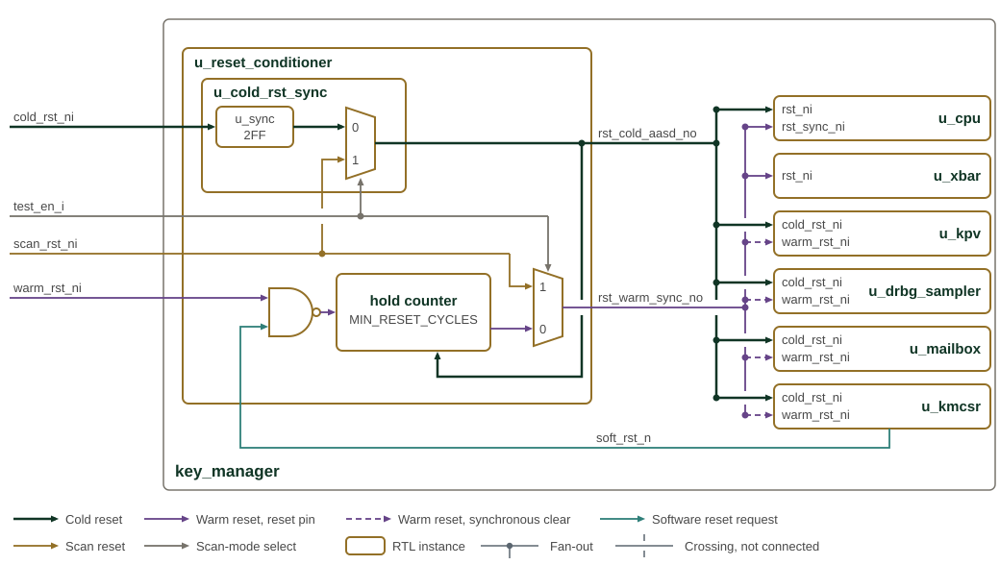
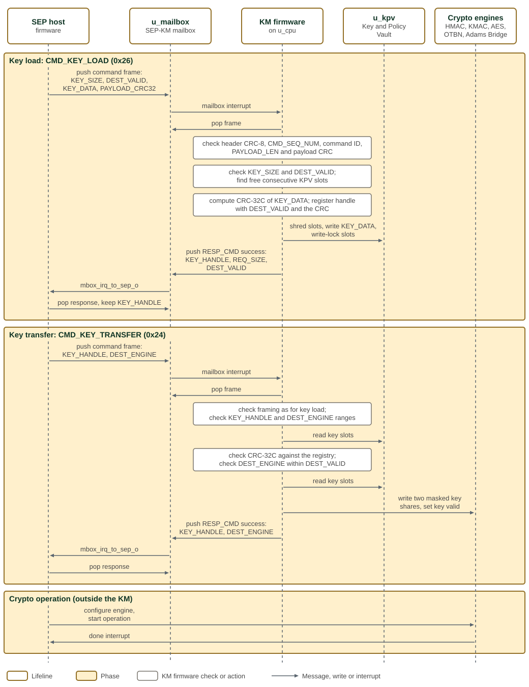
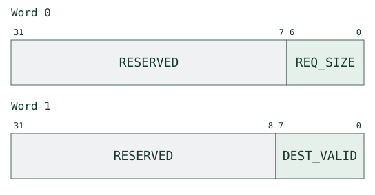
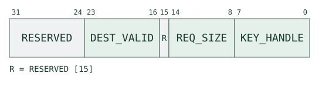
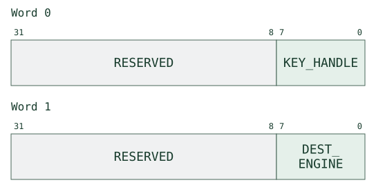
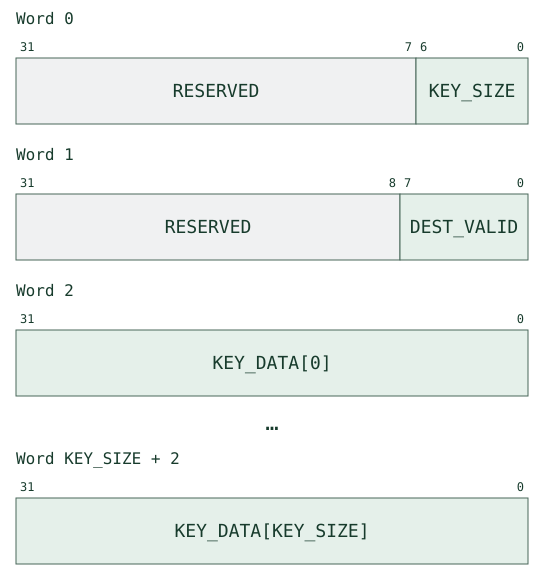
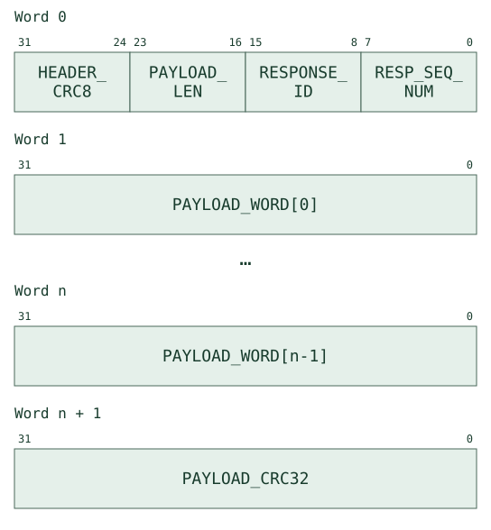
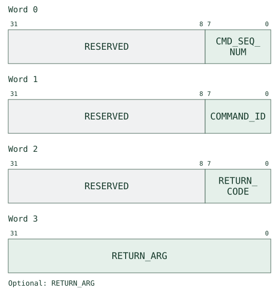
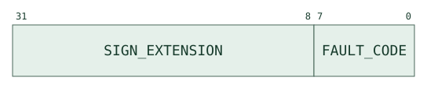

Key Manager (KM)
The Key Manager provides isolated key storage, random key generation, explicit revocation, and delivery to the cryptographic accelerators. The following sections describe its hardware architecture and firmware interface.
The immutable ROM firmware first initializes the Key Manager, then remains active to process SEP mailbox commands and service interrupts. It is both startup firmware and the resident runtime; "boot ROM" names the memory, not its only function. On an explicit firmware-load/execute command, ROM can hand control to mutable firmware in SRAM. See Firmware for the implemented services, command protocol and handover rules.
1. Architecture
The Key Manager (KM) uses a PicoRV32 CPU, private memories and a Key and Policy Vault (KPV) to separate key management from SEP host execution. The host submits commands and supplied key material through a mailbox; KM firmware validates requests, accesses the vault and writes accelerator sideload registers. The host has no direct bus access to KM key storage.
The ROM is the resident command processor as well as the startup firmware. Its mailbox commands report the hardware, ROM and SRAM firmware versions and the recoverable-error status, generate keys from the DRBG, load SEP-supplied keys, revoke keys, transfer keys to the accelerators, shred accelerator sideload keys, capture the Adams Bridge ML-KEM shared key into the vault, set cold-domain OTP read-locks, and either load and execute mutable firmware in SRAM or keep the ROM running (Key Manager command summary).
A single KM-mastered AXI4-Lite crossbar connects KMCSR, KPV, the DRBG sampler and mailbox to the private accelerator key interfaces and the SEP OTP/eFuse access path. The accelerator interfaces serve AES, HMAC, KMAC, OTBN and Adams Bridge. Address decoding separates their windows; command and key policy checks belong to KM firmware.
The Memory Map and Register Reference at the end of the chapter defines the address windows and all generated fields. Firmware defines commands, validation and responses. ROM/SRAM parity detects errors but does not correct them; the ROM fault handler can report an unrecoverable fault and halt the CPU.
Key Manager architecture shows the Key Manager CPU, vault, mailbox, and accelerator interfaces.

White boxes are key_manager instances, cream boxes are interconnect or glue
logic, and grey boxes lie outside key_manager. M and S mark the manager and
subordinate side of each AXI4-Lite or AXI-Stream connection.
The CPU reaches the ROM and SRAM through direct memory ports rather than the
crossbar. The ROM and SRAM hard macros are instantiated at integration level,
so key_manager exposes rom_mem_* and sram_mem_* ports to them. Every
other CPU access leaves the PicoRV32 AXI4-Lite master and is decoded by
u_xbar.
The five engine ports reach only the key CSRs of each engine wrapper. In SEP
each passes through its own isolation stage and carries no host traffic; the
SEP host reaches the engines' data registers through the crypto interconnect,
a path the KM does not see. For offsets in the MAP, CTRL and MMR register maps,
the OTP/eFuse port replaces address bits [31:12] with
OTP_EFUSE_REMAP_BASE[31:12] before driving efuse_req_o; it answers every
other offset in the window with SLVERR.
A rising edge on wipe_state_i, or a CPU trap, zeroes the KPV and sets
IRQ_STATUS.WIPE_STATE in KMCSR. The CPU trap also drives
unrecoverable_err_o. u_kmcsr drives soft_rst_n into
u_reset_conditioner (Key Manager cold and warm reset conditioning). test_en_i selects the
scan reset in u_reset_conditioner and drives the test inputs of u_xbar and
u_mailbox.
1.1. Parameters
The Key Manager is configured through its ROM and SRAM sizes, the mailbox FIFO depth,
the read-data behaviour of its memories, and the address of the eFuse controller.
The main KM SRAM is 32 KB (8192 × 32-bit words), implemented with the scrambler macro
scrambler_8192x32. The SRAM macro must return read data (rvalid) at least one cycle
after the cycle in which it grants the read, because the SRAM interface descrambles and
parity-checks each response with the address and byte strobes it captures at the grant.
The parameters of key_manager are listed in key_manager.
1.2. Reset Conditioning
Key Manager cold and warm reset conditioning shows how cold and warm reset requests are conditioned for the Key Manager.

Each reset net keeps its own colour. The cold and warm outputs of
u_reset_conditioner run in two spines beside the instances, with the port
name at each instance edge. A solid warm line drives a reset pin; a dashed warm
line is a synchronous clear, which the instance samples on clk_i rather than
using as a reset. Junction dots mark fan-out, and a gap in a line
marks a crossing without connection. In test mode, test_en_i selects
scan_rst_ni in both scan multiplexers.
Cold and warm resets have different scopes. Warm reset restarts the CPU and its control interfaces while retaining cold-domain state and memory contents. Retention across warm reset does not make SRAM or registers non-volatile, and reset must not be treated as a key-data wipe.
Key Manager reset inputs identifies the two external reset inputs and their SEP connections.
| Input port | Polarity | Synchronicity | Integration tie-off (SEP) |
|---|---|---|---|
|
Active-low |
Asynchronous |
SEP system cold reset ( |
|
Active-low |
Synchronous to |
SEP KM sub-component software-reset CSR bit ( |
SEP isolates the Key Manager’s AXI paths before asserting the warm reset; see Resetting the Key Manager.
km_reset_conditioner produces two active-low outputs:
-
rst_cold_aasd_no:cold_rst_nipasses throughprim_rst_syncfor asynchronous assertion and synchronous release. There is no cold-path hold counter. Cold reset also asserts the warm path. -
rst_warm_sync_no: either synchronous input,warm_rst_nior KMCSRsoft_rst_ni, triggers a hold counter. Reset remains asserted for at leastMIN_RESET_CYCLESclocks (default 10) after the trigger releases. The cold output asynchronously resets this counter; cold reset is not sampled as a synchronous trigger.
scanmode_i selects scan_rst_ni to override both paths for DFT.
Key Manager reset-domain assignment identifies resettable state;
it does not imply that key-data flops or memory arrays have reset values.
| Reset domain | Components |
|---|---|
Cold only ( |
ROM/SRAM memory interfaces and parity logic; SRAM scrambler
lock state ( |
Warm + cold ( |
PicoRV32 CPU core; the KM-internal AXI4-Lite crossbar/fabric transaction state; the KMCSR warm subset ( |
The internal AXI4-Lite fabric and generated register CPU interfaces reset on warm reset, discarding their in-flight transaction state. This is an internal reset boundary, not a completion or cancellation guarantee for an external accelerator transaction. Mailbox FIFO contents survive warm reset; ROM flushes the mailbox during boot before accepting new commands.
Writing 0x53525354 (ASCII "SRST") to KMCSR SOFT_RST_CODE triggers the
warm path. BOOT_STATUS.COLD_BOOT_DONE survives it: ROM sets this flag after
cold-boot initialization and reads it on subsequent boots to distinguish
warm restart from cold initialization.
1.3. Mailbox Transport
The mailbox is a raw 32-bit word transport with two FIFOs: inbound SEP-to-KM and outbound KM-to-SEP, each at least 16 words deep. Hardware does not parse commands, validate CRCs or enforce key policy. Firmware defines the framing in Key Manager message with payload and Key Manager header-only message; use the firmware reference for command legality, sequencing and error responses.
| header_crc8[31:24] | message_length[23:16] | function_id[15:8] | sequence_number[7:0] |
|---|---|---|---|
Data_1[31:0] |
|||
Data_2[31:0] |
|||
… |
|||
Data_N[31:0] |
|||
CRC32[31:0] - checksum |
|||
Command/response messages without a data payload (message_length = 0x00) drop the payload CRC32 and only contain the header (Key Manager header-only message).
| header_crc8[31:24] | 0x00 | function_id[15:8] | sequence_number[7:0] |
|---|
Each FIFO word carries a separator bit that the sender sets on the last word of a message. The receiver uses it with the header length to check framing. Reads pop words; writes push words. Status reports fill level and empty/full conditions.
A write to a full FIFO drops the incoming word without changing queued data. An empty read has no data to consume. Both return SLVERR by default, with configuration allowing OKAY, and set the corresponding sticky overflow or underflow status. Each side has write-one-to-trigger flush control: either side flushes both FIFOs and sets the peer’s flushed-by-other status.
Each side independently enables its interrupt sources. Receive-data-available and transmit-space-available are level conditions; overflow, underflow and peer-flush are sticky conditions. Their enabled OR drives one interrupt to each side: directly to the KM CPU for the KM side, and to the SEP interrupt controller for the SEP side. KM firmware validates received words before executing a command and uses the outbound FIFO for responses and fault notifications. Error handling and resynchronization are firmware operations, not hardware command filtering.
Key Manager mailbox transport shows the mailbox paths used for SEP commands and Key Manager responses.

The KM CPU enters at the top and the SEP host at the bottom. Each side’s
decode sends its WRITE_DATA address to a FIFO push and its READ_DATA
address to a FIFO pop, and every other address to its own register block.
Words therefore travel upwards through u_inbound_fifo and downwards through
u_outbound_fifo. Each register block reads the status of both FIFOs, and a
FLUSH from either block clears both of them. MAILBOX_DEPTH sets the depth
of each FIFO; SEP instantiates the KM with 16 words.
1.4. Key Delivery
Keys reside in the KPV and reach accelerator sideload registers through the KM-mastered key path. Host-supplied material enters through mailbox commands; generated secret material is not returned through a direct host read path. The generated Memory Map defines the KM’s allocated windows.
Key Manager accelerator key path marks secret-bearing storage in red and separates accelerator key delivery from the host-accessible data path. This separation does not establish resistance to physical fault injection or side-channel attacks. Firmware’s key-data CRC detects corruption; it is not a substitute for access control or a physical-attack guarantee.

The figure shows one engine wrapper; <eng> stands for otbn, aes, kmac
or hmac. The KM port for that engine (otbn_req_o, aes_req_o,
kmac_req_o or hmac_req_o) is a point-to-point 32-bit AXI4-Lite path. It
passes only through u_<eng>_key_isolate in sep_crypto_axi_interconnect,
which drains the path when sep_reset_ctrl requests isolation, and ends on the
wrapper’s generated <eng>_wrapper_key_reg block. The KEY_SHARE0 and
KEY_SHARE1 words are write-only, and reads return zero. The two shares and
KEY_CTRL.KEY_VALID drive the engine’s keymgr_key_i sideload port; the XOR
of the two shares is the key. The shares are 8 words each, or 12 words for
OTBN.
The SEP host reaches the engine’s own registers on a separate path: the
crypto interconnect demultiplexes the 64-bit AXI4 host bus in u_axi_demux,
converts it to 32 bits in u_<eng>_axi_dw_converter and to AXI4-Lite in
u_<eng>_axi_to_axi_lite, and passes it through u_<eng>_host_isolate, and the
wrapper bridges it to the engine’s TL-UL port. isolate_req_i from
sep_reset_ctrl drives both isolation stages. The host path does not reach
the key registers, and the KM path does not reach the engine’s control
registers.
Adams Bridge follows the same pattern through u_abr_key_isolate and
abr_wrapper_key_reg, where sep_abr_kv_shim turns the registers into
Adams Bridge key-vault reads (see Adams Bridge Key Sideload Interfaces).
1.5. Adams Bridge Key Sideload Interfaces
The KM provides dedicated sideload interfaces to the Adams Bridge (ABR)
post-quantum engine, exposed as a single AXI4-Lite register block mapped at
0x0001_C000–0x0001_C7FF. The block has two directions: four seed inputs
the KM drives into ABR, and one shared-key output ABR drives back into the KM.
Seed sideload inputs (KM → ABR). The four seed inputs carry key material the KM side-loads into ABR (Adams Bridge seed sideload inputs).
| Interface | Width | Description |
|---|---|---|
ML-DSA seed |
256-bit |
Seed for ML-DSA key generation. |
ML-KEM seed D |
256-bit |
ML-KEM seed D. |
ML-KEM seed Z |
256-bit |
ML-KEM seed Z. |
ML-KEM message |
256-bit |
ML-KEM message input. |
Each seed uses the two-share masked layout (two key-share register banks
whose XOR is the real value, plus a key_valid bit) and is write-only to KM
firmware. The seeds are valid dest_valid destinations (bits 4–7), so they
are targets of CMD_KEY_TRANSFER and CMD_ENGINE_SHRED, and ROM shreds them
during the mutable-firmware handover.
ML-KEM shared-key output (ABR → KM). ABR computes an ML-KEM shared key and
presents it to the KM. The interface comprises a 256-bit (8-word) key register
array, a KEY_CTRL register holding key_valid, and an IRQ_STATUS /
IRQ_ENABLE interrupt pair.
-
The key words and
KEY_CTRL.key_validare read-only to KM firmware: hardware setskey_validand loads the key words when ABR delivers a new shared key. Firmware consumes the key by writingKEY_CTRL = 0, which clearskey_validand hardware-zeroizes (hwclr) the key words. Software can clearkey_validbut cannot set it. -
IRQ_STATUS.key_validis a sticky, write-one-to-clear bit (hwset
stickybit+onwrite=woclr). Hardware sets it on the key-ready event; firmware clears it by writing 1. The masked interrupt to the KM CPU isIRQ_STATUS & IRQ_ENABLE, on a dedicated PicoRV32 interrupt (bit 5).
The KM firmware ISR acknowledges the IRQ by clearing IRQ_STATUS and flags the
main loop; it does not consume the key. The shared key is later captured into a
KPV slot in response to a SEP CMD_ABR_SK_TRANSFER command (see the firmware
documentation).
1.6. Key Manager CPU Interrupt Processing
The PicoRV32 receives three separate external interrupt groups:
| CPU IRQ bit | Source | Service boundary |
|---|---|---|
3 |
KMCSR |
Sticky hardware events, masked by |
4 |
Mailbox |
Enabled level and sticky FIFO conditions; independent of KMCSR |
5 |
Adams Bridge shared key |
Shared-key-ready status; see Adams Bridge Key Sideload Interfaces. |
KMCSR IRQ_SET injects its corresponding status events for ISR testing.
Mailbox and Adams Bridge interrupts retain their own status/enable controls.
The CPU’s interrupt mask is an additional level of control. A reported event,
an enabled interrupt and a CPU trap are distinct; see Unrecoverable Faults.
1.7. Host Coordination
The SEP host submits key-load and key-transfer commands through the mailbox. The Key Manager validates the request and policy before accessing the vault or delivering key material to a cryptographic engine.
SEP host and Key Manager key-load and key-transfer sequence shows the command, validation, vault-access, and key-delivery sequence.

Time runs downwards. Each arrow is a mailbox word push or pop, a register write
or read, or an interrupt, and each white box is a check or action the KM
firmware performs without leaving the CPU. The figure shows the success path.
A failed check ends the command with a RESP_CMD error code and leaves the KPV
and the key registry unchanged.
On a key load, the firmware registers the handle before it writes the KPV, and
destroys the handle again if a KPV write fails. On a key transfer, the firmware
reads the key slots twice: once to check their CRC-32C against the key
registry, and again to write the key. Each requested engine receives the key as
two key shares whose XOR is the key, the first a DRBG mask, before its key-valid
bit is set. The engines are written in the order of their DEST_ENGINE bits,
and the first failed write ends the transfer.
1.8. Key and Policy Vault (KPV)
The KPV exposes 64 slots through one KM-only AXI4-Lite interface. Each slot
contains 512 bits (16 words) of key data and a 32-bit CTRL register.
Multi-slot keys, such as RSA3K material, require consecutive slots; the
firmware registry tracks the span and the used words in the final slot.
Hardware has no span field.
| Field | Behavior |
|---|---|
|
Write-one-to-set. Blocks key-data writes with SLVERR; does not block CTRL
writes or erase. Hardware holds it set while |
|
Write-one-to-set. Key-data reads return zero with SLVERR. Also set when an erase completes on a sealed slot. |
|
Write one to overwrite all 16 words with pseudorandom data. No lock blocks
erase. Poll until hardware clears the bit. If the slot is unsealed at
completion, all CTRL bits clear and the slot is reusable. If sealed at
completion, it is retired: |
|
Write-one-to-set. Implies a write lock. Erase destroys the contents without making the slot reusable; taking a seal during an erase also causes retirement. |
|
Reserved. |
The lock/seal bits clear on warm or cold reset. Erase uses the shared scrambler and key-data write port: firmware must poll CTRL rather than access key data while an erase is active.
Sealed and retired slots. A slot with seal set is sealed: readable, but not writable, because hardware holds lock_write set alongside the seal. That surviving lock_write is evidence that the slot holds what it held when the seal was taken, which is what lets firmware that inherits the vault after a handover trust material provisioned before it (see the KM firmware specification). A write lock on its own would prove nothing, since an erase clears it and frees the slot to be rewritten with chosen material and re-locked.
Erasing a sealed slot is still permitted, and leaves it retired: lock_write held, lock_use set, seal still set, and the data destroyed. A retired slot can be neither read, rewritten nor reused until the next warm reset, and repeating the erase changes nothing. Revocation and reuse are therefore separate: firmware can destroy a sealed key it no longer trusts without handing the slot to whoever asked for the destruction.
An emergency wipe also releases sealed and retired slots by clearing key data
and all CTRL bits. The safety of that release depends on CPU containment:
a trap already halts the CPU, whereas an externally requested wipe requires
firmware or host coordination (Wipe State). Do not assume that asserting
wipe_state_i directly halts CPU execution.
CTRL resets to zero. Key-entry data flops have no reset value and power up undefined; cold or warm reset alone does not overwrite their contents.
1.9. KPV Scrambling
The KPV supports address and data scrambling during normal operation for all key entry data reads and writes, using the same PRESENT-based approach as SRAM scrambling. When enabled, the stored representation of key data is scrambled; the KM port sees the logical (unscrambled) data on the bus, with scrambling/descrambling performed transparently by the KPV.
The KPV has a scrambler key register (32-bit) and a scrambler control register with an enable bit and a lock bit. These registers are accessible only via the KM port. The lock bit is write-one-only (0→1): software sets lock by writing 1; writing 0 has no effect; lock cannot be cleared until the next cold KM reset. The KPV scrambler enable and lock are state in the cold reset domain — they are preserved across a warm reset and cleared only by a cold reset. Scrambling is disabled by default after a cold reset.
When scrambling is enabled, the KPV uses the same scrambler algorithm as
SRAM but sized for 1024×32 words (64 slots × 16 words). The scrambler
address input is the linear register index (0..1023): slot_index × 16
word_index. Address scrambling maps the logical index to a scrambled
physical storage index. Data is scrambled before storage and descrambled
after retrieval. Only key entry data words are scrambled; CTRL registers
are not scrambled.
The KPV scrambler key register has no reset value (powers up random/undefined for security). The scrambler control register (enable and lock) resets to 0. On an emergency wipe (rising edge of wipe_state), the entire KPV is reset to zero including key data, control registers, and the KPV scrambler key and control registers.
1.10. Wipe State
Hardware forms a wipe event from wipe_state_i | cpu_trap and detects its
rising edge. The resulting pulse clears all 1024 KPV data words, all 64 slot
CTRL registers, and KPV scrambler key/enable/lock state on the clock edge.
It also records the KMCSR wipe event. This hardware action covers the KPV;
it does not itself scrub SRAM, mailbox data or accelerator sideload registers.
In SEP, sep_cpu_ctrl.KM_WIPE_CTRL.wipe_state drives the external input.
Hold it high for at least one complete KM clock period. Return it to zero
before requesting another rising edge; the software-controlled registered
level provides the required hold. SEP does not connect a hardware tamper or
alarm source to this input. A CPU trap independently triggers the same KPV
wipe and asserts unrecoverable_err_o while the CPU is halted.
An external wipe does not force a CPU trap in hardware. The ROM enables the wipe interrupt and treats it as an unrecoverable fault, but that response depends on interrupt delivery and execution of its handler. Software that masks the event or replaces ROM must not assume the CPU has stopped. The host/integrator must prevent continued use of the released vault after an external wipe until recovery resets the CPU. Warm reset clears the trap and re-enters ROM; it is not itself the KPV data erase mechanism.
1.11. Scan and Scan-Dump Protection
The complete KM is Class 2 under SEP’s scan-chain protection policy: processor, vault, KMCSR, mailbox, entropy sampler, scramblers, internal fabric, reset logic and register blocks. Including non-secret control state avoids relying on a per-register classification.
-
Test scanning is permitted only in secure test mode. The dedicated-chain DFT controller admits test commands only with
secure_tm = 1. At the eFuse shadow boundary, this mode replaces the four Class 1 sources (*_UIDandCLASS_KEY) with valid zero values before KM captures them. Those source assets remain outside every scan chain. Public identities, lifecycle and demotion policy remain available. -
Scan dump is never permitted. No lifecycle state, owner or combination of
*_DBGfeature enables may turn a test command into a dump. Feature controls determine whether the chain is reachable; the command-class restriction enforces the no-dump policy. General-logic debug enablement does not grant access to the KM secret-bearing chain.
KM-local copies of the UIDs, class key and public identities clear on cold and warm reset (including firmware soft reset) and reload from the shadow bus after release. Lifecycle/demotion captures persist across warm reset. Firmware access locks are independent of scan protection.
Writable KM SRAM is a Class 2 companion memory because it can retain key, message and firmware working state. Its memory-test policy must also forbid dump. Immutable ROM cannot retain runtime secrets and is excluded. These requirements define the integration boundary; the local KM RTL alone does not establish implementation of the external DFT controller.
1.12. Key Manager Control and Status Registers (KMCSR)
KMCSR manages interrupts, reset requests, execution permissions, memory
protection and OTP shadow readout. It is separate from the KPV and DRBG
sampler banks. km_csr supplies the behavior around generated km_csr_reg;
Control and Status Registers supplies every offset and field definition.
The operating contracts below supplement that generated map.
The VERSION register (offset 0x000) is a read-only register that reports
the Key Manager hardware revision using semantic versioning. It uses the
following canonical 32-bit layout, mandated so all software and testbenches
decode the version identically (Key Manager VERSION fields).
| Bits | Field | Description |
|---|---|---|
|
|
Patch version component. |
|
|
Minor version component. |
|
|
Major version component. |
|
|
Reserved; reads as 0. |
The current hardware revision reads as version 1.0.0 (MAJOR=1, MINOR=0,
PATCH=0) after reset with no software initialization. The register is
read-only: a write completes with an AXI SLVERR response and does not change
the value.
The interrupt aggregation logic collects twelve hardware event sources into a
single CPU interrupt. Each source has a sticky status bit in IRQ_STATUS
(write-one-to-clear), a mask bit in IRQ_ENABLE, and a software-trigger bit in
IRQ_SET for ISR testing. The aggregated interrupt output is the logical OR of
the masked status bits (IRQ_STATUS & IRQ_ENABLE).
Key Manager interrupt sources maps hardware events to the sticky interrupt-status bits.
| Bit | Source | Description |
|---|---|---|
0 |
ROM Parity Error |
Parity mismatch detected on a ROM read. |
1 |
SRAM Parity Error |
Parity mismatch detected on an SRAM read. |
2 |
ROM Write Error |
A write was attempted to the read-only ROM region. |
3 |
SRAM Write-Lock Violation |
A write targeted a locked 1 KB SRAM region. |
4 |
AXI SLVERR |
An AXI4-Lite slave returned SLVERR. |
5 |
AXI DECERR |
An AXI4-Lite slave returned DECERR. |
6 |
DRBG Error |
The DRBG sampler reported a timeout or stream error. |
7 |
Wipe State |
Rising edge detected on the |
8 |
OTP Change |
A monitored OTP readout field’s decoded value changed (see |
9 |
OTP Integrity Violation |
OTP dual-rail integrity violation (value and complement not complementary). |
10 |
Execute Violation |
Instruction fetch from a non-whitelisted (non-executable) memory region, excluding the ROM. |
11 |
ROM Access Violation |
ROM instruction fetch or data read attempted after the ROM lockout engaged. |
Bits [31:12] of IRQ_STATUS are reserved. Two interrupt sources are not part
of the KMCSR IRQ_STATUS aggregation and are serviced separately: the mailbox
sources (FIFO data-available/space-available and overflow/underflow/flush
conditions), and the Adams Bridge ML-KEM shared-key interrupt on its own
PicoRV32 interrupt (bit 5, see Adams Bridge Key Sideload Interfaces).
The CPU IRQ entry vector is programmable through two registers. IRQ_ENTRY_ADDR
holds the effective IRQ entry address and resets to the built-in default
0x0000_0010; firmware may write any 32-bit value (the hardware performs no
alignment or validity checking) and the register is always readable, returning
the current effective entry address. IRQ_ENTRY_LOCK is a write-one-only lock
bit that can only transition from 0 to 1: while it is 0 firmware may reprogram
IRQ_ENTRY_ADDR freely; once it is 1, writes to IRQ_ENTRY_ADDR are ignored
(the value remains readable and unchanged) and further writes to
IRQ_ENTRY_LOCK have no effect. Both registers are in the warm reset domain:
every reset that re-enters ROM (cold, external warm, and KM soft reset)
restores IRQ_ENTRY_ADDR to 0x0000_0010 and clears IRQ_ENTRY_LOCK.
SRAM_LOCK controls writes to 32 SRAM regions of 1 KB each; see
SRAM Write Locking for reset and handover policy. SRAM scrambling
key/enable/lock state is cold-domain state and survives warm reset.
The soft-reset code and cold-boot flag are described under Reset Conditioning.
Execute-Permission Whitelist (NX)
The PicoRV32 enforces a whitelist of executable memory regions on every
committed instruction fetch (mem_valid && mem_instr). Any fetch from
outside the whitelist immediately pulses KMCSR.IRQ_STATUS.EXEC_VIOLATION,
which (if unmasked) routes to the ISR and triggers the unrecoverable fault
ROM_KM_UFAULT_EXEC. A ROM fetch refused by the ROM lockout described below
is reported on ROM_ACCESS_VIOLATION instead, so the two bits are disjoint.
The whitelist mode is controlled by the KMCSR.SRAM_EXEC_MODE.enable bit
(write-1-only, warm-reset domain) (Key Manager executable regions).
enable |
Executable regions | Forbidden regions |
|---|---|---|
|
ROM ( |
All SRAM; Peripheral/AXI |
|
Write-locked 1 KB SRAM regions ( |
Unlocked SRAM; Peripheral/AXI; the ROM once the lockout engages |
The fetch-region index is a plain slice of the byte address, which works only
because the SRAM base (0x0000_8000) is aligned to the SRAM size; it is the
same slice km_sram_interface uses to check data writes, so the two views of a
region can never disagree.
-
VROM is the virtual ROM window,
0x1000_0000–0x1000_FFFF. Only a simulation build that definesOCAH_KM_VROMdecodes it; there it is executable in both modes and exempt from the ROM lockout, and it carries no security requirement. Without the define the window is an unmapped address: a load or store answers DECERR, and a fetch pulsesEXEC_VIOLATION.
For the define and the builds it is rejected in, see Key manager defines in the Integrator Guide.
SRAM_EXEC_MODE.enable is set by the stack-less handover assembly
(rom_handover_jump.S) immediately before the jalr to mutable firmware,
after SRAM write-lock regions have already been committed. This minimises
the window between enabling SRAM execution and the first fetch from SRAM.
The bit is write-1-only and cleared by warm reset, so the ROM-only
whitelist is re-applied on every boot cycle.
ROM Lockout
Setting SRAM_EXEC_MODE.enable exchanges the ROM for write-locked SRAM rather
than adding to the whitelist. Were it purely additive, mutable firmware would
inherit read and fetch access to the ROM that handed control to it, leaving the
ROM’s key-management routines and its rom_persist structure reachable by code
the ROM does not trust.
The exchange is staged so that the handover can complete. Writing the bit only
arms the lockout; the lockout engages on the first committed instruction
fetch from a write-locked SRAM address, which is the point at which mutable
firmware actually begins executing. Everything the handover assembly runs after
its arming store — the store itself, the register clears, the jalr — is ROM
code, and remains legal precisely because the lockout has not engaged yet.
Engaging on a fetch rather than on any ROM access also keeps the rule
independent of incidental data traffic: ROM code reads rom_persist, which
itself lives in a write-locked SRAM region.
Once engaged, the lockout blocks ROM instruction fetches and ROM data reads
until the next warm or cold reset. The latch is in the warm reset domain, the
same domain as SRAM_EXEC_MODE.enable, so the transition is one-way within a
boot and every reset that re-enters ROM restores ROM access. ROM writes are
unaffected and continue to raise ROM_WRITE_ERR.
Blocked access behaviour. A blocked access returns zeros; ROM content is never delivered. What follows depends on the access type:
-
A blocked data read raises
ROM_ACCESS_VIOLATIONand nothing else. Zero is a legitimate data value, so no decode and no trap occur. -
A blocked instruction fetch raises
ROM_ACCESS_VIOLATIONand additionally feeds an all-zeros instruction stream, which the PicoRV32CATCH_ILLINSNlogic traps as an illegal instruction.
The two reports are ordered by causality rather than by arbitration. The
violation is combinational in the cycle of the blocked access, whereas the
illegal instruction cannot be detected until the zero word has been returned and
decoded, which is strictly later. Since IRQ_STATUS is sticky, the violation
bit is always recorded first.
Which mechanism acts depends on the interrupt mask, and after handover only
one does. Handover leaves all CPU interrupts masked, so the illegal instruction
takes the PicoRV32 trap state rather than an interrupt: the core halts,
unrecoverable_err_o asserts, and the KPV is wiped. The ROM_ACCESS_VIOLATION
interrupt is inert in that state — it sets its sticky bit but has nowhere to
vector, because the ROM ISR it would have vectored to is itself in the ROM the
lockout has just revoked. A real post-handover breach therefore halts the KM
without emitting a mailbox fault code; ROM_KM_UFAULT_ROM_ACCESS is reportable
only while the ROM is still live (via IRQ_SET) or through a vector that
mutable firmware installed itself.
Both mechanisms are retained because they do different jobs. The violation bit is the diagnostic that distinguishes a lockout breach from any other illegal-instruction halt; the trap is the containment, and it requires no firmware cooperation, no enabled interrupt, and no reachable handler.
Error Events
Unrecoverable Faults
These events cause the CPU to halt when the corresponding interrupt is unmasked and the ISR determines recovery is not possible. They include, but are not limited to, the following conditions:
-
CPU trap events
-
ROM or SRAM parity errors
-
Invalid writes to ROM or SRAM
-
AXI bus faults (SLVERR or DECERR)
-
Instruction fetch from a non-whitelisted (non-executable) memory region
-
ROM instruction fetch or data read after the ROM lockout engaged
-
Any other unhandled exception or fault
The PicoRV32 includes a trap state that asserts a trap signal. When the CPU enters this state execution halts. The CPU will enter this state under the following conditions:
-
An EBREAK or other illegal instruction is encountered and the associated interrupt is masked.
-
The CPU encounters a misaligned access and the associated interrupt is masked.
-
An EBREAK or other illegal instruction is encountered within an ISR.
If an ISR determines that an error event is not recoverable, it will call the EBREAK instruction to trap and halt the core. The CPU trap signal is passed out of KM to indicate an unrecoverable fault. This signal indicates the KM has encountered an unrecoverable fault and is no longer executing (it will not respond to further commands). The signal remains asserted for as long as the KM remains in the trap state. The trap is cleared by resetting the KM CPU — either a cold reset or a warm reset (the PicoRV32 core is in the warm reset domain) restarts the core and clears this signal.
Recoverable Faults
These events do not cause the CPU to halt. They include:
-
Receiving corrupt or malformed command messages.
-
Detection of possible tampering or attack conditions that are not immediately terminal.
-
Any one of the previously listed error interrupts from which the corresponding ISR is able to gracefully recover.
The KM provides an output signal that indicates when a recoverable fault has been successfully handled. This signal is driven by a dedicated register bit in the KMCSR. When an ISR recovers gracefully from an error, it sets this register bit. The bit remains set until the SEP sends a firmware command to the KM to clear it (KM firmware clears the register bit in response to that command).
1.13. DRBG Sampler
The sampler bridges a CPU DATA read to the selected 32-bit entropy stream.
It is an AXI4-Stream sink: TREADY is an output, and TVALID, TDATA[31:0]
and TSTRB[3:0] are inputs. Availability is not guaranteed; a pending read
waits for a word or an enabled timeout.
1.13.1. Reads, prefetch and register access
A DATA read consumes a prefetched word if one is available. Otherwise the
sampler asserts TREADY and assembles four valid bytes before completing the
AXI read. TSTRB selects bytes to pack in beat order, walking lanes 0 through
3; partial beats require further handshakes. Bytes beyond the four needed
for the current word are not carried into the next word.
CFG.PREFETCH enables a single prefetched word. Consuming it through DATA
invalidates it; prefetch alone does not increment the direct-read success
counter. Disabling prefetch clears its data/valid state. The read-only
PREFETCH_DATA register exposes the stored word for debugging and does not
consume it, so repeated debug reads are not fresh random samples.
| Register or field | Access and meaning |
|---|---|
|
Read obtains a sample; writes return SLVERR. |
|
Read/write; reset 0 (disabled). |
|
Read/write active-read wait budget in clocks; reset 256. The counter loads |
|
Read-only indication of input |
|
Read-only indication that a prefetched word is available. |
|
Sticky timeout indication; write one to clear. |
|
Sticky stream-protocol error; write one to clear. |
|
Timeout/stream-error count, saturating at |
|
Counts only reads completed through |
|
Read-only debug view; writes return SLVERR. |
Because prefetched reads bypass StRespond, COUNT_GOOD is not a total of
all DATA reads when prefetch is enabled.
1.13.2. Errors and reset
Timeout completes an active read with SLVERR and zero data. The protocol
monitor detects a different event: previous-cycle TVALID=1, TREADY=0,
followed by TVALID=0 (withdrawal before handshake). It sets STREAM_ERR,
increments COUNT_BAD and pulses the KMCSR DRBG error source even when no
read is active. If the active FSM is requesting or assembling a word, it
also returns SLVERR with zero data. A prefetch in progress is discarded.
A TVALID drop after a completed handshake is not this violation.
The sampler is in the KM warm-reset domain, not the TRNG reset domain. Quiesce KM before resetting the TRNG. Resetting the producer alone can withdraw an unaccepted beat or interrupt byte assembly; it does not clear partial bytes held by the sampler. Holding KM in software reset clears sampler control/assembly state before the source restarts.
Warm or cold KM reset restores configuration defaults, counters, error bits, valid flags and request/assembly control. Data registers (prefetch data, assembly storage and the response slot) have no reset value; invalidating their control state is not a guaranteed data scrub.
| State | Active DATA-read behavior |
|---|---|
|
Returns an available prefetch without entering |
|
Asserts |
|
Keeps |
|
Completes the assembled read with OKAY and increments |
|
Completes with SLVERR and zero data after the active wait budget expires; returns to idle. |
|
Completes with SLVERR and zero data after a detected withdrawal during request/assembly; returns to idle. |
A separate prefetch FSM uses the request/assembly states. It accepts beats
only when there is no active CPU DATA read. In the active request/assembly
states, a stream error takes priority over timeout, and timeout takes
priority over accepting a completing beat.
1.14. OTP Inputs and Readout
The KM consumes OTP-derived material over a private hardwired bundle so the
values cannot be spoofed by software. SEP dual-rail-encodes each 256-bit field
at the SEP-to-KM boundary ({~value, value}) from the sensed eFuse shadow:
-
the fuse-provisioned secrets —
CHIPLET_UID,SIP_UID,SYS_UID,CLASS_KEY; -
the three 256-bit public identities —
SEP_CHIPLET_ID,SEP_SIP_ID,SEP_SYS_ID— one per owner; -
the life-cycle state.
UID delivery and protection. The UIDs are held in a KM-local copy. The KM’s own warm-domain read-lock protects that copy at mutable-firmware handover (see UID provisioning and access) so mutable firmware cannot read it. This KM-local lock is separate from, and additional to, the eFuse controller’s own locks.
Public identity delivery. The three public identity fuses take the same
dual-rail encode as the secrets. They remain on the KM port in secure test
mode: the eFuse controller blanks only the four secrets on the hardware shadow
output. The eFuse per-field read-lock bits (LOCKS[59], [61], [63]) hide
software and JTAG shadow reads; they do not blank the hardwired KM port. The
KM’s own OTP_READ_LOCK and OTP_READ_LOCK_COLD bits zero the KMCSR readout
words only.
Life-cycle state. The life-cycle state is hardwired into the KM as authoritative, software-readable status. Being non-secret it is neither locked nor wiped. The key registry does not bind keys to it.
eFuse access path. The KM also has a programmatic (AXI-Lite) path to the eFuse controller — for example to request a read or a program operation. That path is treated exactly like a system-host access: same access filtering, and it honors the eFuse controller’s native per-field read/write locks, so the KM gains no read privilege over the fuse array beyond the SEP host’s.
Demotion and PCR. The owner demotion state is hardwired from the Life Cycle Controller (LCC). A PCR Vault (PCRV) and PCR-change interrupt are not present in this integration.
KMCSR readout registers. The OTP-derived fields above are exposed to KM
firmware in the KMCSR region as hardware-driven, read-only registers. Each field
is delivered to the KMCSR as dual-rail complementary values ({~value, value})
and decoded within the KMCSR, which continuously verifies the complement
relationship.
Key Manager OTP readout registers lists the OTP-derived fields exposed to Key Manager firmware.
| Register | Width | Contents |
|---|---|---|
|
8-bit |
Differential-encoded life-cycle state |
|
4-bit |
Two 1-bit demotion flags, each differentially encoded into 2 bits: |
|
8 × 32-bit |
256-bit CHIPLET_UID dual-rail words. |
|
8 × 32-bit |
256-bit SIP_UID dual-rail words. |
|
8 × 32-bit |
256-bit SYS_UID dual-rail words. |
|
8 × 32-bit |
256-bit CLASS_KEY dual-rail words. |
|
8 × 32-bit |
256-bit SEP_CHIPLET_ID dual-rail words. |
|
8 × 32-bit |
256-bit SEP_SIP_ID dual-rail words. |
|
8 × 32-bit |
256-bit SEP_SYS_ID dual-rail words. |
|
9-bit |
Write-one-to-set read-lock bits (warm reset domain), one per field. Cleared by warm or cold reset. |
|
9-bit |
Write-one-to-set read-lock bits (cold reset domain), one per field. Survives warm reset; cleared only by cold reset. Effective lock = |
|
9-bit |
Sticky write-1-to-clear flags: set when a monitored field’s decoded value changes. |
Dual-rail integrity. The hardware continuously checks that each value word is
the bitwise inverse of its complement word. Any violation raises the
OTP_SIGINT interrupt, which ROM firmware treats as an unrecoverable fault.
This applies to the public identity fields as much as to the secrets.
Change detection. When a monitored field’s decoded value changes, the hardware
sets the corresponding OTP_CHANGE_STATUS bit and raises the OTP_CHANGE
interrupt. ROM firmware reads the status, invokes an overridable change hook, and
clears the flag. Spurious change events are suppressed until the capture history is valid
after cold or warm reset.
Unique Identifiers (UID) — provisioning and access
The KM receives three fuse-provisioned Unique Identifiers — CHIPLET_UID,
SIP_UID, and SYS_UID (256 bits each) — provisioned respectively by the
chiplet creator, the SiP owner, and the system owner. ROM does not derive keys
from them.
The CPU services mailbox commands from ROM and supports loading and executing SRAM firmware. Before handing control to that firmware, ROM applies the OTP read locks and wipes secrets from the shared execution environment. A warm reset returns the CPU to ROM, where the handover protections are re-established.
Concretely, this safeguard is the OTP_READ_LOCK register: one
write-one-to-set bit per OTP readout field (life-cycle, demotion, the four
256-bit secrets, and the three 256-bit public identities). Setting a bit causes
the hardware to return zero for that field’s value and complement words. ROM
applies the lock using a triple-write convention (three consecutive writes) so
it commits even under a single-bit glitch. OTP_CHANGE_STATUS shares the same
warm reset domain for the same reasons.
ROM does not lock the public identity fields at handover, since concealing them buys nothing. Their lock bits suppress KMCSR readback like those of the secret fields.
A parallel cold-reset-domain register, OTP_READ_LOCK_COLD, provides the
same write-one-to-set, per-field locking semantics but survives warm reset
(including soft reset) and is cleared only by cold reset. The effective
read-lock for each field is the OR of the corresponding bits in OTP_READ_LOCK
and OTP_READ_LOCK_COLD; either register alone is sufficient to suppress CSR
readback. The SEP host can set cold-domain lock bits at any time by issuing
CMD_OTP_READ_LOCK_COLD (0x28) over the KM mailbox. This allows the SEP host
to establish read-locks that persist across warm resets for the entire duration
of a power cycle, independently of the warm-reset lock applied by ROM firmware.
1.15. CRC Accelerator
The KM CPU is fitted with a CRC accelerator attached through the PicoRV32 PCPI (Pico Co-Processor Interface). It provides hardware versions of the CRC functions the firmware uses on its high-value integrity paths — message header CRC-8/ROHC, message payload CRC-32C, and key-data integrity CRC-32C — so these computations consume far less CPU time than a software loop. The accelerator is always present in the KM build; firmware invokes it unconditionally and does not retain a software fallback path.
The accelerator exposes three R-type custom instructions on the PicoRV32
custom0 opcode. Each instruction takes two operands — the current CRC
chaining state (rs1) and the next input unit (rs2) — and writes the
updated chaining state to rd.
CRC Accelerator Instructions lists the instruction encodings and input units for the hardware CRC updates.
| Instruction | funct7 |
funct3 |
opcode | Input unit |
|---|---|---|---|---|
CRC-32C word update |
|
|
|
|
CRC-32C byte update |
|
|
|
|
CRC-8/ROHC byte update |
|
|
|
|
Behavioral properties:
-
The CRC-32C word-update instruction consumes its 32-bit operand as four bytes in little-endian order (
[7:0],[15:8],[23:16],[31:24]). -
The CRC-32C instructions expose the internal running remainder before the final XOR. Firmware seeds the chaining state with
0xFFFF_FFFFand applies the final XOR only when it needs the externally visible CRC value, so word updates, byte updates, and intermediate states chain freely. -
For non-word-sized buffers, firmware processes whole words with the word-update instruction and any remaining
1–3tail bytes with the byte-update instruction; no software tail path is used. -
The CRC-8/ROHC instruction carries its 8-bit state in
rd[7:0]and zero-extendsrd[31:8]. -
Empty-input results are identical to the software definitions: with no input units consumed, the seeded state (after the firmware’s final XOR for CRC-32C) is the empty-input CRC.
The three instructions share a single byte-update datapath. CRC-32C word
mode runs four byte-update cycles per operation; the two byte modes run
one cycle each. The datapath uses reflected CRC update behavior with the
reflected polynomial 0x82F6_3B78 for CRC-32C and 0x0000_00E0 for
CRC-8/ROHC (the reflection of the 0x07 CRC-8/ROHC polynomial), and never
applies the CRC-32C final XOR. The CRC parameter definitions (init,
reflection, and final XOR) are given in the firmware CRC function library
documentation.
Any other encoding in the custom0 CRC instruction family is not
recognized by the accelerator: it does not assert the PCPI ready/wait/write
handshakes, so PicoRV32’s normal illegal-instruction handling is
preserved. The feature introduces no new top-level KM ports or CSRs, and
the PicoRV32 built-in multiply/divide support remains enabled and
unchanged.
1.16. ROM and SRAM Error Detection
ROM and SRAM use one odd-parity bit per byte: four parity bits accompany each 32-bit data word. Checking cannot be disabled and performs no correction. Interrupt enables control reporting to the CPU; masking an event does not repair the affected data or make it safe to use.
1.17. Parity Error Protection
Parity bits are stored out-of-band, outside the scrambled data word. This keeps parity storage separate from the scramble/descramble data path.
1.18. SRAM Write Locking
The SRAM interface incorporates a write-locking mechanism to designate
specific 1 KB memory regions as read-only; 32 regions cover the whole 32 KB
SRAM, one per SRAM_LOCK bit. This feature is primarily
designed to protect dynamically loaded KM firmware from unauthorized
modification.
Control of this functionality resides within the Key Manager Control and Status Registers (KMCSR). Once a memory region is locked, it cannot be unlocked within the current boot session. It will remain in the read-only state until the next warm or cold reset of the KM. The write-lock state is in the warm reset domain and is cleared on every warm or cold reset.
Protection across warm resets is maintained by the ROM, which is responsible for re-applying the full write-lock policy on every boot (both cold and warm) before handing control to mutable firmware. Because the KM CPU always re-enters ROM after a warm reset, mutable firmware never executes against an unlocked SRAM region.
1.19. ROM Warm-Persistent SRAM Region
The highest 1 KB of KM SRAM (region 31, 0x0000_FC00–0x0000_FFFF) are
reserved as a ROM-managed warm-persistent data structure (rom_persist). The
mutable-firmware load area, stack, and BSS/data occupy the SRAM below it.
This region is owned exclusively by ROM firmware: it holds ROM state that must survive warm reset and is not general-purpose scratch for mutable (SRAM-loaded) firmware. Mutable firmware must not place its own data here, and once ROM write-locks the region it cannot write it at all (see Write-lock policy below).
SRAM contents survive warm or soft reset. Reset of the memory interface does not itself specify an array erase. ROM carries state across warm resets and initializes this structure on cold boot; this is volatile SRAM retention, not non-volatile storage.
Cold initialization. On every cold boot, rom_boot_init() detects a cold
boot via the COLD_BOOT_DONE flag (reads 0 before it is set at the end of
boot) and calls rom_persist_cold_init(), which writes known-zero values to
all fields. On a warm or soft reset, COLD_BOOT_DONE already reads 1 and
rom_persist_cold_init() is skipped, preserving the contents of the region.
Contents. The rom_persist_t structure currently contains one field (Key Manager warm-persistent SRAM contents).
| Field | Type | Description |
|---|---|---|
|
|
Byte count of the mutable firmware image currently loaded in SRAM ( |
Write-lock policy. Before handing control to mutable (SRAM-loaded) firmware,
ROM must call rom_persist_lock(), which sets SRAM_LOCK bit 31 via a triple
write for glitch resistance. After locking, any write into 0xFC00–0xFFFF
is silently dropped and a SRAM_WRITE_LOCK_VIOLATION IRQ is raised. The lock
is cleared on the next warm or cold reset; ROM re-establishes it
before transferring control to mutable code.
1.20. Mutable Firmware Model
The KM ROM supports loading and executing a mutable software image from SRAM,
controlled by the CMD_SRAM_LOAD_EXEC and CMD_SRAM_EXEC mailbox commands.
Memory map. Mutable firmware is loaded into SRAM starting at 0x8000 (SRAM
word-address 0) and ROM jumps to 0x8000 as the entry point. ROM does not
program the CPU IRQ entry vector for the loaded image; the mutable firmware is
responsible for setting IRQ_ENTRY_ADDR to its own handler before it
re-enables interrupts.
SRAM region write-locking. After a successful load, ROM write-locks the 1 KB
SRAM regions that contain the firmware image (regions 0 through
ceil(fw_size_bytes / 1024) - 1). These locks are applied immediately before the
handover jump and remain active for the lifetime of that execution epoch.
SRAM_LOCK is in the warm-reset domain and is cleared by a warm reset; ROM
re-applies the write-lock on each subsequent warm boot when CMD_SRAM_EXEC is
processed, before handing control to mutable firmware.
The rom_persist region (region 31) is always locked separately.
Load bounds. The firmware image must fit entirely below a static load
ceiling, km_fw_load_limit, rather than below the live stack pointer at load
time. This matters because the ROM stack is in volatile SRAM and grows
downward toward the image: after a warm reset that follows mutable-firmware
execution, the ROM re-runs and a CMD_SRAM_EXEC restart may drive the stack
deeper than it was at original load, so a live-SP bound could let the ROM stack
later overwrite executable image words. The linker computes the ceiling as
STACK - rom_max_stack (rounded down to a 1 KB write-lock region), where
__rom_max_stack is the worst-case ROM stack depth validated against the
production ELF by a post-link call-graph analyzer; the firmware build is gated
on the analyzer. CMD_SRAM_LOAD_EXEC rejects oversized images, and a per-word
guard during streaming provides defense-in-depth.
The region-disjointness invariant guarantees that no ROM runtime region (stack,
.data, .bss) shares a 1 KB block with any firmware-image region. This
ensures that write-locking the firmware regions does not accidentally lock
ROM-owned data, which must remain erasable by the whole-SRAM scramble during
handover. Aligning the load ceiling down to a write-lock region boundary is
what enforces this invariant.
Sideload key shred. Before locking and the stack-less handoff, ROM shreds the
HMAC, KMAC, AES, and OTBN sideload key-share registers, as well as the four
Adams Bridge seed sideload interfaces (ML-DSA seed, ML-KEM seed D, ML-KEM seed
Z, and ML-KEM message), overwriting them with PRNG data and clearing each
key_valid. These crypto-engine register banks are outside the SRAM address
space, so the whole-SRAM scramble cannot reach them; shredding them explicitly
prevents mutable firmware from reading any key material the ROM previously
sideloaded.
KPV lock/shred. KPV key-entry data has no warm reset and is descrambled on
KM-port reads, and the load path only write-locks (not read-locks) provisioned
keys, so live key material would otherwise be plaintext-readable by mutable
firmware at the KPV KM-port window. During handover ROM walks every KPV slot,
using the firmware key registry to distinguish live slots from free ones: each
registered slot is read-locked (lock_use, which is independent of
lock_write, so the hardware returns zero for KM-port key reads), and each free
slot is shredded by SHRED_ITER + 1 hardware erases through its erase
trigger. The slot locks do not block an erase, so a write-locked free slot,
such as a revoked key, is shredded as well.
Mailbox flush. After the outbound RESP_CMD confirmation has been sent and
consumed by the SEP (and, for CMD_SRAM_LOAD_EXEC, after the image stream has
been fully drained), ROM flushes both mailbox FIFOs. This erases any residual
inbound payload — for example key material from an earlier CMD_KEY_LOAD — so
mutable firmware cannot recover it from the shared mailbox.
IRQ vector. ROM does not program IRQ_ENTRY_ADDR during handoff. Before the
stack-less assembly handoff ROM masks all CPU IRQ sources and clears all
KMCSR/mailbox IRQ enables, then jumps with the vector left at the ROM default
(0x10, re-asserted by ROM at boot). The loaded firmware is responsible for
programming IRQ_ENTRY_ADDR to its own handler before it re-enables interrupts;
because every CPU IRQ is masked across the jump, the vector value is immaterial
until the firmware does so. IRQ_ENTRY_LOCK is left unset so the firmware can
program the vector freely.
IRQ_ENTRY_ADDR and IRQ_ENTRY_LOCK are warm-reset-domain registers: every
reset that re-enters ROM (cold, external warm, and KM soft reset) restores the
vector to the ROM default (0x10) and clears the lock, and ROM re-asserts that
value at boot before unmasking interrupts. ROM therefore never executes with a
mutable-firmware-chosen vector, and an attacker-controlled vector cannot coexist
with ROM-privileged execution.
sram_fw_size semantics. ROM sets sram_fw_size = 0 at the start of a load
command (before image transfer) and updates it to FW_WORDS × 4 only after
a successful CRC-32C verification. CMD_SRAM_EXEC rejects execution if
sram_fw_size == 0, preventing jumps when no valid image is present. The
field persists across warm resets so mutable firmware can be restarted without
reloading the image.
Post-handover IRQ state. ROM clears all KMCSR and mailbox IRQ enables and
clears any pending sticky IRQ status bits before the assembly handoff. This
ensures mutable firmware does not inherit spurious pending interrupts (in
particular, the sram_write_lock_err that would otherwise be raised by the
whole-SRAM scramble writing into locked firmware regions).
2. Firmware
The KM ROM runs on PicoRV32. It initializes the subsystem, services SEP mailbox requests, manages KPV keys and crypto-engine sideloads, handles faults, and can hand control to mutable firmware in SRAM.
For SEP callers, start with the command reference, response reference and common sequences. The remaining sections describe the ROM implementation: initialization, message processing, interrupts, drivers, libraries and key management. After SRAM handover, the mutable image owns the mailbox service.
2.1. Firmware Global Parameters
SHRED_ITER indicates the number of extra overwrite passes used during
shred operations. Any shred sequence therefore performs SHRED_ITER + 1
total passes.
2.2. Command Message Reference
The SEP communicates with the KM through a framed command/response
protocol carried over the mailbox FIFOs. The ROM replies to complete command
frames with RESP_CMD, including validation failures. An overflowing partial
frame instead takes the recovery path; a fatal fault can prevent a normal
reply. Successful handover sends one confirmation before leaving the ROM
service. The KM also emits unsolicited readiness, shared-key and fault messages.
All reserved fields read as 0 and must be written as 0. The maximum payload length for a single message is 255 32-bit words (1020 bytes). The message header CRC and payload CRC are validated independently before command execution. Header validation, sequence checking, command decoding, payload-length checking, and payload CRC checking all occur before a command handler is allowed to act on the payload.
Packet diagrams show each 32-bit word from bit 31 (most significant) on the
left to bit 0 (least significant) on the right. Field widths are proportional
to their bit counts; reserved fields are shaded grey. Word offsets start at
zero within the message or payload shown. In the message layouts, n is
PAYLOAD_LEN.
All command messages use the following container format.
Key Manager command-message format shows the command header, payload words, and checksum placement.
![Word 0: bits 31 to 24: HEADER_CRC8; bits 23 to 16: PAYLOAD_LEN; bits 15 to 8: COMMAND_ID; bits 7 to 0: CMD_SEQ_NUM. Word 1: bits 31 to 0: PAYLOAD_WORD[0]. Intermediate words omitted. Word n: bits 31 to 0: PAYLOAD_WORD[n-1]. Word n + 1: bits 31 to 0: PAYLOAD_CRC32.](../../_images/km_packet_command_message.svg)
Key Manager command-message fields defines the command container fields.
| Field | Description |
|---|---|
|
The command message sequence number. It is reset to zero during initialization or during any message buffer flush. This value must increment with each message. It must roll over to 0 after reaching the maximum value. |
|
The ID of the command for the KM to execute. This determines how the |
|
The length of the message payload in number of 32-bit words, not including the |
|
A CRC-8/ROHC computed over the 24-bit message header { |
|
A 32-bit data word for the command message payload, where n is always less than |
|
A CRC-32C (Castagnoli) computed from the command payload in little endian order from |
The mailbox separator marks the final word: the header for a zero-payload
message, otherwise the payload CRC. Command and response counters are separate
8-bit counters, initially zero and wrapping after 255. Once a header passes
CRC and sequence validation, the expected command sequence advances even if a
later check rejects the command. header_crc and cmd_noseq do not advance it.
Mailbox recovery flushes reset both counters; see Error Recovery.
The full validation order is in Incoming Message Handler.
Key Manager command summary lists the command IDs and their functions.
| ID | Command | Purpose |
|---|---|---|
|
|
Request KM hardware version. |
|
|
Request KM ROM firmware version. |
|
|
Request KM SRAM firmware version (handled by mutable firmware once loaded). |
|
|
Request KM status information. |
|
|
Acknowledge a recoverable fault. |
|
|
Commit KM to ROM execution; disable all subsequent handover commands. |
|
|
Stream a firmware image from the mailbox, load to SRAM, and execute. |
|
|
Jump to previously-loaded mutable firmware in SRAM. |
|
|
Generate a random key. |
|
|
Revoke an existing key. |
|
|
Transfer a key to crypto engines. |
|
|
Purge crypto engine key registers. |
|
|
Load host-provided key material into the KPV. |
|
|
Capture the Adams Bridge ML-KEM shared key into the KPV. |
|
|
Set cold-reset-domain OTP field read-lock bits (survive warm reset). |
2.2.1. 0x00 - CMD_HW_VER
Description
Requests KM hardware version information.
Payload
This command has no payload.
Response
This command has a RESP_CMD response with a return code of success,
and a return argument containing the version of the hardware.
Key Manager hardware-version response shows the hardware-version fields returned on success.

2.2.2. 0x01 - CMD_ROM_VER
Description
Requests KM ROM firmware version information.
Payload
This command has no payload.
Response
This command has a RESP_CMD response with a return code of success,
and a return argument containing the version of the ROM firmware.
Key Manager ROM-version response shows the ROM-version fields returned on success.
2.2.3. 0x02 - CMD_SRAM_VER
Description
Requests KM SRAM firmware version information (if any).
The ROM always returns failure with no return argument, including when an image is stored in SRAM but is not executing. Once the KM has handed control to SRAM, that image is responsible for implementing the version query.
Payload
This command has no payload.
Response
The mutable-firmware version response uses success with the packed version argument below. ROM cannot provide that response on the image’s behalf.
Key Manager SRAM-version response shows the SRAM firmware-version fields returned on success.

2.2.4. 0x03 - CMD_STAT
Description
Requests KM status information.
Payload
This command has no payload.
Response
This command has a RESP_CMD response with a return code of success,
and a return argument containing the KM status information.
Key Manager status response shows the status word returned by CMD_STAT.
Key Manager status fields defines the recoverable-fault flag and reserved status bits.
| Bit | Name | Description |
|---|---|---|
|
|
The value of the |
|
|
All other fields reserved. |
2.2.5. 0x04 - CMD_RECOV_ACK
Description
Acknowledges a recoverable error event in the KM. This command clears the
RECOVERABLE_ERR bit in the KMCSR.
Payload
This command has no payload.
Response
This command has a RESP_CMD response with a return code of success,
and no return argument.
2.2.6. 0x10 - CMD_EXEC_ROM
Description
Commits the KM to continued ROM execution for the lifetime of the current
warm-reset epoch. Once this command succeeds, all subsequent
CMD_EXEC_ROM, CMD_SRAM_LOAD_EXEC, and CMD_SRAM_EXEC commands return
failure without taking any action. The inhibit flag is cleared on every
warm or cold reset, so the SEP may choose again after reboot.
Payload
This command has no payload.
Response
This command has a RESP_CMD response with a return code of success on
first call, or failure if a handover command has already been issued in
this epoch (including a prior CMD_EXEC_ROM).
2.2.7. 0x11 - CMD_SRAM_LOAD_EXEC
Description
Loads an image at SRAM address 0x8000, verifies its CRC-32C and transfers
control to it. The SEP must wait for the direct RESP_CMD success confirmation
before streaming exactly FW_WORDS raw image words and a CRC-32C trailer,
with the separator on the trailer. This image frame bypasses normal message
buffering and the 255-word command-payload limit.
The command returns failure if CMD_EXEC_ROM disabled handover. Reserved
size bits, zero FW_WORDS, or an image extending above __km_fw_load_limit
return invalid_arg with argument 0, before requesting an image. The
region-aligned load ceiling protects the worst-case ROM stack, including
warm-reset restarts (ROM Stack Budget and the Static Load Ceiling).
Confirmation accepts the transfer; it does not certify the image. A CRC
mismatch raises the fatal fw_crc fault. On success, ROM performs the
SRAM Firmware Handover procedure and never returns to the dispatcher.
The mutable image must send its own ready message.
Payload
Key Manager SRAM-load command payload shows the image-size word sent with CMD_SRAM_LOAD_EXEC.
Key Manager SRAM-load payload fields defines the firmware word count and reserved bits.
| Field | Name | Description |
|---|---|---|
|
|
Must be written as zero. |
|
|
Firmware image size in 32-bit words. Does not include the trailing CRC-32C word appended by the SEP. Must be non-zero. |
Image Frame
After receiving the RESP_CMD confirmation, the SEP sends exactly one
mailbox frame with the following structure (Key Manager SRAM image frame).
| Word | Content |
|---|---|
|
Firmware image words, in order. |
|
CRC-32C of the image (words 0 to FW_WORDS-1), in little-endian byte order. The mailbox separator bit must be set on this final word. |
Response
If validation succeeds, the KM sends a RESP_CMD success response (the
"confirmation") directly to the outbound FIFO before reading the image.
This response has no return argument. The KM never returns to the
dispatcher after sending this response; no second RESP_CMD is emitted.
If validation fails (handover disabled, zero FW_WORDS, reserved bits set,
or image exceeds the stack guard region), a RESP_CMD error response is
sent by the normal dispatcher path.
2.2.8. 0x12 - CMD_SRAM_EXEC
Description
Instructs the KM ROM to jump to previously-loaded mutable firmware stored
in SRAM. The firmware must have been loaded by a prior CMD_SRAM_LOAD_EXEC
command in an earlier boot epoch (i.e., sram_fw_size > 0 in the
rom_persist region).
The KM sends a RESP_CMD success response directly, then executes the same
handover finish sequence as CMD_SRAM_LOAD_EXEC
(SRAM Firmware Handover). The mutable firmware
is responsible for sending its own ready message to the SEP.
Payload
This command has no payload.
Response
If a firmware image is present (sram_fw_size > 0), the KM sends a
RESP_CMD success response directly and then never returns.
If no firmware has been loaded (sram_fw_size == 0), the command returns
invalid_arg with no return argument via the normal dispatcher.
If the handover-disabled flag is set, the command returns failure.
2.2.9. 0x22 - CMD_KEY_GENERATE
Description
Requests a freshly generated random key.
Payload
The size of the requested key in multiples of 32-bit words (equal to
REQ_SIZE+1), as well as the valid destinations for the key.
Key-generation command payload shows the requested size and destination-policy words for CMD_KEY_GENERATE.

Key-generation destination policy defines the permitted-destination bits for a generated key.
| Bit | Name | Description |
|---|---|---|
|
|
Key transfer to the HMAC engine is permitted when set to 1. |
|
|
Key transfer to the KMAC engine is permitted when set to 1. |
|
|
Key transfer to the AES engine is permitted when set to 1. |
|
|
Key transfer to the OTBN engine is permitted when set to 1. |
|
|
Key transfer to the Adams Bridge ML-DSA seed is permitted when set to 1. |
|
|
Key transfer to the Adams Bridge ML-KEM seed D is permitted when set to 1. |
|
|
Key transfer to the Adams Bridge ML-KEM seed Z is permitted when set to 1. |
|
|
Key transfer to the Adams Bridge ML-KEM message is permitted when set to 1. |
Response
If any arguments are invalid, this command has a RESP_CMD response with
a return code of invalid_arg, and a return argument pointing to the
index of the invalid payload word: 0 for REQ_SIZE, 1 for DEST_VALID.
REQ_SIZE is a 7-bit field, so the largest key it can request is 128 words. Any
payload word greater than 127 is rejected as invalid_arg with return_arg =
0, including one whose reserved bits [31:7] are non-zero.
DEST_VALID must select at least one of the eight destinations and have no
reserved bits set. The KM returns failure if it cannot store the key or
allocate a handle. A key occupies ceil((REQ_SIZE + 1) / 16) consecutive
eligible slots: the encoded size counts words, not slots. Allocation and
failure effects are described in Key Management.
If the request is granted, this command has a RESP_CMD response with a
return code of success, and a return argument containing the parameters
of the generated key, including its handle, its size, and its valid
destinations. The granted size must always be equivalent to the requested
size.
Key-generation success response shows the generated key handle, size, and destination policy returned on success.

2.2.10. 0x23 - CMD_KEY_REVOKE
Description
Erases a vault key and invalidates its handle. Engine copies require a separate purge (Key Revocation).
Payload
The handle for the key to invalidate.
Key-revoke command payload shows the key handle sent with CMD_KEY_REVOKE.

Response
If any arguments are invalid, this command has a RESP_CMD response with
a return code of invalid_arg, and a return argument pointing to the
index of the invalid payload word.
If the request cannot be satisfied for any other reason, this command has
a RESP_CMD response with a return code of failure, and no return
argument.
If the request is granted, this command has a RESP_CMD response with a
return code of success, and a return argument containing the handle of
the revoked key.
Key-revoke success response shows the revoked key handle returned on success.
2.2.11. 0x24 - CMD_KEY_TRANSFER
Description
This command transfers a key from the KPV to one or more crypto engines, given a valid key handle and a bitfield of requested destinations. Requested destination crypto engines must be permitted by the destination-policy bitmask stored for the key handle in the key registry.
Payload
The handle of the key to transfer in the KPV and the bitmask of the destination crypto engines.
Key-transfer command payload shows the key handle and requested destination-engine mask.

Key-transfer requested engines defines the destination-engine bits in the transfer request.
| Bit | Name | Description |
|---|---|---|
|
|
Key transfer to the HMAC engine is requested when set to 1. |
|
|
Key transfer to the KMAC engine is requested when set to 1. |
|
|
Key transfer to the AES engine is requested when set to 1. |
|
|
Key transfer to the OTBN engine is requested when set to 1. |
|
|
Key transfer to the Adams Bridge ML-DSA seed is requested when set to 1. |
|
|
Key transfer to the Adams Bridge ML-KEM seed D is requested when set to 1. |
|
|
Key transfer to the Adams Bridge ML-KEM seed Z is requested when set to 1. |
|
|
Key transfer to the Adams Bridge ML-KEM message is requested when set to 1. |
Response
If any arguments are invalid, this command has a RESP_CMD response with
a return code of invalid_arg, and a return argument pointing to the
index of the invalid payload word.
If the request cannot be satisfied for any other reason, this command has
a RESP_CMD response with a return code of failure, and no return
argument. If any requested crypto engines are disallowed, the request
will result in failure and no requested key transfers will take place.
A driver failure after transfer begins does not undo earlier engine writes
(Key Management).
If the request is granted, this command has a RESP_CMD response with a
return code of success, and a return argument containing the key handle
and a bitfield of the crypto engines to which the key was transferred.
Key-transfer success response shows the key handle and completed-engine mask returned on success.
Key-transfer completed engines defines the destination-engine bits in the transfer response.
| Bit | Name | Description |
|---|---|---|
|
|
Key transfer to the HMAC engine was completed when set to 1. |
|
|
Key transfer to the KMAC engine was completed when set to 1. |
|
|
Key transfer to the AES engine was completed when set to 1. |
|
|
Key transfer to the OTBN engine was completed when set to 1. |
|
|
Key transfer to the Adams Bridge ML-DSA seed was completed when set to 1. |
|
|
Key transfer to the Adams Bridge ML-KEM seed D was completed when set to 1. |
|
|
Key transfer to the Adams Bridge ML-KEM seed Z was completed when set to 1. |
|
|
Key transfer to the Adams Bridge ML-KEM message was completed when set to 1. |
2.2.12. 0x25 - CMD_ENGINE_SHRED
Description
This command will purge the key data registers from one or multiple crypto engines. These registers will be scrambled with random data. Any nonzero subset of the eight engines may be selected.
Payload
A bitfield indicating the crypto engines to purge.
Key-purge command payload shows the engine mask sent with the key-purge request.
Key-purge requested engines defines the bits selecting the engines whose key registers are to be purged.
| Bit | Name | Description |
|---|---|---|
|
|
Key purging of the HMAC engine is requested when set to 1. |
|
|
Key purging of the KMAC engine is requested when set to 1. |
|
|
Key purging of the AES engine is requested when set to 1. |
|
|
Key purging of the OTBN engine is requested when set to 1. |
|
|
Key purging of the Adams Bridge ML-DSA seed is requested when set to 1. |
|
|
Key purging of the Adams Bridge ML-KEM seed D is requested when set to 1. |
|
|
Key purging of the Adams Bridge ML-KEM seed Z is requested when set to 1. |
|
|
Key purging of the Adams Bridge ML-KEM message is requested when set to 1. |
Response
If any arguments are invalid, this command has a RESP_CMD response with
a return code of invalid_arg, and a return argument pointing to the
index of the invalid payload word.
If the request cannot be satisfied for any other reason, this command has
a RESP_CMD response with a return code of failure, and no return
argument.
If the request is granted, this command has a RESP_CMD response with a
return code of success, and a return argument indicating the crypto
engines that were purged.
Key-purge success response shows the engine mask returned after a successful purge.
Key-purge completed engines defines the bits reporting which engines were purged.
| Bit | Name | Description |
|---|---|---|
|
|
Key material of the HMAC engine was purged when set to 1. |
|
|
Key material of the KMAC engine was purged when set to 1. |
|
|
Key material of the AES engine was purged when set to 1. |
|
|
Key material of the OTBN engine was purged when set to 1. |
|
|
Key material of the Adams Bridge ML-DSA seed was purged when set to 1. |
|
|
Key material of the Adams Bridge ML-KEM seed D was purged when set to 1. |
|
|
Key material of the Adams Bridge ML-KEM seed Z was purged when set to 1. |
|
|
Key material of the Adams Bridge ML-KEM message was purged when set to 1. |
2.2.13. 0x26 - CMD_KEY_LOAD
Description
This command loads and write-locks host-provided key material into the KPV.
Payload
The SEP must provide the key size in multiples of 32-bit words (where the
key size is KEY_SIZE+1) and the valid destinations for the key,
followed by the key material itself.
Key-load command payload shows the size, destination policy, and key words sent with CMD_KEY_LOAD.

Key-load destination policy defines the permitted-destination bits for a loaded key.
| Bit | Name | Description |
|---|---|---|
|
|
Key transfer to the HMAC engine is permitted when set to 1. |
|
|
Key transfer to the KMAC engine is permitted when set to 1. |
|
|
Key transfer to the AES engine is permitted when set to 1. |
|
|
Key transfer to the OTBN engine is permitted when set to 1. |
|
|
Key transfer to the Adams Bridge ML-DSA seed is permitted when set to 1. |
|
|
Key transfer to the Adams Bridge ML-KEM seed D is permitted when set to 1. |
|
|
Key transfer to the Adams Bridge ML-KEM seed Z is permitted when set to 1. |
|
|
Key transfer to the Adams Bridge ML-KEM message is permitted when set to 1. |
On-wire payload integrity is provided by the standard mailbox
PAYLOAD_CRC32 trailer; there is no command-specific key CRC word. After
the key is accepted, the firmware computes its own CRC-32C over KEY_DATA
and stores it in the key registry for later integrity checks (see
Key Registry).
Argument validation
The KM validates the payload header words in a strict, fixed order and
returns RESP_CMD with return code invalid_arg at the first failure.
The return argument is the fixed header-word index of the offending field
(0 for KEY_SIZE / length, 1 for DEST_VALID), not an arbitrary
KEY_DATA position.
CMD_KEY_LOAD Validation Order lists the validation checks in order and the error returned at each failure.
| Step | Check | Return Code | Return Arg |
|---|---|---|---|
1 |
|
invalid_arg |
|
2 |
|
invalid_arg |
|
3 |
|
invalid_arg |
|
4 |
|
invalid_arg |
|
5 |
|
invalid_arg |
|
Capacity and success
A key requires ceil((KEY_SIZE + 1) / 16) consecutive eligible slots and a
previously unused handle. Resource exhaustion returns failure with no
argument before modifying the vault. The recovery gate also rejects this
command before its handler runs (Error Recovery).
The shared load path registers the handle and CRC, shreds and writes the selected slots, then write-locks them. A subsequent slot-write failure destroys the handle registration, but does not roll back vault writes already performed. Do not treat every failure as an atomic no-op.
On success, the return argument contains the new handle, requested size and allowed destinations. The handle works like a generated-key handle.
Key-load success response shows the loaded key handle, size, and destination policy returned on success.
2.2.14. 0x27 - CMD_ABR_SK_TRANSFER
Description
Captures the Adams Bridge ML-KEM shared key into the KPV. Adams Bridge
delivers a freshly computed ML-KEM shared key into the KM over the shared-key
sideload interface and raises the shared-key interrupt; the KM firmware
notifies the SEP with an unsolicited RESP_ABR_SHARED_KEY_READY (see
0x56 - RESP_ABR_SHARED_KEY_READY). The SEP then issues this command to direct
the KM to consume the pending shared key and store it as a managed KPV key.
The KM reads the 256-bit (8-word) shared key, clears the interface
KEY_VALID (which zeroizes the source key registers), writes the key into a
freshly allocated KPV slot, records the SEP-supplied DEST_VALID in the key
registry, write-locks the slot, and returns a key handle usable by every other
key-management command.
Payload
The valid crypto engine destinations for the captured key.
Adams Bridge shared-key capture payload shows the destination policy supplied for the captured shared key.

Adams Bridge shared-key destination policy defines the permitted destinations for the captured shared key.
| Bit | Name | Description |
|---|---|---|
|
|
Key transfer to the HMAC engine is permitted when set to 1. |
|
|
Key transfer to the KMAC engine is permitted when set to 1. |
|
|
Key transfer to the AES engine is permitted when set to 1. |
|
|
Key transfer to the OTBN engine is permitted when set to 1. |
|
|
Key transfer to the Adams Bridge ML-DSA seed is permitted when set to 1. |
|
|
Key transfer to the Adams Bridge ML-KEM seed D is permitted when set to 1. |
|
|
Key transfer to the Adams Bridge ML-KEM seed Z is permitted when set to 1. |
|
|
Key transfer to the Adams Bridge ML-KEM message is permitted when set to 1. |
Response
The KM validates the payload in a fixed order and returns RESP_CMD with
return code invalid_arg (return argument 0, the sole payload word index)
if DEST_VALID has any reserved bit set ([31:8]) or is zero.
If no shared key is currently available (the interface KEY_VALID is clear),
the command returns RESP_CMD failure with no return argument. A failure
response is also returned if storage or handle allocation fails. Capture
consumes and zeroizes the source key before allocation; an allocation
failure therefore cannot be retried against the same pending source key.
If the request is granted, the command returns RESP_CMD success with a
return argument containing the handle of the newly stored key.
Adams Bridge shared-key capture response shows the newly allocated key handle returned on success.
2.2.15. 0x28 - CMD_OTP_READ_LOCK_COLD
Description
Sets one or more cold-reset-domain OTP field read-lock bits in the
OTP_READ_LOCK_COLD register. The effective read-lock for each OTP
field is the OR of the corresponding bit in OTP_READ_LOCK (warm
reset domain) and OTP_READ_LOCK_COLD (cold reset domain). When
either lock bit is set, hardware returns zero for that field’s value
and complement words.
Unlike OTP_READ_LOCK, bits set by this command survive warm reset
(including soft reset) and are cleared only by cold reset. This
allows the SEP host to apply permanent read-locks that persist for
the lifetime of a power cycle, regardless of subsequent warm resets.
Payload
A bitmask selecting which OTP fields to lock. Bits [31:9] are
reserved and must be zero; a non-zero reserved field returns
invalid_arg. Writing 0 is a no-op; already-set bits are unaffected
(write-one-to-set, idempotent).
The command takes exactly one payload word. A frame carrying no payload word returns invalid_len rather than invalid_arg, because the length check precedes any inspection of the argument.
OTP cold-read-lock command payload shows the lock bits sent with CMD_OTP_READ_LOCK_COLD.
OTP cold-read-lock bit encoding maps each payload bit to the OTP field whose reads it locks.
| Bit | Field | Description |
|---|---|---|
|
|
Lock |
|
|
Lock |
|
|
Lock |
|
|
Lock |
|
|
Lock |
|
|
Lock |
|
|
Lock |
|
|
Lock |
|
|
Lock |
The three identity fields (cI, SiI, SsI) hold per-owner public values, so
locking them conceals nothing. They carry locks so that the OTP block stays
regular and so that firmware has the same means to gate their re-read as it has
for the secret UID fields.
Response
If any reserved bit [31:9] is set, the command returns RESP_CMD
invalid_arg with return_arg = the raw lock_bits word received.
On success the command applies the lock bits (triple-write convention)
and returns RESP_CMD success with return_arg = the resulting
OTP_READ_LOCK_COLD register value after the write.
OTP cold-read-lock success response shows the resulting lock-register value returned on success.
2.3. Response Message Reference
Key Manager response-message format shows the response header, payload, and checksum placement.

The KM sends response messages to the SEP using the exact same basic message container format as command messages.
The sequence numbers of response messages do not correspond to the sequence numbers of command messages. There is also no direct relationship between command IDs and response IDs.
Key Manager response summary lists the response IDs and the events that generate them.
| ID | Response | Trigger |
|---|---|---|
|
|
Command result or pre-handover confirmation. |
|
|
Unsolicited; KM finished init and entered main loop. |
|
|
Unsolicited; Adams Bridge ML-KEM shared key is available to capture. |
|
|
Unsolicited; KM hit a recoverable fault. |
|
|
Unsolicited; KM hit an unrecoverable fault. |
2.3.1. 0x00 - RESP_CMD
Description
The result of a command frame, or the confirmation that starts SRAM handover. Its payload echoes the source command; its response-header sequence number belongs to the independent response stream.
Payload
The sequence number from the source command, the source command ID, a
signed 8-bit return code, and an optional argument. The return code occupies
bits [7:0] of its word; bits [31:8] are zero, including for negative codes.
The fault-message payloads instead sign-extend their codes to 32 bits.
Key Manager command-response payload shows the source command, return code, and optional return argument.

Key Manager command return codes defines the command result codes and their return arguments.
| Code | Name | Description | Argument Value |
|---|---|---|---|
|
|
General success code. |
Specific to the type of source |
|
|
General failure code. |
Specific to the type of source |
|
|
The header CRC-8/ROHC of the source command was invalid. No action was taken. |
The CRC-8/ROHC the KM computed over the received header, i.e. the value the SEP should have sent. |
|
|
The |
The next expected command sequence number. |
|
|
|
None. |
|
|
Either the |
The actual length of the message payload that was received. |
|
|
The payload CRC-32C of the source command was invalid. No action was taken. |
The CRC-32C the KM computed over the received payload, i.e. the value the SEP should have sent. |
|
|
One or more payload arguments of the source command were invalid. No action was taken. |
Usually the invalid payload-word index. |
Both CRC return arguments carry the KM’s computed value. Recovery gating and the ordering of fault and command responses are defined in Error Recovery.
2.3.2. 0x55 - RESP_KM_READY
Description
An unsolicited response message that indicates the KM has completed initialization and has entered its main event loop. Serves as a proof of life indicator for the SEP.
Payload
This message has no payload.
2.3.3. 0x56 - RESP_ABR_SHARED_KEY_READY
Description
An unsolicited response message that notifies the SEP that Adams Bridge has
delivered an ML-KEM shared key into the KM and it is available to capture. The
KM emits this notification from its main loop after the shared-key interrupt
fires and its ISR flags the pending event. The SEP responds by issuing
CMD_ABR_SK_TRANSFER (see 0x27 - CMD_ABR_SK_TRANSFER) to store the key in the
KPV and obtain a handle.
Payload
This message has no payload.
2.3.4. 0xFE - RESP_RECOVERABLE_FAULT
Description
An unsolicited response message that indicates the KM has encountered a recoverable fault.
Payload
A signed 8-bit code indicating the cause of the fault, sign-extended to the
full payload word. Only [7:0] is meaningful; because every code is negative,
[31:8] reads as all ones rather than zero.
Key Manager recoverable-fault payload shows the sign-extended recoverable-fault code.

Key Manager recoverable-fault codes lists the recoverable faults reported to the SEP host.
| Code | Name | Description |
|---|---|---|
|
|
The CRC-32C check for a key slot has failed. Whatever operation triggered the fault was aborted. |
|
|
The message receive buffer has encountered a message overflow. This is caused by a singular incomplete message filling up the message receive buffer. All message buffers and mailbox FIFOs have been flushed by the KM. |
|
|
The KM outgoing mailbox FIFO has encountered an overflow condition. All message buffers and mailbox FIFOs have been flushed by the KM. |
|
|
The KM incoming mailbox FIFO has encountered an underflow condition. All message buffers and mailbox FIFOs have been flushed by the KM. |
|
|
The KM mailbox was flushed by the SEP. All message buffers have been flushed by the KM. The mailbox FIFOs are not flushed. |
2.3.5. 0xFF - RESP_UNRECOVERABLE_FAULT
Description
An unsolicited response message that indicates the KM has encountered an unrecoverable fault. The report precedes SRAM shredding and the final halt; receiving it alone is not evidence that those later steps have completed. See Error Recovery for the firmware path and its limits.
Payload
A signed 8-bit code indicating the cause of the fault, sign-extended to the
full payload word. Only [7:0] is meaningful; because every code is negative,
[31:8] reads as all ones rather than zero.
Key Manager unrecoverable-fault payload shows the sign-extended unrecoverable-fault code.
Key Manager unrecoverable-fault codes lists the unrecoverable faults reported to the SEP host.
| Code | Name | Description |
|---|---|---|
|
|
The wipe state signal was asserted; the ROM has entered its fatal-fault path. |
|
|
The ROM encountered a parity error. |
|
|
The SRAM encountered a parity error. |
|
|
The ROM encountered a write error. |
|
|
The SRAM encountered a write error to a write-locked region. |
|
|
The KM system fabric encountered an AXI DECERR. |
|
|
The KM system fabric encountered an AXI SLVERR without a higher-priority enabled fault taking precedence. A DRBG read timeout also raises SLVERR, and is reported as |
|
|
There was an error reading from the DRBG. A DRBG read timeout answers the CPU with SLVERR in the same cycle as it flags the DRBG error, so both status bits are set; firmware reports this condition as |
|
|
An illegal instruction was encountered. |
|
|
The CPU core encountered an internal bus error or misaligned access. |
|
|
An EBREAK instruction was executed. |
|
|
An unrecognised IRQ source was asserted. |
|
|
The OTP controller reported a dual-rail integrity violation. |
|
|
The loaded mutable firmware image failed its CRC-32C integrity check. The KM halts; recovery requires a warm or cold reset. |
|
|
The per-word firmware load guard detected a destination at or above the static load ceiling. The KM halts; recovery requires a warm or cold reset. |
|
|
A shred operation was requested with a word count that exceeded the shred-order buffer. The KM halts; recovery requires a warm or cold reset. |
|
|
An instruction fetch was attempted from a non-whitelisted (non-executable) memory region other than the ROM (execute-permission whitelist violation). The KM halts; recovery requires a warm or cold reset. |
|
|
A ROM instruction fetch or data read was attempted after the ROM lockout engaged (ROM lockout). The ROM handler can report this code only while ROM remains executable. After lockout, blocked reads return zero and set sticky status; a blocked fetch can lead to an illegal-instruction trap without a mailbox report. Warm or cold reset restores ROM access. |
2.4. Common Sequences
2.4.1. Initial Boot
As soon as the KM is taken out of reset, it begins executing out of the
ROM. The ROM performs basic setup routines such as initialization of
peripherals and their drivers, as well as scrambling sensitive memory
locations like the KPV and crypto engine sideload key registers. Once the
boot process is complete, the KM sends a liveness message to the SEP via
RESP_KM_READY and waits for further instruction via mailbox commands.
At this point the SEP may want to query hardware and/or firmware version
and status via the CMD_HW_VER, CMD_ROM_VER, and CMD_STAT.
2.4.2. SEP Key Loading
Send CMD_KEY_LOAD with the encoded word count,
DEST_VALID and key data. The SEP does not write KPV slots directly. On
success, retain the returned handle, size and destination policy for later
operations. Allocation, storage and failure behavior are defined in the command
reference and Key Management.
2.4.3. Key Transfer and Sideload Purge
The SEP requests transfer of a key from the KPV to any crypto engine
sideload key register via the CMD_KEY_TRANSFER command. The SEP
provides a handle for the key and a bitmask indicating the destination
sideload key registers. The KM will respond with success when the
operation is complete. Use the command reference for the distinction between malformed arguments
(invalid_arg) and an unavailable handle or disallowed destination (failure).
When the SEP is done with the crypto engine, it issues the
CMD_ENGINE_SHRED command to purge key material in the key sideload
registers. The KM will respond with success when the operation is
complete.
2.4.4. Adams Bridge Shared-Key Capture
Adams Bridge delivers a shared key into KM; the ISR
acknowledges the event without consuming the key. The main loop sends
RESP_ABR_SHARED_KEY_READY. The SEP then sends
CMD_ABR_SK_TRANSFER with a destination policy and
retains the returned handle on success. Capture consumes the source before
vault allocation, so a storage failure requires a new shared-key delivery.
2.4.5. Key Revocation
Use CMD_KEY_REVOKE to erase the key’s vault slots and
invalidate its handle. Unsealed slots become reusable; sealed slots retire
until reset (KPV Driver). Revocation does not purge copies
already sideloaded into engines. Use CMD_ENGINE_SHRED for those copies.
2.4.6. Error Recovery
Recoverable faults
RECOVERABLE_ERR gates key operations until the SEP acknowledges the fault.
While it is set, only CMD_HW_VER, CMD_ROM_VER, CMD_SRAM_VER, CMD_STAT
and CMD_RECOV_ACK reach their handlers; other valid commands return failure
with no argument. Normal frame validation still runs first.
For key_slot_crc, the fault response precedes the triggering command’s
RESP_CMD failure. The SEP must drain both before sending CMD_RECOV_ACK,
so that the outstanding command result is not mistaken for the acknowledgement.
The key fault does not flush the mailbox or reset sequence counters.
Mailbox overflow, underflow and an overflowing partial RX frame flush the
hardware FIFOs and software buffers, then reset both sequence counters. A
SEP-initiated flush resets the software buffers and counters without flushing
the FIFOs again. These transport faults send a fault response without a paired
command reply; the first response after the reset has sequence zero. Resume
commands at sequence zero, take the necessary recovery action, then send
CMD_RECOV_ACK. Its handler clears RECOVERABLE_ERR and returns success.
Unrecoverable faults
When executable ROM code enters the normal fatal handler, it performs:
-
Shred all eight engine sideload banks and zeroize the Adams Bridge shared key.
-
Flush the mailbox FIFOs and send
RESP_UNRECOVERABLE_FAULTdirectly to the outbound FIFO, bypassing the TX buffer. -
Shred SRAM in assembly: one Weyl-sequence pass and two xoshiro128++ passes. The assembly loads PRNG state before overwriting memory, then performs no SRAM reads or C stack accesses during or after the overwrite loops.
-
Trap the CPU, asserting the unrecoverable-fault signal to the SEP. A warm or cold reset is required to restart ROM.
The sideload and SRAM wipes share the weak rom_unrec_wipe_enabled() predicate,
enabled by default; DV builds can override it. The report and trap are outside
that gate. Fault-path shredding never reseeds from the DRBG, so it does not
wait for an entropy source that may itself have failed.
The report is sent after sideload shredding but before SRAM shredding. It is not a completion acknowledgement for the wipe. Nor does every hardware halt execute this ROM path: a trap or blocked ROM fetch can prevent firmware from reporting a fault (ROM lockout).
shred_range has a separate fail-stop path. An out-of-range shred count reports
the fault directly and traps, without the sideload wipe, mailbox flush or SRAM
wipe; calling the normal handler would re-enter the failing shred routine.
Current callers use compile-time-bounded counts, so this guard indicates a
firmware defect or corrupted state.
2.4.7. SRAM Firmware Handover
The KM ROM supports handing control from immutable ROM to mutable SRAM
firmware via the CMD_SRAM_LOAD_EXEC (load + run) or CMD_SRAM_EXEC
(re-run previously loaded firmware) commands.
The high-level steps for CMD_SRAM_LOAD_EXEC are:
-
Validate. The ROM checks
FW_WORDS > 0and that the firmware image fits below the static load ceiling__km_fw_load_limit— a build-time constant computed by the linker asSTACK - __rom_max_stack, rounded down to a 1 KB SRAM write-lock region boundary, where__rom_max_stackis the worst-case ROM stack depth validated against the production ELF (see ROM Stack Budget and the Static Load Ceiling). If either check fails, the command returns invalid_arg and no image is requested. -
Confirm. The ROM clears
sram_fw_size, waits for the TX buffer to drain, disables inbound mailbox FIFO IRQs, and sends aRESP_CMDsuccess ("confirmation") directly to the outbound FIFO. The SEP may then begin streaming the image. -
Stream. The ROM polls the inbound FIFO directly (bypassing the normal message buffer), storing each word into SRAM starting at
0x8000and accumulating a running CRC-32C. A per-word guard (defense-in-depth on top of the static__km_fw_load_limitvalidation) ensures the destination address never reaches the load ceiling. -
Verify. The trailing CRC-32C word (sent by the SEP as the last word of the frame) is compared against the computed value. A mismatch triggers the
fw_crcunrecoverable fault. -
Persist. On success,
sram_fw_sizeis updated toFW_WORDS × 4. -
Shred sideload keys. The HMAC, KMAC, AES, and OTBN sideload key-share registers, together with the four Adams Bridge seed sideload interfaces (ML-DSA seed, ML-KEM seed D, ML-KEM seed Z, ML-KEM message), are overwritten with PRNG data and their
key_validbits cleared, and the Adams Bridge ML-KEM shared key is zeroized (KEY_CTRLcleared, hardware wipesKEY[*]). These register banks lie outside the SRAM address space, so the whole-SRAM scramble below cannot reach them; shredding here denies mutable firmware any key material the ROM previously sideloaded or any shared key delivered but not yet consumed. -
Lock sensitive data. OTP secret fields and the
rom_persistSRAM region are locked, and the KPV is closed to mutable firmware: using the key registry, every registered slot is read-locked (lock_use) and every free slot is shredded through the hardware erase path. Note that this read-lock is what denies mutable firmware the surviving key material; it is not the per-slotsealbit (KPV Driver), which no ROM flow sets. The erase path is not gated by slot locks, so even an unregistered write-locked slot has its old contents destroyed. -
Write-lock the image. The SRAM write-lock mask is set to cover all 1 KB regions that contain the loaded image. The load-time bounds check guarantees those regions are disjoint from the ROM stack and data, so write-locking them cannot stop the scramble below from erasing ROM private state.
-
Reseed the PRNG. The
xoshiro128++state is refreshed from the DRBG, so the scramble below runs from fresh entropy. This happens before the IRQs are disabled, so a DRBG fault raised during the reseed is still reported through the KMCSR IRQ. -
Disable IRQs and flush the mailbox. All KMCSR IRQ enables are cleared and the pending sticky status bits with them, so mutable firmware inherits no spurious interrupts and the scramble’s writes to write-locked regions raise no
sram_write_lockfault. The ROM then waits for the outbound FIFO to drain, so the flush cannot discard aRESP_CMDconfirmation the SEP has not yet read, and flushes both mailbox FIFOs to erase any residual inbound payload (e.g. key material from an earlierCMD_KEY_LOAD). Finally the mailbox IRQ enables are cleared and all CPU IRQ sources masked. ROM does not programIRQ_ENTRY_ADDR; the vector is left at the ROM default and the loaded firmware sets its own before re-enabling interrupts. -
Scramble. A stack-less assembly routine (
rom_handover_jump.S) seeds axoshiro128++PRNG from the value passed from C, iterates over the full SRAM range0x8000–0xFFFF, and overwrites each address with a pseudo-random word. Hardware silently discards writes to write-locked regions (firmware image androm_persist), so only ROM runtime data (stack,.data,.bss) is actually overwritten. No stack pointer or memory-resident variable is accessed during or after this step. -
Clear GPRs. The entry address is loaded into
x5first, and every other general-purpose register is then cleared to zero.x5is never cleared: the jump isjalr zero, 0(x5), which writes the link address tox0and so discards it rather than writingx5. Mutable firmware therefore lands with every register zeroed exceptx5, which still holds its own entry address. Two further registers are used momentarily after the bulk clear, to arm SRAM execution mode below, and are re-zeroed before the jump. -
Enable SRAM execution mode. Immediately before the jump, the assembly performs a triple write to
KMCSR.SRAM_EXEC_MODE.enable(write-1-only, warm-reset domain). This adds the write-locked SRAM regions to the execute-permission whitelist and arms the ROM lockout, which engages on the first committed fetch from write-locked SRAM (ROM lockout). The ROM therefore stays executable across this store, which is what keeps the stack-less handover assembly running after it. The triple write hardens against voltage-glitch attacks that might cause a single store to be skipped. Setting this bit as the very last operation before the jump minimises the window during which SRAM execution is enabled before the first SRAM fetch. -
Jump.
jalr zero, 0(x5)transfers control to0x8000. That fetch is the first from write-locked SRAM, so it is what engages the ROM lockout. The ROM never returns. The mutable firmware is responsible for sending its own ready message to the SEP.
For CMD_SRAM_EXEC, the ROM sends the same direct success confirmation, then
begins at step 6 without loading or rechecking image CRC, provided
sram_fw_size > 0 and handover is enabled.
ROM lockout
SRAM_EXEC_MODE.enable arms lockout; the first committed fetch from a
write-locked SRAM region engages it. This lets the final ROM assembly execute
between the arming store and the jump. After engagement, ROM reads and fetches
return zero and set sticky rom_access_violation status. ROM writes still
reach the ROM interface and can raise rom_write_err.
A blocked data read alone does not imply a CPU halt. A blocked fetch returns
an illegal instruction; with the inherited IRQ masks this traps the CPU.
The ROM ISR is itself inaccessible after lockout, so the host cannot rely on a
rom_access mailbox report. Mutable firmware must install its own SRAM IRQ
vector before enabling interrupts.
The enable and lockout state cannot be cleared by software. Warm or cold reset restores ROM access and restarts ROM at its entry point.
The virtual ROM (VROM, 0x1000_0000) is exempt only in a simulation build that
defines OCAH_KM_VROM, and carries no security requirement. Without the define
the window is an unmapped address, so a fetch from it pulses EXEC_VIOLATION
like any other fetch outside the whitelist. See
Key manager defines in the Integrator Guide.
2.4.8. ROM Stack Budget and the Static Load Ceiling
Mutable firmware is loaded from the SRAM base (0x8000) and grows upward,
while the ROM stack grows downward from STACK (the top of the ROM’s
.data/.bss). After a warm reset that follows mutable-firmware execution,
the ROM re-runs and a subsequent CMD_SRAM_EXEC restart may drive the stack
deeper than it was when the image was first loaded. The maximum image size
must therefore be bounded by the worst-case ROM stack depth, not by the
live stack pointer at load time.
The bound is enforced statically:
-
The ROM firmware is built with a fully static stack — no variable-length arrays or
alloca. All scratch buffers are fixed-size locals or file-scopestatic. -
scripts/km_stack_analyze.pywalks the disassembled call graph of the linked production ELF (rooted atmain, and separately at the dedicated IRQ entryrom_irq) and sums per-function stack frames along the deepest path. It reports a failure if it finds a dynamic frame, an unresolved indirect call on a reachable path, or a call-graph cycle. -
The firmware build passes the budget to the linker via
--defsym=__rom_max_stack=0x600, so the load ceiling below is derived from the same value the analyzer checks the image against. -
The linker (
km_sram_layout.ld) derives the load ceiling__km_fw_load_limit = (STACK - __rom_max_stack), rounded down to a 1 KB SRAM write-lock region so the image and ROM stack never share a lock region, and asserts that a non-empty load area remains.rom_cmd_sram_load_exec()rejects any image whose top exceeds this symbol.
Run the analyzer on the production image to see the current worst-case main and IRQ stack depths and deepest paths:
cd hw/ip/key_manager/approm/prod
python3 scripts/km_stack_analyze.py build/rom_main.elf \
--objdump riscv64-unknown-elf-objdump --root main --limit 0x600Raise the budget only if the analyzer reports a worst case that exceeds it.
2.5. ROM Initialization
2.5.1. Boot Sequence
The ROM initializes the subsystem in the following order, then remains in the runtime message-processing loop:
-
Sample whether this is a cold or a warm boot by reading
COLD_BOOT_DONEbefore the final step sets it. -
Clear all KMCSR IRQ status bits, then enable all fault and error related interrupts: ROM and SRAM parity, ROM write, SRAM write lock, AXI SLVERR and DECERR, DRBG error, wipe state, OTP integrity, execute permission violation, and ROM access violation (ROM lockout).
-
Rewrite
IRQ_ENTRY_ADDRto the ROM interrupt entry point, then unmask CPU IRQs.IRQ_ENTRY_ADDRandIRQ_ENTRY_LOCKare warm-reset-domain, so a vector chosen by a previous mutable image cannot persist into ROM execution; the ROM rewrites it anyway rather than relying solely on the hardware reset value. This must precede unmasking. -
Initialize the DRBG sampler.
-
Seed the firmware PRNG from the DRBG.
-
If the SRAM scrambler is not enabled:
-
Write the SRAM scrambler key register
SHRED_ITER+1number of times with random words sourced from the DRBG. -
Using inline assembly, enable & lock the SRAM scrambler then restart CPU execution (jump to address 0).
-
-
On a cold boot, initialize the warm-persistent SRAM region (ROM warm persist region). A warm boot leaves it intact.
-
Initialize the KPV scrambler, enable it, and lock it.
-
If wiping is enabled — a weak predicate, on by default, that block-level tests override to preserve state across a restart — then:
-
Shred all KPV slots.
-
Shred the HMAC, KMAC, AES and OTBN engine sideload key registers.
-
Shred the four Adams Bridge seed sideload interfaces (ML-DSA seed, ML-KEM seed D, ML-KEM seed Z, ML-KEM message).
-
Zeroize the Adams Bridge ML-KEM shared key.
-
-
Initialize the message buffers.
-
Initialize the key registry (Key Registry).
-
Reset the inbound and outbound message sequence counters.
-
Flush both mailbox FIFOs, then clear all latched mailbox IRQ status.
-
Enable the inbound mailbox data-available and error interrupts, leaving the outgoing data interrupt disabled.
-
Enable the Adams Bridge ML-KEM shared-key interrupt, so the first
KEY_VALIDassertion sends an unsolicitedRESP_ABR_SHARED_KEY_READY(0x56 - RESP_ABR_SHARED_KEY_READY). -
Set
COLD_BOOT_DONE, then immediately send aRESP_KM_READYresponse message to the SEP. These two steps are adjacent and last by design:RESP_KM_READYis the boot-complete barrier, so anything samplingBOOT_STATUSon seeing it must already observeCOLD_BOOT_DONE. -
Finally, enter the main event loop.
2.5.2. Memory Scrambler Provisioning
ROM provisions and locks the SRAM and KPV scramblers during Boot Sequence. The SRAM scrambler key and enable/lock state survive warm reset, so ROM retains an already enabled SRAM scrambler. Cold reset requires fresh provisioning. The boot sequence above defines the ordering; the hardware behavior is described in KPV Scrambling and the SRAM scrambler reference.
2.6. Message Buffers
RX and TX each use one statically allocated 257-word SRAM buffer: a header, up to 255 payload words and a CRC. Each linear buffer accepts at most one complete frame. Frames start at index zero; state consists of a word count, completion flag, frame length and read index. No heap or per-frame pointer queue is used.
The mailbox ISR writes RX and reads TX; the main loop reads RX and writes TX.
Main-loop mutations mask the mailbox IRQ and restore its previous mask
afterwards. A complete frame blocks further writes until consumed. RX stops
at the separator even if more FIFO data is pending; a partial frame can keep
filling the buffer. rx_buff_oflow means a full buffer without a separator,
not an accumulation of valid commands.
The buffer interface checks overflow and underflow and supports word-at-a-time transfer. The mailbox ISR controls FIFO interrupts; the incoming handler validates and consumes frames.
2.7. Pseudorandom Generators
2.7.1. Firmware PRNG
The KM firmware uses the xoshiro128++ algorithm as its general-purpose pseudorandom number generator. The PRNG is used for generating shred data and seeding pseudorandom-order operations. It must not be used for generating cryptographic key material; all key material must be derived from a master key or sourced directly from the DRBG.
State
The PRNG maintains a 128-bit internal state consisting of four 32-bit
words, denoted s[0], s[1], s[2], and s[3].
Seed
The PRNG is seeded by reading four consecutive words from the DRBG and
assigning them to s[0] through s[3]. An all-zero state is an absorbing
fixed point of xoshiro128++ and must be avoided. If all four seed words
are zero, s[0] must be set to 1 before use. The PRNG is reseeded
on-demand from the DRBG via a function call.
Implementation Constraints
The SRAM shred loop must hold the PRNG state, write pointer, loop bound and temporaries in CPU registers for the duration of the loop, and must perform no SRAM read or write of PRNG state while it runs. The loop overwrites the memory the state would otherwise occupy, so state held in SRAM would be corrupted by the loop’s own output.
The constraint is confined to that loop. Elsewhere the PRNG state is a static object in SRAM and the PRNG routines are called from drivers throughout the ROM. The state object is overwritten along with the rest of SRAM when the shred runs.
2.7.2. Register Access Shuffling
All operations requiring pseudorandom-order register access must use the
Fisher-Yates shuffle to generate the access order. The crypto-engine drivers use this for key-share writes and shredding.
KPV slot reads and writes are sequential; KPV shredding uses hardware erase.
The shuffle operates on an index array initialized to [0, 1, …, n-1] and
produces a uniformly random permutation.
The SRAM and KPV scrambler key registers are filled with successive DRBG words in index order. Each word written is itself fresh entropy, and the register holds no key whose words an observer could correlate, so the write order carries no information to conceal.
Index Generation
The random index j in the range [0, bound) is generated using
bit-masked rejection sampling from a PRNG-fed bit pool. This avoids
division and eliminates modulo bias.
The bit pool is a 32-bit register refilled from the PRNG whenever insufficient bits remain. Bits are consumed from LSB to MSB.
2.8. Interrupt Handlers
PicoRV32 does not provide hardware priority or nested interrupts. rom_irq()
checks the active sources in firmware order; a fatal handler does not return.
New pending interrupts are serviced after the current ISR returns. Keep
handlers short because a higher-priority source cannot preempt an active ISR.
2.8.1. Interrupt Priority
The dispatch order is fixed. KMCSR sources are eligible only when both status and enable are set; masked sticky bits are skipped.
The order, from highest to lowest priority, is:
-
EBREAK / Illegal instruction
-
Bus error or misaligned access
-
Wipe state
-
ROM parity error
-
SRAM parity error
-
ROM write error
-
SRAM write lock error
-
AXI DECERR
-
DRBG error
-
AXI SLVERR
-
OTP integrity violation
-
Execute permission violation
-
ROM access violation
-
OTP change status
-
Mailbox
-
Adams Bridge ML-KEM shared key
-
Spurious IRQ (catch-all for unrecognised sources)
DRBG precedes AXI SLVERR so a timed-out DRBG data read, which raises both conditions, reports the specific entropy fault. This precedence applies to enabled sources. Boot Sequence defines the ROM enables.
All fatal handlers below use the common fatal path and leave the triggering status uncleared. The individual entries identify the code and any source-specific behavior.
2.8.2. EBREAK / Illegal Instruction
The EBREAK / illegal instruction interrupt handler distinguishes the
faulting instruction by reading the opcode at the saved PC. An EBREAK
instruction triggers an unrecoverable fault with the ebreak fault code.
Any other illegal instruction triggers an unrecoverable fault with the
illegal_insn fault code. The interrupt status bit is not cleared.
2.8.3. Bus Error or Misaligned Access
Reports bus_error.
2.8.4. Wipe State
Reports wipe_state. Hardware handles the KPV wipe; firmware uses the common
fatal path for sideloads and SRAM, without DRBG reseeding.
2.8.5. ROM Parity Error
Reports rom_parity.
2.8.6. SRAM Parity Error
Reports sram_parity.
2.8.7. ROM Write Error
Reports rom_write.
2.8.8. SRAM Write Lock Error
Reports sram_write_lock.
2.8.9. AXI DECERR
Reports axi_decerr.
2.8.10. AXI SLVERR
Reports axi_slverr if no higher-priority enabled fault takes precedence.
2.8.11. DRBG Error
Reports drbg_err before considering AXI SLVERR (Interrupt Priority).
2.8.12. OTP Integrity Violation
Reports otp_sigint for a dual-rail integrity violation in a redundantly
encoded OTP field.
2.8.13. Execute Permission Violation
Reports exec when a committed fetch targets a non-whitelisted region other
than ROM.
2.8.14. ROM Access Violation
Reports rom_access while ROM remains executable, for example when the source
is asserted through IRQ_SET. Once lockout engages, this handler is itself
inaccessible; see ROM lockout.
2.8.15. OTP Change Status
The OTP change status interrupt is an informational (non-fault) source that indicates one or more monitored OTP fields have changed. Unlike the fault handlers, this handler does not halt the KM. It has the following execution flow:
-
Read the OTP change status to determine which fields changed.
-
Invoke the OTP change hook to take any firmware-defined action. In the ROM this is a weak no-op hook intended to be overridden by later firmware.
-
Clear (write-1-to-clear) the change status bits that were handled.
The boot sequence does not enable this source, so the handler is dormant in ROM; leaving an informational interrupt masked keeps it from adding ISR entries during boot. Firmware that overrides the hook enables the source itself.
2.8.16. Mailbox
The mailbox ISR moves words; framing validation and response construction belong to the message handlers. It checks enabled errors before transferring data, in this order:
-
OUTBOUND_OVERFLOW: flush hardware FIFOs and software buffers; reportmbox_overflow. -
INBOUND_UNDERFLOW: the same flush; reportmbox_underflow. -
FLUSHED_BY_SEP: flush only software buffers; reportflushed_by_sep.
Each error resets both sequence counters, enables inbound interrupts, clears
its W1C status, sets RECOVERABLE_ERR, writes the fault response directly to
the outbound FIFO and returns. See Error Recovery for SEP recovery.
With no error, the ISR services enabled outbound-space and inbound-data sources:
-
TX: copy at most the smaller of FIFO free space and remaining frame words. Set the separator before writing the final word. Consume the drained frame and disable outbound-space interrupts when no frame remains.
-
RX: copy at most the smaller of FIFO depth and available buffer space, stopping at the first separator. Do not accept a second frame until the main loop consumes the first. If FIFO data remains while RX is full or holds a complete frame, disable inbound-data interrupts until software makes room. A partial frame with free space keeps the interrupt enabled.
2.8.17. Adams Bridge ML-KEM Shared Key
The Adams Bridge shared-key interrupt is an informational (non-fault) source delivered on its own PicoRV32 interrupt (bit 5), separate from the KMCSR-aggregated and mailbox interrupts. It signals that Adams Bridge has delivered a new ML-KEM shared key into the KM. The handler is intentionally minimal:
-
Acknowledge the interrupt by clearing the sticky
IRQ_STATUS.key_validbit (write-1-to-clear) in the shared-key sideload register block. -
Set a pending-notify flag for the main loop.
The handler does not read or consume the shared key — KEY_VALID stays set so
the key remains available for the subsequent SEP-issued CMD_ABR_SK_TRANSFER.
Because the interrupt status is sticky and cleared via W1C (rather than by
disabling IRQ_ENABLE), a later shared-key delivery re-arms the interrupt
automatically. The main loop sends RESP_ABR_SHARED_KEY_READY to the SEP when
it observes the pending-notify flag.
2.8.18. Spurious IRQ
After all known IRQ sources have been serviced, the ISR checks for any unrecognised bits in the IRQ mask. If any are set, the ISR triggers an unrecoverable fault with the spurious_irq fault code. This ensures security-critical firmware never silently ignores unexpected interrupt sources.
2.9. Incoming Message Handler
rom_msg_rx_process() services at most one complete frame per main-loop
iteration. It uses the buffer interface and consumes rejected complete frames
as well as successful ones. A partial frame waits for more data; if it fills
the buffer without a separator, the handler takes the rx_buff_oflow recovery
path. Inbound interrupts are re-enabled when the buffer can accept more data.
For a complete frame, validation and dispatch occur in this order:
-
Check header CRC-8/ROHC; reject with
header_crcand the computed CRC. -
Check command sequence; reject with
cmd_noseqand the expected number. -
Advance the expected command sequence, including when any later check fails.
-
Check the command ID; reject with
invalid_cmdif unknown. -
Check that frame length equals
1 + PAYLOAD_LEN + (PAYLOAD_LEN > 0 ? 1 : 0); reject withinvalid_lenif inconsistent. -
For a nonempty payload, verify CRC-32C; reject with
payload_crcand the computed CRC on mismatch. -
Apply the recovery gate. Disallowed commands return
failurewithout calling a handler. -
Dispatch the command, checking its fixed payload length before parsing its arguments.
CMD_KEY_LOADinstead checks its variable length inside the handler (CMD_KEY_LOAD Validation Order). -
Consume the frame and send
RESP_CMDwith the handler’s return code and optional argument. Successful handover sends its own confirmation and never returns to this step.
The receive path securely clears the copied CMD_KEY_LOAD payload after use,
including payload-CRC failure and recovery-gate rejection. Error encodings and
return arguments are defined in Key Manager command return codes.
2.10. Outgoing Message Handler
rom_msg_tx_send() builds a response from its ID and payload. It consumes the
next response sequence number, computes header CRC-8/ROHC, and appends payload
CRC-32C only for a nonempty payload. The last word closes the frame.
It writes through the TX buffer interface and enables outbound-space interrupts so the mailbox ISR can drain the frame. If the buffer cannot accept a write, it enables that interrupt and spin-waits. Progress requires both ISR execution and the SEP draining the hardware FIFO.
rom_msg_tx_send_direct() uses identical framing but polls FIFO space and
writes directly. Fatal reports, mailbox-error reports from the ISR and handover
confirmations use this path because they cannot rely on normal buffered TX
progress. The mailbox-error ISR returns after reporting; fatal and successful
handover paths do not return to normal command processing.
2.11. Command Handlers
rom_cmd_dispatch() checks command-specific lengths and calls typed handlers.
Handlers validate arguments, call system or key-management operations, and
return a code with an optional argument. The command reference
is authoritative for the on-wire contract; successful handover is the
non-returning exception.
2.12. DRBG Driver
rom_drbg_init() waits for sampler STATUS.drbg_ready; it does not configure
the upstream entropy system. Status reads return STATUS; single-word reads
return DATA. Block reads enable CFG.prefetch, read the requested words from
DATA, then disable prefetch.
Only DATA consumes a prefetched word and starts the next fetch.
PREFETCH_DATA is a debug mirror: repeatedly reading it returns the held word,
not a fresh stream.
2.13. KPV Driver
The vault has 64 slots of 16 words. Per-slot operations take indexes 0–63;
the caller supplies the key extent from the key registry.
CTRL bits 0–3 are lock_write, lock_use, erase and seal. All are
write-one-to-set; warm reset clears slot control state.
Scrambler operations. Initialization writes SHRED_ITER + 1 DRBG words to
the key register if unlocked. Enable/disable controls scrambling; lock prevents
further configuration or key changes until reset. Production boot enables and
locks it; tests can disable an unlocked scrambler to inspect raw storage.
Erase and shred. Erase triple-writes CTRL.erase and polls until hardware
clears it. Hardware overwrites all slot words through the scrambler regardless
of read/write locks or seal. An unsealed slot’s control clears, making it
reusable. A sealed slot retires: lock_write remains set and lock_use is set,
preventing readout or reuse until reset. Slot shred repeats erase
SHRED_ITER + 1 times; whole-vault shred applies it to every slot.
Read and write. Counts must be 1–16; operations start at word zero and
reject an invalid count or the applicable lock before accessing data. The
caller must avoid crossing slot bounds. Unwritten trailing words retain the
preceding shred data; hardware has no key-length field to mask them to zero.
Hardware read-locking returns zero, while the driver rejects a read-locked slot.
Lock and seal. Write-lock sets lock_write; read-lock sets lock_use.
Seal writes only seal, and hardware also sets lock_write; the driver checks
both bits afterwards. Each operation triple-writes a value built from zero,
avoiding a read-modify-write that could retrigger erase. A sealed readable key
can still be revoked, but erasure retires the slot instead of freeing it.
No ROM boot or handover flow sets a seal in this revision.
Predicates. rom_kpv_slot_sealed() tests lock_write && seal.
rom_kpv_slot_retired() tests seal && lock_use. The latter identifies an
inaccessible sealed slot; it is not proof that erasure occurred, because an
explicit read-lock can also set lock_use.
2.14. Crypto Engine Drivers (HMAC / KMAC / AES / OTBN / Adams Bridge)
HMAC, KMAC, AES, OTBN and the four Adams Bridge seed/message destinations use the same sideload operations.
Shred. Clear key_valid, then overwrite both shares with PRNG data in
shuffled order for SHRED_ITER + 1 passes. Normal calls reseed from the DRBG
before each pass; the fatal path disables reseeding.
Write. Form one full-width key share from the supplied key, padding short
keys with DRBG words. Generate an equally sized DRBG mask RAND, then write
RAND and KEY XOR RAND into the two shares in a shuffled, interleaved order.
The helper writes the destination’s share width. If the key is longer, it uses
only that many leading words; it does not reject the length. Callers must
select a key length appropriate to the engine. Securely clear the local padded-key and
mask buffers, then set key_valid.
Adams Bridge shared-key input. This inbound interface is consumed rather than
written. The read helper copies eight 32-bit words (256 bits), then writes
KEY_CTRL = 0, clearing KEY_VALID and causing hardware to zeroize the source.
The ISR separately acknowledges IRQ_STATUS.key_valid with W1C; this does not
consume the key. Boot enables IRQ_ENABLE.key_valid_en and leaves it enabled
for later deliveries (Adams Bridge ML-KEM Shared Key).
2.15. CRC Function Library
rom_crc8_rohc() and rom_crc32c() use the hardware CRC accelerator. CRC-8
updates one byte per instruction. CRC-32C updates full 32-bit words followed
by any tail bytes, starting from 0xFFFF_FFFF and applying the final XOR once.
The accelerator returns the running remainder before that XOR. The architecture
CRC Accelerator reference gives instruction encodings and hardware behavior.
2.15.1. CRC-8/ROHC
Compute the CRC-8/ROHC for a given block of data.
CRC-8/ROHC Parameters specifies the CRC-8 parameters used for message headers.
| Parameter | Value |
|---|---|
Width |
8 |
Poly |
|
Init |
|
RefIn |
true |
RefOut |
true |
XorOut |
|
Check ("123456789") |
|
The CRC-8/ROHC is computed over the input bytes in little endian order, from least significant byte to most significant byte.
2.15.2. CRC-32C
Compute the CRC-32C (Castagnoli) for a given block of data.
CRC-32C Parameters specifies the CRC-32C parameters used for payload integrity.
| Parameter | Value |
|---|---|
Width |
32 |
Poly (normal) |
|
Poly (reflected) |
|
Init |
|
RefIn |
true |
RefOut |
true |
XorOut |
|
Check ("123456789") |
|
The CRC-32C is computed over the input bytes in little endian order, from least significant byte to most significant byte.
2.16. Key Registry
The registry maps handles to KPV extents and maintains the reverse slot map.
A valid handle records the base slot, key length in 32-bit words, CRC-32C and
8-bit DEST_VALID policy. Every occupied slot maps back to its handle.
The registry is the only record of key length; the hardware vault has none.
Handles are 8-bit values allocated monotonically from 1 through 255. Zero means no handle. Destroyed handles are not reused within a boot, so repeated load/revoke cycles can exhaust handles even with free vault capacity. Allocation fails instead of wrapping to zero; boot initialization after reset restores the handle space.
Initialize. Clear all entries and slot mappings; set the next handle to 1.
Look up by slot. Return the owning handle, including for a non-base slot. An unregistered or out-of-range slot returns zero.
Look up by handle. Return base slot, word count, CRC or destination policy. Each lookup rejects an invalid or destroyed handle. Callers derive the slot span from the word count.
Generate handle. Validate 1–128 words and a span that stays within the
vault, check handle exhaustion, then store metadata and update every slot in
the reverse map. This function does not check for existing slot ownership;
the allocation caller must supply a free run.
Destroy handle. Reject an invalid handle; otherwise clear its validity flag and destination policy, and clear reverse slot mappings. Base slot, length and CRC remain but are inaccessible through validity-checked lookups. This operation alone does not erase vault data.
2.17. Key Management
rom_keymgmt implements the shared lifecycle used by the command handlers.
Keys contain 1–128 32-bit words and occupy ceil(words / 16) consecutive
slots. The final slot is read or written only for the remaining key words.
Check. Look up the extent and stored CRC, read the key and compute CRC-32C.
An invalid handle or read failure returns an error. A CRC mismatch additionally
sets RECOVERABLE_ERR and queues RESP_RECOVERABLE_FAULT(key_slot_crc).
Scratch key material is securely cleared.
Generate. Obtain encoded_size + 1 words from the DRBG, call the common
load path and securely clear the generated-key buffer afterwards.
Load. SEP loading, random generation and Adams Bridge capture share this path:
-
Validate encoded size
0–127, nonzero destination policy and supported span. -
Search from a DRBG-selected starting slot, wrapping the search once. A run must not straddle the vault end; every slot must be unassigned and have neither read nor write lock set. Sealed and retired slots are therefore excluded.
-
Compute the key CRC and register a fresh handle with extent and policy, before any vault mutation. Capacity or handle exhaustion leaves the vault intact.
-
Shred the chosen slots, write the key one slot at a time, and write-lock all slots. On a slot-write error, destroy the registration; earlier writes are not rolled back and that handle value is not reused.
-
Return the handle on success.
Revoke. Look up the extent, hardware-erase every slot and wait for each erase to complete, then destroy the handle. Unsealed slots become free; sealed slots retire (KPV Driver). Existing engine copies are unaffected.
Transfer. Check key CRC, read the extent and policy, and require every selected destination to be permitted. Write selected engines in bit order: HMAC, KMAC, AES, OTBN, ABR ML-DSA seed, ML-KEM seed D, seed Z, then message. Stop at the first driver failure; earlier engine writes are not undone. Clear the scratch key buffer on exit. The command succeeds only after all selected writes complete.
2.18. Main Event Loop
After initialization, each iteration calls rom_msg_rx_process(), even without
a complete frame, so partial-frame overflow and interrupt re-arming make
progress. Commands execute in receive order.
Next, the loop masks mailbox and Adams Bridge shared-key interrupts, samples
and clears the pending-notify flag, and waits for an interrupt only if neither
a notification nor a complete RX frame is pending. It then restores the prior
mask and sends RESP_ABR_SHARED_KEY_READY if needed. Sampling and deciding to
wait under the same mask avoids lost updates and lost wakeups; sending outside
that window allows TX-buffer draining.
2.18.1. Fault Handling
The main loop continues after a recoverable fault, with command dispatch gated
by RECOVERABLE_ERR. A fatal handler never returns to the loop. SEP recovery,
response ordering and the optional wipe behavior are defined once in
Error Recovery.
3. Memory Map and Register Reference
3.1. Memory Map
The KM CPU addresses its internal peripherals through a flat 32-bit address space. The AXI4-Lite crossbar decodes the address and routes transactions to the corresponding slave port.
Every window except OTP/eFuse spans exactly the address bits its register block decodes, so no register is reachable from a second address. The last two columns of the map state how the crossbar and the register blocks answer an access that no register or memory backs, and
Decode Response Codes
defines them and their codes. The KM CPU does not see these responses: an error sets AXI_SLVERR or AXI_DECERR in the KMCSR IRQ_STATUS register.
The OTP/eFuse window is the exception: hardware preserves its lower 12 address
bits and replaces the upper bits with the integration parameter
OTP_EFUSE_REMAP_BASE before forwarding the transaction to SEP. Only the
MAP, CTRL and MMR register maps are forwarded. The Key Manager answers any
other offset in the window with SLVERR, so the KM CPU cannot reach the eFuse
shim control registers.
| Base Address | End Address | Size | Decoded Extent | Unit | Description | Hole in Extent (R / W) | Past Extent (R / W) |
|---|---|---|---|---|---|---|---|
0x00000000 |
0x00003FFF |
16 KiB |
16 KiB |
Key Manager ROM |
Key Manager boot ROM |
-[1] |
- |
0x00004000 |
0x00007FFF |
16 KiB |
16 KiB |
Reserved |
Reserved |
DECERR, 0xBADCAB1E / DECERR |
- |
0x00008000 |
0x0000FFFF |
32 KiB |
32 KiB |
Key Manager SRAM |
Key Manager data and executable SRAM |
- |
- |
0x00010000 |
0x0001001F |
32 B |
28 B |
Key Manager Mailbox KM Side |
Register interface for KM CPU to access mailbox (write to outbound FIFO, read from inbound FIFO) |
- |
SLVERR, 0x0 / SLVERR |
0x00010020 |
0x00010FFF |
4064 B |
4064 B |
Reserved |
Reserved |
DECERR, 0xBADCAB1E / DECERR |
- |
0x00011000 |
0x000113FF |
1 KiB |
1 KiB |
SEP eFuse Map Address Map |
SEP eFuse shadow-register pass-through. |
Forwarded |
- |
0x00011400 |
0x000114FF |
256 B |
28 B |
eFuse Interface Control Address Map |
SEP eFuse command and status pass-through. |
Forwarded |
SLVERR, 0xBADCAB1E / SLVERR |
0x00011500 |
0x000115FF |
256 B |
116 B |
eFuse Token Registers Address Map |
SEP eFuse security-token pass-through. |
Forwarded |
SLVERR, 0xBADCAB1E / SLVERR |
0x00011600 |
0x00011FFF |
2560 B |
2560 B |
Reserved |
Reserved |
DECERR, 0xBADCAB1E / DECERR[2] |
- |
0x00012000 |
0x00013FFF |
8 KiB |
4360 B |
Key and Policy Vault (KM Port) |
Key entry storage and KM control registers. Access conditioned by lock_write/lock_use. |
- |
SLVERR, 0x0 / SLVERR |
0x00014000 |
0x000147FF |
2 KiB |
1216 B |
Key Manager Control and Status Registers |
Control and status registers for the Key Manager subsystem |
SLVERR, 0x0 / SLVERR |
SLVERR, 0x0 / SLVERR |
0x00014800 |
0x00014FFF |
2 KiB |
2 KiB |
Reserved |
Reserved |
DECERR, 0xBADCAB1E / DECERR |
- |
0x00015000 |
0x0001500F |
16 B |
16 B |
DRBG Sampler |
DRBG random data interface and configuration/status registers |
- |
- |
0x00015010 |
0x00017FFF |
12272 B |
12272 B |
Reserved |
Reserved |
DECERR, 0xBADCAB1E / DECERR |
- |
0x00018000 |
0x0001807F |
128 B |
100 B |
OTBN Wrapper Key Registers |
Key storage registers for the OTBN sideload interface. Written by Key Manager CPU, drives keymgr_key_i on the OT OTBN core. |
- |
SLVERR, 0x0 / SLVERR |
0x00018080 |
0x00018FFF |
3968 B |
3968 B |
Reserved |
Reserved |
DECERR, 0xBADCAB1E / DECERR |
- |
0x00019000 |
0x0001907F |
128 B |
68 B |
AES Wrapper Key Registers |
Key storage registers for the AES sideload interface. Written by Key Manager CPU, drives keymgr_key_i on the OT AES core. |
- |
SLVERR, 0x0 / SLVERR |
0x00019080 |
0x00019FFF |
3968 B |
3968 B |
Reserved |
Reserved |
DECERR, 0xBADCAB1E / DECERR |
- |
0x0001A000 |
0x0001A07F |
128 B |
68 B |
KMAC Wrapper Key Registers |
Key storage registers for the KMAC sideload interface. Written by Key Manager CPU, drives keymgr_key_i on the OT KMAC core. |
- |
SLVERR, 0x0 / SLVERR |
0x0001A080 |
0x0001AFFF |
3968 B |
3968 B |
Reserved |
Reserved |
DECERR, 0xBADCAB1E / DECERR |
- |
0x0001B000 |
0x0001B07F |
128 B |
68 B |
HMAC Wrapper Key Registers |
Key storage registers for the HMAC sideload interface. Written by Key Manager CPU, drives keymgr_key_i on the OT HMAC core. |
- |
SLVERR, 0x0 / SLVERR |
0x0001B080 |
0x0001BFFF |
3968 B |
3968 B |
Reserved |
Reserved |
DECERR, 0xBADCAB1E / DECERR |
- |
0x0001C000 |
0x0001C7FF |
2 KiB |
1068 B |
Adams Bridge Key Sideload Registers |
Single AXI4-Lite window for all KM sideload interfaces to Adams Bridge. Contains four dual-share secret-seed inputs and one shared-key output. |
SLVERR, 0x0 / SLVERR |
SLVERR, 0x0 / SLVERR |
0x0001C800 |
0x0001CFFF |
2 KiB |
2 KiB |
Reserved |
Reserved |
DECERR, 0xBADCAB1E / DECERR |
- |
3.2. Detailed Register Map
3.2.1. Address Summary Registers
Key Manager Top-Level Address Map
Complete memory map for the Key Manager subsystem, including ROM, SRAM,
control/status registers, mailbox, and external crypto engine ports.
This address map is from the perspective of the KM CPU (PicoRV32).
Register Arrays:
- RMA_SIP_TOKEN_I[8]: 8 registers, base 0x11500, stride 0x4
- RMA_CHIPLET_TOKEN_I[8]: 8 registers, base 0x11520, stride 0x4
- SEC_DISABLE_TOKEN_I[8]: 8 registers, base 0x11540, stride 0x4
- KEY_ENTRY[64].WORD[16]: 1024 registers, base 0x12000 (KEY_ENTRY x64 stride 0x40, WORD x16 stride 0x4)
- CTRL[64]: 64 registers, base 0x13000, stride 0x4
- KEY_SHARE0[12]: 12 registers, base 0x18000, stride 0x4
- KEY_SHARE1[12]: 12 registers, base 0x18030, stride 0x4
- aes_wrapper_key.KEY_SHARE0[8]: 8 registers, base 0x19000, stride 0x4
- aes_wrapper_key.KEY_SHARE1[8]: 8 registers, base 0x19020, stride 0x4
- kmac_wrapper_key.KEY_SHARE0[8]: 8 registers, base 0x1A000, stride 0x4
- kmac_wrapper_key.KEY_SHARE1[8]: 8 registers, base 0x1A020, stride 0x4
- hmac_wrapper_key.KEY_SHARE0[8]: 8 registers, base 0x1B000, stride 0x4
- hmac_wrapper_key.KEY_SHARE1[8]: 8 registers, base 0x1B020, stride 0x4
- abr_wrapper_key.MLDSA_SEED.KEY_SHARE0[8]: 8 registers, base 0x1C000, stride 0x4
- abr_wrapper_key.MLDSA_SEED.KEY_SHARE1[8]: 8 registers, base 0x1C020, stride 0x4
- abr_wrapper_key.MLKEM_SEED_D.KEY_SHARE0[8]: 8 registers, base 0x1C100, stride 0x4
- abr_wrapper_key.MLKEM_SEED_D.KEY_SHARE1[8]: 8 registers, base 0x1C120, stride 0x4
- abr_wrapper_key.MLKEM_SEED_Z.KEY_SHARE0[8]: 8 registers, base 0x1C200, stride 0x4
- abr_wrapper_key.MLKEM_SEED_Z.KEY_SHARE1[8]: 8 registers, base 0x1C220, stride 0x4
- abr_wrapper_key.MLKEM_MSG.KEY_SHARE0[8]: 8 registers, base 0x1C300, stride 0x4
- abr_wrapper_key.MLKEM_MSG.KEY_SHARE1[8]: 8 registers, base 0x1C320, stride 0x4
- KEY[8]: 8 registers, base 0x1C400, stride 0x4
Register List:
| Address | Name | Access | Description |
|---|---|---|---|
| 0x10000 | KM_WRITE_DATA | W | Write data to outbound FIFO (KM→SEP messages) |
| 0x10004 | KM_WRITE_SEPARATOR | RW | Write 1 to set message separator on next outbound (KM→SEP) write. Cleared by hardware when that write completes. |
| 0x10008 | KM_READ_DATA | R | Read data from inbound FIFO (SEP→KM messages) |
| 0x1000C | KM_STATUS | RW | FIFO status information |
| 0x10010 | KM_IRQ_STATUS | RW | Interrupt status register |
| 0x10014 | KM_IRQ_ENABLE | RW | Interrupt enable register for KM CPU |
| 0x10018 | KM_CTRL | RW | Control register for mailbox behavior configuration |
| 0x11000 | LOCKS | RW | - |
| 0x11008 | LOCKS_SPARE | RW | - |
| 0x1100C | LC_STATE | R | - |
| 0x11010 | SBOOT_DIS | R | - |
| 0x11014 | TRANSIENT_RMA_EN | R | - |
| 0x11018 | SIP_DIS | RW | An owner's feature control vector. When set (1'b1), the corresponding feature is disabled. Layout: see the Disable Vector Format section of lifecycle_controller.adoc. |
| 0x11020 | SYS_DIS | RW | An owner's feature control vector. When set (1'b1), the corresponding feature is disabled. Layout: see the Disable Vector Format section of lifecycle_controller.adoc. |
| 0x11028 | RMA_SIP_TOKEN_DIGEST | R | - |
| 0x11048 | RMA_CHIPLET_TOKEN_DIGEST | R | - |
| 0x11068 | CLASS_KEY | R | - |
| 0x11088 | CHIPLET_PUBK_REVOKE | R | - |
| 0x1108C | BL1_VERSION | R | - |
| 0x110AC | BL2_VERSION | R | - |
| 0x110CC | CHIPLET_UID | R | - |
| 0x110EC | SIP_PUBK_HASH0 | R | - |
| 0x1110C | SIP_UID | R | - |
| 0x1112C | SYS_PUBK_HASH | R | - |
| 0x1114C | SYS_UID | R | - |
| 0x1116C | STATUS_RPT | R | - |
| 0x11170 | ROM_CTL | R | - |
| 0x11174 | SYSCLK_FREQ_MHZ | R | - |
| 0x11178 | CHIPLET_PUBK_HASH0 | R | - |
| 0x11198 | CHIPLET_PUBK_HASH1 | R | - |
| 0x111B8 | REQUIRED_SIGNERS | RW | - |
| 0x111BC | REQUIRED_ALGS | RW | - |
| 0x111C0 | CHIPLET_PUBK_PQC_HASH0 | R | - |
| 0x111E0 | CHIPLET_PUBK_PQC_HASH1 | R | - |
| 0x11200 | SIP_PUBK_PQC_HASH0 | R | - |
| 0x11220 | SYS_PUBK_PQC_HASH | R | - |
| 0x11240 | SIP_PUBK_HASH1 | R | - |
| 0x11260 | SIP_PUBK_PQC_HASH1 | R | - |
| 0x11280 | SEP_CHIPLET_ID | R | - |
| 0x112A0 | SEP_SIP_ID | R | - |
| 0x112C0 | SEP_SYS_ID | R | - |
| 0x112E0 | spare0 | R | - |
| 0x11300 | spare1 | R | - |
| 0x11320 | spare2 | R | - |
| 0x11340 | spare3 | R | - |
| 0x11360 | spare4 | R | - |
| 0x11380 | spare5 | R | - |
| 0x113A0 | spare6 | R | - |
| 0x113C0 | spare7 | R | - |
| 0x113E0 | spare8 | R | - |
| 0x11400 | EFUSE_INTERFACE_CTRL_STATUS | RW | eFuse interface status and error-clear register. Reports the sense-done flag and request/address error conditions, and provides write-1 strobes to clear those errors. |
| 0x11404 | EFUSE_PROGRAM_CTRL | RW | eFuse program control and status. Configures the program address and data, triggers a program (optionally with read-back), and reports program progress and completion status. |
| 0x11408 | EFUSE_READ_CTRL | RW | eFuse read control and status. Configures the read address, triggers a read, and reports read progress and completion status. |
| 0x1140C | EFUSE_PROGRAM_INTERFACE_READ_DATA | R | Read data captured through the program interface. Hardware debug only; valid only while the program interface state machine is in its capture-data state. |
| 0x11410 | EFUSE_READ_INTERFACE_READ_DATA | R | Read data returned through the eFuse read interface. |
| 0x11414 | EFUSE_READ_REQ_TIMEOUT | RW | Read interface timeout configuration. Sets the number of cycles the read interface waits for a SHIM response and enables the read timeout. |
| 0x11418 | EFUSE_PROGRAM_REQ_TIMEOUT | RW | Program interface timeout configuration. Sets the number of cycles the program interface waits for a SHIM response and enables the program timeout. |
| 0x11500 - 0x1151C | RMA_SIP_TOKEN_I[8] | RW | Software-writeable RMA token word. The assembled token is hashed and compared against the fused value to authorize lifecycle (LC) state transitions. |
| 0x11520 - 0x1153C | RMA_CHIPLET_TOKEN_I[8] | RW | Software-writeable RMA token word. The assembled token is hashed and compared against the fused value to authorize lifecycle (LC) state transitions. |
| 0x11540 - 0x1155C | SEC_DISABLE_TOKEN_I[8] | RW | Software-writeable security-disable token word. The assembled token is hashed and compared against the post-silicon injected value to authorize security_disable. |
| 0x11560 | TOKEN_EOP | W | Token end-of-packet control. Writing the per-token go bit signals that all token words have been written and triggers a pulse to begin token hashing. |
| 0x11564 | RMA_SIP_TOKEN_MATCH | R | Token match status. Reports the result of the token hash comparison (match, mismatch, or error). |
| 0x11568 | RMA_CHIPLET_TOKEN_MATCH | R | Token match status. Reports the result of the token hash comparison (match, mismatch, or error). |
| 0x1156C | SEC_DISABLE_TOKEN_MATCH | R | Token match status. Reports the result of the token hash comparison (match, mismatch, or error). |
| 0x11570 | TOKEN_MATCH_FAULT | R | Token comparator redundancy fault status. The token match logic is triple redundant and is not a majority vote: all three comparators must agree and each must drive a legal differential pair. A bit sets when the comparators for that token disagree, which may indicate a fault injection or FIB attack. The corresponding token_match_status then reads the error code 6'b111111 and an interrupt is raised to the SEP CPU. Bits are sticky until reset. |
| 0x12000 - 0x12FFC | KEY_ENTRY[64].WORD[16] | RW | One 32-bit word of a key entry (512-bit key = 16 words). No reset; powers up random. |
| 0x13000 - 0x130FC | CTRL[64] | RW | Per-slot control: lock bits (W1S) and the erase trigger |
| 0x13100 | KPV_SCRAMBLER_KEY | RW | 32-bit key for KPV key entry scrambling. No reset; powers up random. Locked when KPV_SCRAMBLER_CTRL.LOCK=1. |
| 0x13104 | KPV_SCRAMBLER_CTRL | RW | KPV scrambler enable and lock. Reset to 0 on KM reset. LOCK is write-one-only. |
| 0x14000 | VERSION | R | Hardware version register (semantic versioning: major.minor.patch) |
| 0x14004 | CTRL | R | Control register (reserved for future use) |
| 0x14008 | SOFT_RST_CODE | RW | Software reset code register. Write 0x53525354 ('SRST') to trigger soft reset. Any other value has no effect. |
| 0x1400C | kmcsr.IRQ_STATUS | RW | Interrupt status register. Sticky bits cleared by writing 1. |
| 0x14010 | kmcsr.IRQ_ENABLE | RW | Interrupt enable/mask register |
| 0x14014 | SCRAMBLER_KEY | RW | 32-bit scrambler key for SRAM address/data scrambling. When locked: writes ignored, reads return 0. No reset; powers up random. |
| 0x14018 | SCRAMBLER_CTRL | RW | Scrambler control register |
| 0x1401C | SRAM_LOCK | RW | SRAM write-lock bits. Bit[i]=1 locks region i (1 KB each, 32 regions). Write-1-only: writing 1 sets the bit, writing 0 has no effect. Cleared by warm or cold reset (warm reset domain); ROM re-applies the lock policy on every boot before handover to mutable firmware. |
| 0x14020 | IRQ_SET | W | Interrupt set register. Write 1 to trigger corresponding interrupt (for ISR testing). Write-only, reads return 0. |
| 0x14024 | SRAM_WRITE_LOCK_VIOLATION | RW | Which SRAM region(s) had write attempts while locked. Bit[i]=region i. Sticky, write 1 to clear each bit. |
| 0x14028 | RECOVERABLE_ERR | RW | Recoverable error status. Firmware writes 1 to set (after recovering in ISR), writes 0 to clear (e.g. when SEP requests clear). Drives recoverable error event output. |
| 0x1402C | BOOT_STATUS | RW | Boot status. Firmware writes 1 to COLD_BOOT_DONE after cold-boot init completes; bit remains set until next cold reset. |
| 0x14030 | OTP_LIFE_CYCLE | R | Life cycle state. 8-bit (4-bit value differentially encoded). Read-through from OTP port; no reset. |
| 0x14034 | OTP_DEMOTION_STATE | R | Demotion state. 2-bit, differentially encoded. Read-through from OTP port; no reset. |
| 0x14038 | SRAM_EXEC_MODE | RW | Execute-permission whitelist mode. Write-1-only (woset); cleared by warm or cold reset. 0=ROM executable; 1=write-locked SRAM regions executable, and the ROM lockout is armed. Set by ROM stack-less handover immediately before jumping to mutable firmware. |
| 0x140B8 | IRQ_ENTRY_ADDR | RW | Effective IRQ entry address for subsequent interrupts. Writable while unlocked; any 32-bit value accepted. |
| 0x140BC | IRQ_ENTRY_LOCK | RW | Write-one-only lock for IRQ_ENTRY_ADDR. Separate readable register; cleared only on KM reset. |
| 0x14100 | VUART_TX | RW | Virtual UART transmit register. Write a byte to send to testbench. DATA_VALID is set on write and self-clears. |
| 0x14104 | VUART_RX | R | Virtual UART receive register. Testbench writes bytes here for firmware to read. |
| 0x14108 | VUART_STATUS | R | Virtual UART status register for flow control |
| 0x14110 | TB_RESULT | RW | Test result register. Firmware writes 0=fail, 1=pass. |
| 0x14114 | TB_SIGNATURE | RW | Test completion signature. Firmware writes 0x600D600D (pass) or 0xBADBADBA (fail). |
| 0x14118 | TB_ERRCODE | RW | Test error code register. Firmware writes optional error code for debugging. |
| 0x1411C | TB_SUBTEST | RW | Current subtest number register. Firmware increments for each subtest. |
| 0x14120 | TB_CMD | RW | Testbench command register. Firmware writes command, testbench reads and clears. |
| 0x14124 | TB_CMD_ARG | RW | Testbench command argument register. Firmware writes optional argument. |
| 0x14128 | TB_CMD_STATUS | RW | Testbench command status register. Testbench writes status, firmware reads. |
| 0x1412C | TB_CMD_RESULT | R | Testbench command result register. Testbench writes result value. |
| 0x141FC | DEBUG | R | Debug register with known constant value for verification |
| 0x14200 | OTP_CHIPLET_UID_VAL_0 | R | Dual-rail OTP readout word (value or complement half). Read-through from OTP port; no reset. Returns zero when the field's bit is set in either OTP_READ_LOCK or OTP_READ_LOCK_COLD. |
| 0x14204 | OTP_CHIPLET_UID_VAL_1 | R | Dual-rail OTP readout word (value or complement half). Read-through from OTP port; no reset. Returns zero when the field's bit is set in either OTP_READ_LOCK or OTP_READ_LOCK_COLD. |
| 0x14208 | OTP_CHIPLET_UID_VAL_2 | R | Dual-rail OTP readout word (value or complement half). Read-through from OTP port; no reset. Returns zero when the field's bit is set in either OTP_READ_LOCK or OTP_READ_LOCK_COLD. |
| 0x1420C | OTP_CHIPLET_UID_VAL_3 | R | Dual-rail OTP readout word (value or complement half). Read-through from OTP port; no reset. Returns zero when the field's bit is set in either OTP_READ_LOCK or OTP_READ_LOCK_COLD. |
| 0x14210 | OTP_CHIPLET_UID_VAL_4 | R | Dual-rail OTP readout word (value or complement half). Read-through from OTP port; no reset. Returns zero when the field's bit is set in either OTP_READ_LOCK or OTP_READ_LOCK_COLD. |
| 0x14214 | OTP_CHIPLET_UID_VAL_5 | R | Dual-rail OTP readout word (value or complement half). Read-through from OTP port; no reset. Returns zero when the field's bit is set in either OTP_READ_LOCK or OTP_READ_LOCK_COLD. |
| 0x14218 | OTP_CHIPLET_UID_VAL_6 | R | Dual-rail OTP readout word (value or complement half). Read-through from OTP port; no reset. Returns zero when the field's bit is set in either OTP_READ_LOCK or OTP_READ_LOCK_COLD. |
| 0x1421C | OTP_CHIPLET_UID_VAL_7 | R | Dual-rail OTP readout word (value or complement half). Read-through from OTP port; no reset. Returns zero when the field's bit is set in either OTP_READ_LOCK or OTP_READ_LOCK_COLD. |
| 0x14220 | OTP_CHIPLET_UID_CPL_0 | R | Dual-rail OTP readout word (value or complement half). Read-through from OTP port; no reset. Returns zero when the field's bit is set in either OTP_READ_LOCK or OTP_READ_LOCK_COLD. |
| 0x14224 | OTP_CHIPLET_UID_CPL_1 | R | Dual-rail OTP readout word (value or complement half). Read-through from OTP port; no reset. Returns zero when the field's bit is set in either OTP_READ_LOCK or OTP_READ_LOCK_COLD. |
| 0x14228 | OTP_CHIPLET_UID_CPL_2 | R | Dual-rail OTP readout word (value or complement half). Read-through from OTP port; no reset. Returns zero when the field's bit is set in either OTP_READ_LOCK or OTP_READ_LOCK_COLD. |
| 0x1422C | OTP_CHIPLET_UID_CPL_3 | R | Dual-rail OTP readout word (value or complement half). Read-through from OTP port; no reset. Returns zero when the field's bit is set in either OTP_READ_LOCK or OTP_READ_LOCK_COLD. |
| 0x14230 | OTP_CHIPLET_UID_CPL_4 | R | Dual-rail OTP readout word (value or complement half). Read-through from OTP port; no reset. Returns zero when the field's bit is set in either OTP_READ_LOCK or OTP_READ_LOCK_COLD. |
| 0x14234 | OTP_CHIPLET_UID_CPL_5 | R | Dual-rail OTP readout word (value or complement half). Read-through from OTP port; no reset. Returns zero when the field's bit is set in either OTP_READ_LOCK or OTP_READ_LOCK_COLD. |
| 0x14238 | OTP_CHIPLET_UID_CPL_6 | R | Dual-rail OTP readout word (value or complement half). Read-through from OTP port; no reset. Returns zero when the field's bit is set in either OTP_READ_LOCK or OTP_READ_LOCK_COLD. |
| 0x1423C | OTP_CHIPLET_UID_CPL_7 | R | Dual-rail OTP readout word (value or complement half). Read-through from OTP port; no reset. Returns zero when the field's bit is set in either OTP_READ_LOCK or OTP_READ_LOCK_COLD. |
| 0x14240 | OTP_SIP_UID_VAL_0 | R | Dual-rail OTP readout word (value or complement half). Read-through from OTP port; no reset. Returns zero when the field's bit is set in either OTP_READ_LOCK or OTP_READ_LOCK_COLD. |
| 0x14244 | OTP_SIP_UID_VAL_1 | R | Dual-rail OTP readout word (value or complement half). Read-through from OTP port; no reset. Returns zero when the field's bit is set in either OTP_READ_LOCK or OTP_READ_LOCK_COLD. |
| 0x14248 | OTP_SIP_UID_VAL_2 | R | Dual-rail OTP readout word (value or complement half). Read-through from OTP port; no reset. Returns zero when the field's bit is set in either OTP_READ_LOCK or OTP_READ_LOCK_COLD. |
| 0x1424C | OTP_SIP_UID_VAL_3 | R | Dual-rail OTP readout word (value or complement half). Read-through from OTP port; no reset. Returns zero when the field's bit is set in either OTP_READ_LOCK or OTP_READ_LOCK_COLD. |
| 0x14250 | OTP_SIP_UID_VAL_4 | R | Dual-rail OTP readout word (value or complement half). Read-through from OTP port; no reset. Returns zero when the field's bit is set in either OTP_READ_LOCK or OTP_READ_LOCK_COLD. |
| 0x14254 | OTP_SIP_UID_VAL_5 | R | Dual-rail OTP readout word (value or complement half). Read-through from OTP port; no reset. Returns zero when the field's bit is set in either OTP_READ_LOCK or OTP_READ_LOCK_COLD. |
| 0x14258 | OTP_SIP_UID_VAL_6 | R | Dual-rail OTP readout word (value or complement half). Read-through from OTP port; no reset. Returns zero when the field's bit is set in either OTP_READ_LOCK or OTP_READ_LOCK_COLD. |
| 0x1425C | OTP_SIP_UID_VAL_7 | R | Dual-rail OTP readout word (value or complement half). Read-through from OTP port; no reset. Returns zero when the field's bit is set in either OTP_READ_LOCK or OTP_READ_LOCK_COLD. |
| 0x14260 | OTP_SIP_UID_CPL_0 | R | Dual-rail OTP readout word (value or complement half). Read-through from OTP port; no reset. Returns zero when the field's bit is set in either OTP_READ_LOCK or OTP_READ_LOCK_COLD. |
| 0x14264 | OTP_SIP_UID_CPL_1 | R | Dual-rail OTP readout word (value or complement half). Read-through from OTP port; no reset. Returns zero when the field's bit is set in either OTP_READ_LOCK or OTP_READ_LOCK_COLD. |
| 0x14268 | OTP_SIP_UID_CPL_2 | R | Dual-rail OTP readout word (value or complement half). Read-through from OTP port; no reset. Returns zero when the field's bit is set in either OTP_READ_LOCK or OTP_READ_LOCK_COLD. |
| 0x1426C | OTP_SIP_UID_CPL_3 | R | Dual-rail OTP readout word (value or complement half). Read-through from OTP port; no reset. Returns zero when the field's bit is set in either OTP_READ_LOCK or OTP_READ_LOCK_COLD. |
| 0x14270 | OTP_SIP_UID_CPL_4 | R | Dual-rail OTP readout word (value or complement half). Read-through from OTP port; no reset. Returns zero when the field's bit is set in either OTP_READ_LOCK or OTP_READ_LOCK_COLD. |
| 0x14274 | OTP_SIP_UID_CPL_5 | R | Dual-rail OTP readout word (value or complement half). Read-through from OTP port; no reset. Returns zero when the field's bit is set in either OTP_READ_LOCK or OTP_READ_LOCK_COLD. |
| 0x14278 | OTP_SIP_UID_CPL_6 | R | Dual-rail OTP readout word (value or complement half). Read-through from OTP port; no reset. Returns zero when the field's bit is set in either OTP_READ_LOCK or OTP_READ_LOCK_COLD. |
| 0x1427C | OTP_SIP_UID_CPL_7 | R | Dual-rail OTP readout word (value or complement half). Read-through from OTP port; no reset. Returns zero when the field's bit is set in either OTP_READ_LOCK or OTP_READ_LOCK_COLD. |
| 0x14280 | OTP_SYS_UID_VAL_0 | R | Dual-rail OTP readout word (value or complement half). Read-through from OTP port; no reset. Returns zero when the field's bit is set in either OTP_READ_LOCK or OTP_READ_LOCK_COLD. |
| 0x14284 | OTP_SYS_UID_VAL_1 | R | Dual-rail OTP readout word (value or complement half). Read-through from OTP port; no reset. Returns zero when the field's bit is set in either OTP_READ_LOCK or OTP_READ_LOCK_COLD. |
| 0x14288 | OTP_SYS_UID_VAL_2 | R | Dual-rail OTP readout word (value or complement half). Read-through from OTP port; no reset. Returns zero when the field's bit is set in either OTP_READ_LOCK or OTP_READ_LOCK_COLD. |
| 0x1428C | OTP_SYS_UID_VAL_3 | R | Dual-rail OTP readout word (value or complement half). Read-through from OTP port; no reset. Returns zero when the field's bit is set in either OTP_READ_LOCK or OTP_READ_LOCK_COLD. |
| 0x14290 | OTP_SYS_UID_VAL_4 | R | Dual-rail OTP readout word (value or complement half). Read-through from OTP port; no reset. Returns zero when the field's bit is set in either OTP_READ_LOCK or OTP_READ_LOCK_COLD. |
| 0x14294 | OTP_SYS_UID_VAL_5 | R | Dual-rail OTP readout word (value or complement half). Read-through from OTP port; no reset. Returns zero when the field's bit is set in either OTP_READ_LOCK or OTP_READ_LOCK_COLD. |
| 0x14298 | OTP_SYS_UID_VAL_6 | R | Dual-rail OTP readout word (value or complement half). Read-through from OTP port; no reset. Returns zero when the field's bit is set in either OTP_READ_LOCK or OTP_READ_LOCK_COLD. |
| 0x1429C | OTP_SYS_UID_VAL_7 | R | Dual-rail OTP readout word (value or complement half). Read-through from OTP port; no reset. Returns zero when the field's bit is set in either OTP_READ_LOCK or OTP_READ_LOCK_COLD. |
| 0x142A0 | OTP_SYS_UID_CPL_0 | R | Dual-rail OTP readout word (value or complement half). Read-through from OTP port; no reset. Returns zero when the field's bit is set in either OTP_READ_LOCK or OTP_READ_LOCK_COLD. |
| 0x142A4 | OTP_SYS_UID_CPL_1 | R | Dual-rail OTP readout word (value or complement half). Read-through from OTP port; no reset. Returns zero when the field's bit is set in either OTP_READ_LOCK or OTP_READ_LOCK_COLD. |
| 0x142A8 | OTP_SYS_UID_CPL_2 | R | Dual-rail OTP readout word (value or complement half). Read-through from OTP port; no reset. Returns zero when the field's bit is set in either OTP_READ_LOCK or OTP_READ_LOCK_COLD. |
| 0x142AC | OTP_SYS_UID_CPL_3 | R | Dual-rail OTP readout word (value or complement half). Read-through from OTP port; no reset. Returns zero when the field's bit is set in either OTP_READ_LOCK or OTP_READ_LOCK_COLD. |
| 0x142B0 | OTP_SYS_UID_CPL_4 | R | Dual-rail OTP readout word (value or complement half). Read-through from OTP port; no reset. Returns zero when the field's bit is set in either OTP_READ_LOCK or OTP_READ_LOCK_COLD. |
| 0x142B4 | OTP_SYS_UID_CPL_5 | R | Dual-rail OTP readout word (value or complement half). Read-through from OTP port; no reset. Returns zero when the field's bit is set in either OTP_READ_LOCK or OTP_READ_LOCK_COLD. |
| 0x142B8 | OTP_SYS_UID_CPL_6 | R | Dual-rail OTP readout word (value or complement half). Read-through from OTP port; no reset. Returns zero when the field's bit is set in either OTP_READ_LOCK or OTP_READ_LOCK_COLD. |
| 0x142BC | OTP_SYS_UID_CPL_7 | R | Dual-rail OTP readout word (value or complement half). Read-through from OTP port; no reset. Returns zero when the field's bit is set in either OTP_READ_LOCK or OTP_READ_LOCK_COLD. |
| 0x142C0 | OTP_CLASS_KEY_VAL_0 | R | Dual-rail OTP readout word (value or complement half). Read-through from OTP port; no reset. Returns zero when the field's bit is set in either OTP_READ_LOCK or OTP_READ_LOCK_COLD. |
| 0x142C4 | OTP_CLASS_KEY_VAL_1 | R | Dual-rail OTP readout word (value or complement half). Read-through from OTP port; no reset. Returns zero when the field's bit is set in either OTP_READ_LOCK or OTP_READ_LOCK_COLD. |
| 0x142C8 | OTP_CLASS_KEY_VAL_2 | R | Dual-rail OTP readout word (value or complement half). Read-through from OTP port; no reset. Returns zero when the field's bit is set in either OTP_READ_LOCK or OTP_READ_LOCK_COLD. |
| 0x142CC | OTP_CLASS_KEY_VAL_3 | R | Dual-rail OTP readout word (value or complement half). Read-through from OTP port; no reset. Returns zero when the field's bit is set in either OTP_READ_LOCK or OTP_READ_LOCK_COLD. |
| 0x142D0 | OTP_CLASS_KEY_VAL_4 | R | Dual-rail OTP readout word (value or complement half). Read-through from OTP port; no reset. Returns zero when the field's bit is set in either OTP_READ_LOCK or OTP_READ_LOCK_COLD. |
| 0x142D4 | OTP_CLASS_KEY_VAL_5 | R | Dual-rail OTP readout word (value or complement half). Read-through from OTP port; no reset. Returns zero when the field's bit is set in either OTP_READ_LOCK or OTP_READ_LOCK_COLD. |
| 0x142D8 | OTP_CLASS_KEY_VAL_6 | R | Dual-rail OTP readout word (value or complement half). Read-through from OTP port; no reset. Returns zero when the field's bit is set in either OTP_READ_LOCK or OTP_READ_LOCK_COLD. |
| 0x142DC | OTP_CLASS_KEY_VAL_7 | R | Dual-rail OTP readout word (value or complement half). Read-through from OTP port; no reset. Returns zero when the field's bit is set in either OTP_READ_LOCK or OTP_READ_LOCK_COLD. |
| 0x142E0 | OTP_CLASS_KEY_CPL_0 | R | Dual-rail OTP readout word (value or complement half). Read-through from OTP port; no reset. Returns zero when the field's bit is set in either OTP_READ_LOCK or OTP_READ_LOCK_COLD. |
| 0x142E4 | OTP_CLASS_KEY_CPL_1 | R | Dual-rail OTP readout word (value or complement half). Read-through from OTP port; no reset. Returns zero when the field's bit is set in either OTP_READ_LOCK or OTP_READ_LOCK_COLD. |
| 0x142E8 | OTP_CLASS_KEY_CPL_2 | R | Dual-rail OTP readout word (value or complement half). Read-through from OTP port; no reset. Returns zero when the field's bit is set in either OTP_READ_LOCK or OTP_READ_LOCK_COLD. |
| 0x142EC | OTP_CLASS_KEY_CPL_3 | R | Dual-rail OTP readout word (value or complement half). Read-through from OTP port; no reset. Returns zero when the field's bit is set in either OTP_READ_LOCK or OTP_READ_LOCK_COLD. |
| 0x142F0 | OTP_CLASS_KEY_CPL_4 | R | Dual-rail OTP readout word (value or complement half). Read-through from OTP port; no reset. Returns zero when the field's bit is set in either OTP_READ_LOCK or OTP_READ_LOCK_COLD. |
| 0x142F4 | OTP_CLASS_KEY_CPL_5 | R | Dual-rail OTP readout word (value or complement half). Read-through from OTP port; no reset. Returns zero when the field's bit is set in either OTP_READ_LOCK or OTP_READ_LOCK_COLD. |
| 0x142F8 | OTP_CLASS_KEY_CPL_6 | R | Dual-rail OTP readout word (value or complement half). Read-through from OTP port; no reset. Returns zero when the field's bit is set in either OTP_READ_LOCK or OTP_READ_LOCK_COLD. |
| 0x142FC | OTP_CLASS_KEY_CPL_7 | R | Dual-rail OTP readout word (value or complement half). Read-through from OTP port; no reset. Returns zero when the field's bit is set in either OTP_READ_LOCK or OTP_READ_LOCK_COLD. |
| 0x14300 | OTP_READ_LOCK | RW | OTP field warm-reset-domain read-lock bits. Write 1 to set; writing 0 has no effect. Locked reads of the corresponding OTP field return zero (effective lock = OTP_READ_LOCK | OTP_READ_LOCK_COLD). Warm-reset domain: cleared by warm or cold reset. |
| 0x14304 | OTP_CHANGE_STATUS | RW | OTP field change status. A bit is set when the corresponding field's decoded value changes. Sticky, write 1 to clear. Valid after IRQ_STATUS.OTP_CHANGE fires. |
| 0x14308 | OTP_READ_LOCK_COLD | RW | OTP field cold-reset-domain read-lock bits. Write 1 to set; writing 0 has no effect. Locked reads of the corresponding OTP field return zero (effective lock = OTP_READ_LOCK | OTP_READ_LOCK_COLD). Cold-reset domain: survives warm reset. |
| 0x14400 | OTP_SEP_CHIPLET_ID_VAL_0 | R | Dual-rail OTP readout word (value or complement half). Read-through from OTP port; no reset. Returns zero when the field's bit is set in either OTP_READ_LOCK or OTP_READ_LOCK_COLD. |
| 0x14404 | OTP_SEP_CHIPLET_ID_VAL_1 | R | Dual-rail OTP readout word (value or complement half). Read-through from OTP port; no reset. Returns zero when the field's bit is set in either OTP_READ_LOCK or OTP_READ_LOCK_COLD. |
| 0x14408 | OTP_SEP_CHIPLET_ID_VAL_2 | R | Dual-rail OTP readout word (value or complement half). Read-through from OTP port; no reset. Returns zero when the field's bit is set in either OTP_READ_LOCK or OTP_READ_LOCK_COLD. |
| 0x1440C | OTP_SEP_CHIPLET_ID_VAL_3 | R | Dual-rail OTP readout word (value or complement half). Read-through from OTP port; no reset. Returns zero when the field's bit is set in either OTP_READ_LOCK or OTP_READ_LOCK_COLD. |
| 0x14410 | OTP_SEP_CHIPLET_ID_VAL_4 | R | Dual-rail OTP readout word (value or complement half). Read-through from OTP port; no reset. Returns zero when the field's bit is set in either OTP_READ_LOCK or OTP_READ_LOCK_COLD. |
| 0x14414 | OTP_SEP_CHIPLET_ID_VAL_5 | R | Dual-rail OTP readout word (value or complement half). Read-through from OTP port; no reset. Returns zero when the field's bit is set in either OTP_READ_LOCK or OTP_READ_LOCK_COLD. |
| 0x14418 | OTP_SEP_CHIPLET_ID_VAL_6 | R | Dual-rail OTP readout word (value or complement half). Read-through from OTP port; no reset. Returns zero when the field's bit is set in either OTP_READ_LOCK or OTP_READ_LOCK_COLD. |
| 0x1441C | OTP_SEP_CHIPLET_ID_VAL_7 | R | Dual-rail OTP readout word (value or complement half). Read-through from OTP port; no reset. Returns zero when the field's bit is set in either OTP_READ_LOCK or OTP_READ_LOCK_COLD. |
| 0x14420 | OTP_SEP_CHIPLET_ID_CPL_0 | R | Dual-rail OTP readout word (value or complement half). Read-through from OTP port; no reset. Returns zero when the field's bit is set in either OTP_READ_LOCK or OTP_READ_LOCK_COLD. |
| 0x14424 | OTP_SEP_CHIPLET_ID_CPL_1 | R | Dual-rail OTP readout word (value or complement half). Read-through from OTP port; no reset. Returns zero when the field's bit is set in either OTP_READ_LOCK or OTP_READ_LOCK_COLD. |
| 0x14428 | OTP_SEP_CHIPLET_ID_CPL_2 | R | Dual-rail OTP readout word (value or complement half). Read-through from OTP port; no reset. Returns zero when the field's bit is set in either OTP_READ_LOCK or OTP_READ_LOCK_COLD. |
| 0x1442C | OTP_SEP_CHIPLET_ID_CPL_3 | R | Dual-rail OTP readout word (value or complement half). Read-through from OTP port; no reset. Returns zero when the field's bit is set in either OTP_READ_LOCK or OTP_READ_LOCK_COLD. |
| 0x14430 | OTP_SEP_CHIPLET_ID_CPL_4 | R | Dual-rail OTP readout word (value or complement half). Read-through from OTP port; no reset. Returns zero when the field's bit is set in either OTP_READ_LOCK or OTP_READ_LOCK_COLD. |
| 0x14434 | OTP_SEP_CHIPLET_ID_CPL_5 | R | Dual-rail OTP readout word (value or complement half). Read-through from OTP port; no reset. Returns zero when the field's bit is set in either OTP_READ_LOCK or OTP_READ_LOCK_COLD. |
| 0x14438 | OTP_SEP_CHIPLET_ID_CPL_6 | R | Dual-rail OTP readout word (value or complement half). Read-through from OTP port; no reset. Returns zero when the field's bit is set in either OTP_READ_LOCK or OTP_READ_LOCK_COLD. |
| 0x1443C | OTP_SEP_CHIPLET_ID_CPL_7 | R | Dual-rail OTP readout word (value or complement half). Read-through from OTP port; no reset. Returns zero when the field's bit is set in either OTP_READ_LOCK or OTP_READ_LOCK_COLD. |
| 0x14440 | OTP_SEP_SIP_ID_VAL_0 | R | Dual-rail OTP readout word (value or complement half). Read-through from OTP port; no reset. Returns zero when the field's bit is set in either OTP_READ_LOCK or OTP_READ_LOCK_COLD. |
| 0x14444 | OTP_SEP_SIP_ID_VAL_1 | R | Dual-rail OTP readout word (value or complement half). Read-through from OTP port; no reset. Returns zero when the field's bit is set in either OTP_READ_LOCK or OTP_READ_LOCK_COLD. |
| 0x14448 | OTP_SEP_SIP_ID_VAL_2 | R | Dual-rail OTP readout word (value or complement half). Read-through from OTP port; no reset. Returns zero when the field's bit is set in either OTP_READ_LOCK or OTP_READ_LOCK_COLD. |
| 0x1444C | OTP_SEP_SIP_ID_VAL_3 | R | Dual-rail OTP readout word (value or complement half). Read-through from OTP port; no reset. Returns zero when the field's bit is set in either OTP_READ_LOCK or OTP_READ_LOCK_COLD. |
| 0x14450 | OTP_SEP_SIP_ID_VAL_4 | R | Dual-rail OTP readout word (value or complement half). Read-through from OTP port; no reset. Returns zero when the field's bit is set in either OTP_READ_LOCK or OTP_READ_LOCK_COLD. |
| 0x14454 | OTP_SEP_SIP_ID_VAL_5 | R | Dual-rail OTP readout word (value or complement half). Read-through from OTP port; no reset. Returns zero when the field's bit is set in either OTP_READ_LOCK or OTP_READ_LOCK_COLD. |
| 0x14458 | OTP_SEP_SIP_ID_VAL_6 | R | Dual-rail OTP readout word (value or complement half). Read-through from OTP port; no reset. Returns zero when the field's bit is set in either OTP_READ_LOCK or OTP_READ_LOCK_COLD. |
| 0x1445C | OTP_SEP_SIP_ID_VAL_7 | R | Dual-rail OTP readout word (value or complement half). Read-through from OTP port; no reset. Returns zero when the field's bit is set in either OTP_READ_LOCK or OTP_READ_LOCK_COLD. |
| 0x14460 | OTP_SEP_SIP_ID_CPL_0 | R | Dual-rail OTP readout word (value or complement half). Read-through from OTP port; no reset. Returns zero when the field's bit is set in either OTP_READ_LOCK or OTP_READ_LOCK_COLD. |
| 0x14464 | OTP_SEP_SIP_ID_CPL_1 | R | Dual-rail OTP readout word (value or complement half). Read-through from OTP port; no reset. Returns zero when the field's bit is set in either OTP_READ_LOCK or OTP_READ_LOCK_COLD. |
| 0x14468 | OTP_SEP_SIP_ID_CPL_2 | R | Dual-rail OTP readout word (value or complement half). Read-through from OTP port; no reset. Returns zero when the field's bit is set in either OTP_READ_LOCK or OTP_READ_LOCK_COLD. |
| 0x1446C | OTP_SEP_SIP_ID_CPL_3 | R | Dual-rail OTP readout word (value or complement half). Read-through from OTP port; no reset. Returns zero when the field's bit is set in either OTP_READ_LOCK or OTP_READ_LOCK_COLD. |
| 0x14470 | OTP_SEP_SIP_ID_CPL_4 | R | Dual-rail OTP readout word (value or complement half). Read-through from OTP port; no reset. Returns zero when the field's bit is set in either OTP_READ_LOCK or OTP_READ_LOCK_COLD. |
| 0x14474 | OTP_SEP_SIP_ID_CPL_5 | R | Dual-rail OTP readout word (value or complement half). Read-through from OTP port; no reset. Returns zero when the field's bit is set in either OTP_READ_LOCK or OTP_READ_LOCK_COLD. |
| 0x14478 | OTP_SEP_SIP_ID_CPL_6 | R | Dual-rail OTP readout word (value or complement half). Read-through from OTP port; no reset. Returns zero when the field's bit is set in either OTP_READ_LOCK or OTP_READ_LOCK_COLD. |
| 0x1447C | OTP_SEP_SIP_ID_CPL_7 | R | Dual-rail OTP readout word (value or complement half). Read-through from OTP port; no reset. Returns zero when the field's bit is set in either OTP_READ_LOCK or OTP_READ_LOCK_COLD. |
| 0x14480 | OTP_SEP_SYS_ID_VAL_0 | R | Dual-rail OTP readout word (value or complement half). Read-through from OTP port; no reset. Returns zero when the field's bit is set in either OTP_READ_LOCK or OTP_READ_LOCK_COLD. |
| 0x14484 | OTP_SEP_SYS_ID_VAL_1 | R | Dual-rail OTP readout word (value or complement half). Read-through from OTP port; no reset. Returns zero when the field's bit is set in either OTP_READ_LOCK or OTP_READ_LOCK_COLD. |
| 0x14488 | OTP_SEP_SYS_ID_VAL_2 | R | Dual-rail OTP readout word (value or complement half). Read-through from OTP port; no reset. Returns zero when the field's bit is set in either OTP_READ_LOCK or OTP_READ_LOCK_COLD. |
| 0x1448C | OTP_SEP_SYS_ID_VAL_3 | R | Dual-rail OTP readout word (value or complement half). Read-through from OTP port; no reset. Returns zero when the field's bit is set in either OTP_READ_LOCK or OTP_READ_LOCK_COLD. |
| 0x14490 | OTP_SEP_SYS_ID_VAL_4 | R | Dual-rail OTP readout word (value or complement half). Read-through from OTP port; no reset. Returns zero when the field's bit is set in either OTP_READ_LOCK or OTP_READ_LOCK_COLD. |
| 0x14494 | OTP_SEP_SYS_ID_VAL_5 | R | Dual-rail OTP readout word (value or complement half). Read-through from OTP port; no reset. Returns zero when the field's bit is set in either OTP_READ_LOCK or OTP_READ_LOCK_COLD. |
| 0x14498 | OTP_SEP_SYS_ID_VAL_6 | R | Dual-rail OTP readout word (value or complement half). Read-through from OTP port; no reset. Returns zero when the field's bit is set in either OTP_READ_LOCK or OTP_READ_LOCK_COLD. |
| 0x1449C | OTP_SEP_SYS_ID_VAL_7 | R | Dual-rail OTP readout word (value or complement half). Read-through from OTP port; no reset. Returns zero when the field's bit is set in either OTP_READ_LOCK or OTP_READ_LOCK_COLD. |
| 0x144A0 | OTP_SEP_SYS_ID_CPL_0 | R | Dual-rail OTP readout word (value or complement half). Read-through from OTP port; no reset. Returns zero when the field's bit is set in either OTP_READ_LOCK or OTP_READ_LOCK_COLD. |
| 0x144A4 | OTP_SEP_SYS_ID_CPL_1 | R | Dual-rail OTP readout word (value or complement half). Read-through from OTP port; no reset. Returns zero when the field's bit is set in either OTP_READ_LOCK or OTP_READ_LOCK_COLD. |
| 0x144A8 | OTP_SEP_SYS_ID_CPL_2 | R | Dual-rail OTP readout word (value or complement half). Read-through from OTP port; no reset. Returns zero when the field's bit is set in either OTP_READ_LOCK or OTP_READ_LOCK_COLD. |
| 0x144AC | OTP_SEP_SYS_ID_CPL_3 | R | Dual-rail OTP readout word (value or complement half). Read-through from OTP port; no reset. Returns zero when the field's bit is set in either OTP_READ_LOCK or OTP_READ_LOCK_COLD. |
| 0x144B0 | OTP_SEP_SYS_ID_CPL_4 | R | Dual-rail OTP readout word (value or complement half). Read-through from OTP port; no reset. Returns zero when the field's bit is set in either OTP_READ_LOCK or OTP_READ_LOCK_COLD. |
| 0x144B4 | OTP_SEP_SYS_ID_CPL_5 | R | Dual-rail OTP readout word (value or complement half). Read-through from OTP port; no reset. Returns zero when the field's bit is set in either OTP_READ_LOCK or OTP_READ_LOCK_COLD. |
| 0x144B8 | OTP_SEP_SYS_ID_CPL_6 | R | Dual-rail OTP readout word (value or complement half). Read-through from OTP port; no reset. Returns zero when the field's bit is set in either OTP_READ_LOCK or OTP_READ_LOCK_COLD. |
| 0x144BC | OTP_SEP_SYS_ID_CPL_7 | R | Dual-rail OTP readout word (value or complement half). Read-through from OTP port; no reset. Returns zero when the field's bit is set in either OTP_READ_LOCK or OTP_READ_LOCK_COLD. |
| 0x15000 | DATA | R | One word of random data. Read triggers request or returns prefetch. Writes return SLVERR. No reset. |
| 0x15004 | CFG | RW | Configuration: PREFETCH enable, TIMEOUT cycles for active CPU read. |
| 0x15008 | STATUS | RW | Status: DRBG_READY, PREFETCHED, TIMEOUT_ERR (W1C), STREAM_ERR (W1C), COUNT_BAD, COUNT_GOOD. |
| 0x1500C | PREFETCH_DATA | R | Prefetched word (read-only, for debugging). Cleared when PREFETCH=0. No reset; power-up undefined. |
| 0x18000 - 0x1802C | KEY_SHARE0[12] | W | One 32-bit word of key data. Write-only; reads return 0. No reset; powers up with undefined value. |
| 0x18030 - 0x1805C | KEY_SHARE1[12] | W | One 32-bit word of key data. Write-only; reads return 0. No reset; powers up with undefined value. |
| 0x18060 | otbn_wrapper_key.KEY_CTRL | RW | Key control register. Writing KEY_VALID=1 asserts the sideload valid signal to the OTBN core. |
| 0x19000 - 0x1901C | aes_wrapper_key.KEY_SHARE0[8] | W | One 32-bit word of key data. Write-only; reads return 0. No reset; powers up with undefined value. |
| 0x19020 - 0x1903C | aes_wrapper_key.KEY_SHARE1[8] | W | One 32-bit word of key data. Write-only; reads return 0. No reset; powers up with undefined value. |
| 0x19040 | aes_wrapper_key.KEY_CTRL | RW | Key control register. Writing KEY_VALID=1 asserts the sideload valid signal to the AES core. |
| 0x1A000 - 0x1A01C | kmac_wrapper_key.KEY_SHARE0[8] | W | One 32-bit word of key data. Write-only; reads return 0. No reset; powers up with undefined value. |
| 0x1A020 - 0x1A03C | kmac_wrapper_key.KEY_SHARE1[8] | W | One 32-bit word of key data. Write-only; reads return 0. No reset; powers up with undefined value. |
| 0x1A040 | kmac_wrapper_key.KEY_CTRL | RW | Key control register. Writing KEY_VALID=1 asserts the sideload valid signal to the KMAC core. |
| 0x1B000 - 0x1B01C | hmac_wrapper_key.KEY_SHARE0[8] | W | One 32-bit word of key data. Write-only; reads return 0. No reset; powers up with undefined value. |
| 0x1B020 - 0x1B03C | hmac_wrapper_key.KEY_SHARE1[8] | W | One 32-bit word of key data. Write-only; reads return 0. No reset; powers up with undefined value. |
| 0x1B040 | hmac_wrapper_key.KEY_CTRL | RW | Key control register. Writing KEY_VALID=1 asserts the sideload valid signal to the HMAC core. |
| 0x1C000 - 0x1C01C | abr_wrapper_key.MLDSA_SEED.KEY_SHARE0[8] | W | One 32-bit word of key data. Write-only; reads return 0. No reset; powers up with undefined value. |
| 0x1C020 - 0x1C03C | abr_wrapper_key.MLDSA_SEED.KEY_SHARE1[8] | W | One 32-bit word of key data. Write-only; reads return 0. No reset; powers up with undefined value. |
| 0x1C040 | abr_wrapper_key.MLDSA_SEED.KEY_CTRL | RW | Seed control register. Writing KEY_VALID=1 marks the seed as loaded. Write 0 to invalidate. The KV shim gates the AB kv_read response on this bit. |
| 0x1C100 - 0x1C11C | abr_wrapper_key.MLKEM_SEED_D.KEY_SHARE0[8] | W | One 32-bit word of key data. Write-only; reads return 0. No reset; powers up with undefined value. |
| 0x1C120 - 0x1C13C | abr_wrapper_key.MLKEM_SEED_D.KEY_SHARE1[8] | W | One 32-bit word of key data. Write-only; reads return 0. No reset; powers up with undefined value. |
| 0x1C140 | abr_wrapper_key.MLKEM_SEED_D.KEY_CTRL | RW | Seed control register. Writing KEY_VALID=1 marks the seed as loaded. Write 0 to invalidate. The KV shim gates the AB kv_read response on this bit. |
| 0x1C200 - 0x1C21C | abr_wrapper_key.MLKEM_SEED_Z.KEY_SHARE0[8] | W | One 32-bit word of key data. Write-only; reads return 0. No reset; powers up with undefined value. |
| 0x1C220 - 0x1C23C | abr_wrapper_key.MLKEM_SEED_Z.KEY_SHARE1[8] | W | One 32-bit word of key data. Write-only; reads return 0. No reset; powers up with undefined value. |
| 0x1C240 | abr_wrapper_key.MLKEM_SEED_Z.KEY_CTRL | RW | Seed control register. Writing KEY_VALID=1 marks the seed as loaded. Write 0 to invalidate. The KV shim gates the AB kv_read response on this bit. |
| 0x1C300 - 0x1C31C | abr_wrapper_key.MLKEM_MSG.KEY_SHARE0[8] | W | One 32-bit word of key data. Write-only; reads return 0. No reset; powers up with undefined value. |
| 0x1C320 - 0x1C33C | abr_wrapper_key.MLKEM_MSG.KEY_SHARE1[8] | W | One 32-bit word of key data. Write-only; reads return 0. No reset; powers up with undefined value. |
| 0x1C340 | abr_wrapper_key.MLKEM_MSG.KEY_CTRL | RW | Seed control register. Writing KEY_VALID=1 marks the seed as loaded. Write 0 to invalidate. The KV shim gates the AB kv_read response on this bit. |
| 0x1C400 - 0x1C41C | KEY[8] | R | One 32-bit word of ML-KEM shared key output. Written by hardware when key is ready; read by KM firmware to consume. Hardware clears all words to 0 when KEY_CTRL.KEY_VALID is cleared (via hwclr). |
| 0x1C420 | abr_wrapper_key.MLKEM_SHARED_KEY.KEY_CTRL | RW | Shared-key control. HW sets KEY_VALID when a new key is ready. Firmware writes 0 to clear (consume and zeroize). |
| 0x1C424 | abr_wrapper_key.MLKEM_SHARED_KEY.IRQ_STATUS | RW | Interrupt status for ML-KEM shared key. Sticky bit set by hardware when a new shared key becomes valid; cleared by writing 1. |
| 0x1C428 | abr_wrapper_key.MLKEM_SHARED_KEY.IRQ_ENABLE | RW | Interrupt enable for ML-KEM shared key. Mask for the PicoRV32 IRQ vector bit driven by the shared-key-valid event. |
Register Details:
KM_WRITE_DATA
| Bits | Field | Access | Reset | Description |
|---|---|---|---|---|
| 31:0 | data | W | 0x0 | 32-bit data word to write to outbound FIFO |
KM_WRITE_SEPARATOR
| Bits | Field | Access | Reset | Description |
|---|---|---|---|---|
| 31:1 | rsvd | R | 0x0 | Reserved |
| 0 | set | RW | 0x0 | Write 1 to set message separator on next outbound write. Cleared by hardware when that write completes. |
KM_READ_DATA
| Bits | Field | Access | Reset | Description |
|---|---|---|---|---|
| 31:0 | data | R | 0x0 | 32-bit data word read from inbound FIFO |
KM_STATUS
| Bits | Field | Access | Reset | Description |
|---|---|---|---|---|
| 31:26 | rsvd | R | 0x0 | Reserved |
| 25 | outbound_separator | R | 0x0 | Message separator: 1 if the last word read from outbound FIFO had the separator bit set (last word of message). Read-only, not sticky. |
| 24 | inbound_separator | R | 0x0 | Message separator: 1 if the last word read from inbound FIFO had the separator bit set (last word of message). Read-only, not sticky. |
| 23 | outbound_underflow | RW1C | 0x0 | Outbound FIFO underflow detected (read attempted when empty). Sticky, write 1 to clear. |
| 22 | inbound_underflow | RW1C | 0x0 | Inbound FIFO underflow detected (read attempted when empty). Sticky, write 1 to clear. |
| 21 | outbound_overflow | RW1C | 0x0 | Outbound FIFO overflow detected (write attempted when full). Sticky, write 1 to clear. |
| 20 | inbound_overflow | RW1C | 0x0 | Inbound FIFO overflow detected (write attempted when full). Sticky, write 1 to clear. |
| 19:12 | outbound_depth | R | 0x0 | Outbound FIFO fill level (number of words in FIFO) |
| 11:4 | inbound_depth | R | 0x0 | Inbound FIFO fill level (number of words in FIFO) |
| 3 | outbound_full | R | 0x0 | Outbound FIFO is full (cannot write more data) |
| 2 | outbound_empty | R | 0x1 | Outbound FIFO is empty (no data available for SEP to read) |
| 1 | inbound_full | R | 0x0 | Inbound FIFO is full |
| 0 | inbound_empty | R | 0x1 | Inbound FIFO is empty (no data available for KM to read) |
KM_IRQ_STATUS
| Bits | Field | Access | Reset | Description |
|---|---|---|---|---|
| 31:5 | rsvd | R | 0x0 | Reserved |
| 4 | flushed_by_sep | RW1C | 0x0 | SEP performed a mailbox flush. Sticky, write 1 to clear. |
| 3 | inbound_underflow | RW1C | 0x0 | Inbound FIFO underflow detected. Sticky, write 1 to clear. |
| 2 | outbound_overflow | RW1C | 0x0 | Outbound FIFO overflow detected. Sticky, write 1 to clear. |
| 1 | outbound_write_space_avail | R | 0x0 | Outbound FIFO has space available for KM to write (level-sensitive). 1 = space available, 0 = full. |
| 0 | inbound_read_data_avail | R | 0x0 | Inbound FIFO has data available for KM to read (level-sensitive). 1 = data available, 0 = empty. |
KM_IRQ_ENABLE
| Bits | Field | Access | Reset | Description |
|---|---|---|---|---|
| 31:5 | rsvd | R | 0x0 | Reserved |
| 4 | flushed_by_sep_en | RW | 0x0 | Enable interrupt to KM when SEP performs a mailbox flush |
| 3 | inbound_underflow_en | RW | 0x0 | Enable interrupt to KM when inbound FIFO underflow is detected |
| 2 | outbound_overflow_en | RW | 0x0 | Enable interrupt to KM when outbound FIFO overflow is detected |
| 1 | outbound_write_space_avail_en | RW | 0x0 | Enable interrupt to KM when outbound FIFO has space available (KM->SEP messages) |
| 0 | inbound_read_data_avail_en | RW | 0x0 | Enable interrupt to KM when inbound FIFO has data available (SEP->KM messages) |
KM_CTRL
| Bits | Field | Access | Reset | Description |
|---|---|---|---|---|
| 31:3 | rsvd | R | 0x0 | Reserved |
| 2 | flush | RW | 0x0 | Write 1 to flush all mailbox FIFOs (inbound and outbound). Cleared by hardware when flush completes. |
| 1 | inbound_underflow_resp | RW | 0x0 | Response type for inbound FIFO underflow: 0=SLVERR (default), 1=OKAY |
| 0 | outbound_overflow_resp | RW | 0x0 | Response type for outbound FIFO overflow: 0=SLVERR (default), 1=OKAY |
LOCKS
| Bits | Field | Access | Reset | Description |
|---|---|---|---|---|
| 63 | SEP_SYS_ID_READ_LOCK | RW1S | 0x0 | sep_sys_id_read_lock (slot 31): when set, SEP_SYS_ID is not read-able. |
| 62 | SEP_SYS_ID_WRITE_LOCK | RW1S | 0x0 | sep_sys_id_write_lock (slot 31): when set, SEP_SYS_ID is not write-able. |
| 61 | SEP_SIP_ID_READ_LOCK | RW1S | 0x0 | sep_sip_id_read_lock (slot 30): when set, SEP_SIP_ID is not read-able. |
| 60 | SEP_SIP_ID_WRITE_LOCK | RW1S | 0x0 | sep_sip_id_write_lock (slot 30): when set, SEP_SIP_ID is not write-able. |
| 59 | SEP_CHIPLET_ID_READ_LOCK | RW1S | 0x0 | sep_chiplet_id_read_lock (slot 29): when set, SEP_CHIPLET_ID is not read-able. |
| 58 | SEP_CHIPLET_ID_WRITE_LOCK | RW1S | 0x0 | sep_chiplet_id_write_lock (slot 29): when set, SEP_CHIPLET_ID is not write-able. |
| 57 | SIP_PUBK_PQC_HASH1_READ_LOCK | RW1S | 0x0 | sip_pubk_pqc_hash1_read_lock, when set, this field is not read-able (neither the eFuse nor the shadow register) |
| 56 | SIP_PUBK_PQC_HASH1_WRITE_LOCK | RW1S | 0x0 | sip_pubk_pqc_hash1_write_lock, when set, this field is not write-able (neither the eFuse nor the shadow register) |
| 55 | SIP_PUBK_HASH1_READ_LOCK | RW1S | 0x0 | sip_pubk_hash1_read_lock, when set, this field is not read-able (neither the eFuse nor the shadow register) |
| 54 | SIP_PUBK_HASH1_WRITE_LOCK | RW1S | 0x0 | sip_pubk_hash1_write_lock, when set, this field is not write-able (neither the eFuse nor the shadow register) |
| 53 | SYS_PUBK_PQC_HASH_READ_LOCK | RW1S | 0x0 | sys_pubk_pqc_hash_read_lock, when set, this field is not read-able (neither the eFuse nor the shadow register) |
| 52 | SYS_PUBK_PQC_HASH_WRITE_LOCK | RW1S | 0x0 | sys_pubk_pqc_hash_write_lock, when set, this field is not write-able (neither the eFuse nor the shadow register) |
| 51 | SIP_PUBK_PQC_HASH0_READ_LOCK | RW1S | 0x0 | sip_pubk_pqc_hash0_read_lock, when set, this field is not read-able (neither the eFuse nor the shadow register) |
| 50 | SIP_PUBK_PQC_HASH0_WRITE_LOCK | RW1S | 0x0 | sip_pubk_pqc_hash0_write_lock, when set, this field is not write-able (neither the eFuse nor the shadow register) |
| 49 | CHIPLET_PUBK_PQC_HASH1_READ_LOCK | RW1S | 0x0 | chiplet_pubk_pqc_hash1_read_lock, when set, this field is not read-able (neither the eFuse nor the shadow register) |
| 48 | CHIPLET_PUBK_PQC_HASH1_WRITE_LOCK | RW1S | 0x0 | chiplet_pubk_pqc_hash1_write_lock, when set, this field is not write-able (neither the eFuse nor the shadow register) |
| 47 | CHIPLET_PUBK_PQC_HASH0_READ_LOCK | RW1S | 0x0 | chiplet_pubk_pqc_hash0_read_lock, when set, this field is not read-able (neither the eFuse nor the shadow register) |
| 46 | CHIPLET_PUBK_PQC_HASH0_WRITE_LOCK | RW1S | 0x0 | chiplet_pubk_pqc_hash0_write_lock, when set, this field is not write-able (neither the eFuse nor the shadow register) |
| 45 | REQUIRED_ALGS_READ_LOCK | RW1S | 0x0 | required_algs_read_lock, when set, this field is not read-able (neither the eFuse nor the shadow register) |
| 44 | REQUIRED_ALGS_WRITE_LOCK | RW1S | 0x0 | required_algs_write_lock, when set, this field is not write-able (neither the eFuse nor the shadow register) |
| 43 | REQUIRED_SIGNERS_READ_LOCK | RW1S | 0x0 | required_signers_read_lock, when set, this field is not read-able (neither the eFuse nor the shadow register) |
| 42 | REQUIRED_SIGNERS_WRITE_LOCK | RW1S | 0x0 | required_signers_write_lock, when set, this field is not write-able (neither the eFuse nor the shadow register) |
| 41 | CHIPLET_PUBK_HASH1_READ_LOCK | RW1S | 0x0 | chiplet_pubk_hash1_read_lock, when set, this field is not read-able (neither the eFuse nor the shadow register) |
| 40 | CHIPLET_PUBK_HASH1_WRITE_LOCK | RW1S | 0x0 | chiplet_pubk_hash1_write_lock, when set, this field is not write-able (neither the eFuse nor the shadow register) |
| 39 | CHIPLET_PUBK_HASH0_READ_LOCK | RW1S | 0x0 | chiplet_pubk_hash0_read_lock, when set, this field is not read-able (neither the eFuse nor the shadow register) |
| 38 | CHIPLET_PUBK_HASH0_WRITE_LOCK | RW1S | 0x0 | chiplet_pubk_hash0_write_lock, when set, this field is not write-able (neither the eFuse nor the shadow register) |
| 37 | SYSCLK_FREQ_MHZ_READ_LOCK | RW1S | 0x0 | sysclk_freq_mhz_read_lock, when set, this field is not read-able (neither the eFuse nor the shadow register) |
| 36 | SYSCLK_FREQ_MHZ_WRITE_LOCK | RW1S | 0x0 | sysclk_freq_mhz_write_lock, when set, this field is not write-able (neither the eFuse nor the shadow register) |
| 35 | ROM_CTL_READ_LOCK | RW1S | 0x0 | rom_ctl_read_lock, when set, this field is not read-able (neither the eFuse nor the shadow register) |
| 34 | ROM_CTL_WRITE_LOCK | RW1S | 0x0 | rom_ctl_write_lock, when set, this field is not write-able (neither the eFuse nor the shadow register) |
| 33 | STATUS_RPT_READ_LOCK | RW1S | 0x0 | status_rpt_read_lock, when set, this field is not read-able (neither the eFuse nor the shadow register) |
| 32 | STATUS_RPT_WRITE_LOCK | RW1S | 0x0 | status_rpt_write_lock, when set, this field is not write-able (neither the eFuse nor the shadow register) |
| 31 | SYS_UID_READ_LOCK | RW1S | 0x0 | sys_uid_read_lock, when set, this field is not read-able (neither the eFuse nor the shadow register) |
| 30 | SYS_UID_WRITE_LOCK | RW1S | 0x0 | sys_uid_write_lock, when set, this field is not write-able (neither the eFuse nor the shadow register) |
| 29 | SYS_PUBK_HASH_READ_LOCK | RW1S | 0x0 | sys_pubk_hash_read_lock, when set, this field is not read-able (neither the eFuse nor the shadow register) |
| 28 | SYS_PUBK_HASH_WRITE_LOCK | RW1S | 0x0 | sys_pubk_hash_write_lock, when set, this field is not write-able (neither the eFuse nor the shadow register) |
| 27 | SIP_UID_READ_LOCK | RW1S | 0x0 | sip_uid_read_lock, when set, this field is not read-able (neither the eFuse nor the shadow register) |
| 26 | SIP_UID_WRITE_LOCK | RW1S | 0x0 | sip_uid_write_lock, when set, this field is not write-able (neither the eFuse nor the shadow register) |
| 25 | SIP_PUBK_HASH0_READ_LOCK | RW1S | 0x0 | sip_pubk_hash0_read_lock, when set, this field is not read-able (neither the eFuse nor the shadow register) |
| 24 | SIP_PUBK_HASH0_WRITE_LOCK | RW1S | 0x0 | sip_pubk_hash0_write_lock, when set, this field is not write-able (neither the eFuse nor the shadow register) |
| 23 | CHIPLET_UID_READ_LOCK | RW1S | 0x0 | chiplet_uid_read_lock, when set, this field is not read-able (neither the eFuse nor the shadow register) |
| 22 | CHIPLET_UID_WRITE_LOCK | RW1S | 0x0 | chiplet_uid_write_lock, when set, this field is not write-able (neither the eFuse nor the shadow register) |
| 21 | BL2_VERSION_READ_LOCK | RW1S | 0x0 | bl2_version_read_lock, when set, this field is not read-able (neither the eFuse nor the shadow register) |
| 20 | BL2_VERSION_WRITE_LOCK | RW1S | 0x0 | bl2_version_write_lock, when set, this field is not write-able (neither the eFuse nor the shadow register) |
| 19 | BL1_VERSION_READ_LOCK | RW1S | 0x0 | bl1_version_read_lock, when set, this field is not read-able (neither the eFuse nor the shadow register) |
| 18 | BL1_VERSION_WRITE_LOCK | RW1S | 0x0 | bl1_version_write_lock, when set, this field is not write-able (neither the eFuse nor the shadow register) |
| 17 | CHIPLET_PUBK_REVOKE_READ_LOCK | RW1S | 0x0 | chiplet_pubk_revoke_read_lock, when set, this field is not read-able (neither the eFuse nor the shadow register) |
| 16 | CHIPLET_PUBK_REVOKE_WRITE_LOCK | RW1S | 0x0 | chiplet_pubk_revoke_write_lock, when set, this field is not write-able (neither the eFuse nor the shadow register) |
| 15 | CLASS_KEY_READ_LOCK | RW1S | 0x0 | class_key_read_lock, when set, this field is not read-able (neither the eFuse nor the shadow register) |
| 14 | CLASS_KEY_WRITE_LOCK | RW1S | 0x0 | class_key_write_lock, when set, this field is not write-able (neither the eFuse nor the shadow register) |
| 13 | RMA_CHIPLET_TOKEN_DIGEST_READ_LOCK | RW1S | 0x0 | rma_chiplet_token_digest_read_lock, when set, this field is not read-able (neither the eFuse nor the shadow register) |
| 12 | RMA_CHIPLET_TOKEN_DIGEST_WRITE_LOCK | RW1S | 0x0 | rma_chiplet_token_digest_write_lock, when set, this field is not write-able (neither the eFuse nor the shadow register) |
| 11 | RMA_SIP_TOKEN_DIGEST_READ_LOCK | RW1S | 0x0 | rma_sip_token_digest_read_lock, when set, this field is not read-able (neither the eFuse nor the shadow register) |
| 10 | RMA_SIP_TOKEN_DIGEST_WRITE_LOCK | RW1S | 0x0 | rma_sip_token_digest_write_lock, when set, this field is not write-able (neither the eFuse nor the shadow register) |
| 9 | SYS_DIS_READ_LOCK | RW1S | 0x0 | sys_dis_read_lock, when set, this field is not read-able (neither the eFuse nor the shadow register) |
| 8 | SYS_DIS_WRITE_LOCK | RW1S | 0x0 | sys_dis_write_lock, when set, this field is not write-able (neither the eFuse nor the shadow register) |
| 7 | SIP_DIS_READ_LOCK | RW1S | 0x0 | sip_dis_read_lock, when set, this field is not read-able (neither the eFuse nor the shadow register) |
| 6 | SIP_DIS_WRITE_LOCK | RW1S | 0x0 | sip_dis_write_lock, when set, this field is not write-able (neither the eFuse nor the shadow register) |
| 5 | TRANSIENT_RMA_EN_READ_LOCK | RW1S | 0x0 | TRANSIENT_RMA_EN_READ_LOCK, when set, this field is not read-able (neither the eFuse nor the shadow register) |
| 4 | TRANSIENT_RMA_EN_WRITE_LOCK | RW1S | 0x0 | TRANSIENT_RMA_EN_WRITE_LOCK, when set, this field is not write-able (neither the eFuse nor the shadow register) |
| 3 | SBOOT_DIS_READ_LOCK | RW1S | 0x0 | sboot_dis_read_lock, when set, this field is not read-able (neither the eFuse nor the shadow register) |
| 2 | SBOOT_DIS_WRITE_LOCK | RW1S | 0x0 | sboot_dis_write_lock, when set, this field is not write-able (neither the eFuse nor the shadow register) |
| 1 | LC_STATE_READ_LOCK | RW1S | 0x0 | lc_state_read_lock, when set, this field is not read-able (neither the eFuse nor the shadow register) |
| 0 | LC_STATE_WRITE_LOCK | RW1S | 0x0 | lc_state_write_lock, when set, this field is not write-able (neither the eFuse nor the shadow register) |
LOCKS_SPARE
| Bits | Field | Access | Reset | Description |
|---|---|---|---|---|
| 31:18 | SPARE_LOCK_RSVD | RW1S | 0x0 | Unassigned lock slots 41-47. Reserved for future field lock assignments. |
| 17 | SPARE8_READ_LOCK | RW1S | 0x0 | spare8_read_lock (slot 40): when set, spare8 is not read-able. |
| 16 | SPARE8_WRITE_LOCK | RW1S | 0x0 | spare8_write_lock (slot 40): when set, spare8 is not write-able. |
| 15 | SPARE7_READ_LOCK | RW1S | 0x0 | spare7_read_lock (slot 39): when set, spare7 is not read-able. |
| 14 | SPARE7_WRITE_LOCK | RW1S | 0x0 | spare7_write_lock (slot 39): when set, spare7 is not write-able. |
| 13 | SPARE6_READ_LOCK | RW1S | 0x0 | spare6_read_lock (slot 38): when set, spare6 is not read-able. |
| 12 | SPARE6_WRITE_LOCK | RW1S | 0x0 | spare6_write_lock (slot 38): when set, spare6 is not write-able. |
| 11 | SPARE5_READ_LOCK | RW1S | 0x0 | spare5_read_lock (slot 37): when set, spare5 is not read-able. |
| 10 | SPARE5_WRITE_LOCK | RW1S | 0x0 | spare5_write_lock (slot 37): when set, spare5 is not write-able. |
| 9 | SPARE4_READ_LOCK | RW1S | 0x0 | spare4_read_lock (slot 36): when set, spare4 is not read-able. |
| 8 | SPARE4_WRITE_LOCK | RW1S | 0x0 | spare4_write_lock (slot 36): when set, spare4 is not write-able. |
| 7 | SPARE3_READ_LOCK | RW1S | 0x0 | spare3_read_lock (slot 35): when set, spare3 is not read-able. |
| 6 | SPARE3_WRITE_LOCK | RW1S | 0x0 | spare3_write_lock (slot 35): when set, spare3 is not write-able. |
| 5 | SPARE2_READ_LOCK | RW1S | 0x0 | spare2_read_lock (slot 34): when set, spare2 is not read-able. |
| 4 | SPARE2_WRITE_LOCK | RW1S | 0x0 | spare2_write_lock (slot 34): when set, spare2 is not write-able. |
| 3 | SPARE1_READ_LOCK | RW1S | 0x0 | spare1_read_lock (slot 33): when set, spare1 is not read-able. |
| 2 | SPARE1_WRITE_LOCK | RW1S | 0x0 | spare1_write_lock (slot 33): when set, spare1 is not write-able. |
| 1 | SPARE0_READ_LOCK | RW1S | 0x0 | spare0_read_lock (slot 32): when set, spare0 is not read-able. |
| 0 | SPARE0_WRITE_LOCK | RW1S | 0x0 | spare0_write_lock (slot 32): when set, spare0 is not write-able. |
LC_STATE
| Bits | Field | Access | Reset | Description |
|---|---|---|---|---|
| 31:8 | rsvd | R | 0x0 | Unused |
| 7:0 | lc_state | R | 0xF0 | Life cycle manufacturing state, differentially encoded: {~raw[3:0], raw[3:0]} |
SBOOT_DIS
| Bits | Field | Access | Reset | Description |
|---|---|---|---|---|
| 31:1 | rsvd | R | 0x0 | Unused |
| 0 | disable_secure_boot | R | 0x0 | Chicken bit to disable secure boot in SEP ROM. |
TRANSIENT_RMA_EN
| Bits | Field | Access | Reset | Description |
|---|---|---|---|---|
| 31:1 | rsvd | R | 0x0 | Unused |
| 0 | transient_rma_en | R | 0x0 | When Transient RMA EN is 1, matching on corresponding *_Tokens will automatically transfer the chip to the corresponding RMA state by setting the LC_STATE reg |
SIP_DIS
| Bits | Field | Access | Reset | Description |
|---|---|---|---|---|
| 63:48 | func_reserved | RW1S | 0x0 | Reserved for adopter-defined functional feature gating (bits 63:48). |
| 47:25 | debug_reserved_dbg2 | RW1S | 0x0 | Reserved for adopter-defined inter-chiplet-bypass (DBG_2) debug scan chains (bits 47:25). |
| 24 | sip_debug | RW1S | 0x0 | SIP_DBG (bit 24): Coarse-grained debug enable for the SiP scope: the inter-chiplet debug-bypass gate that admits external (PTAP) debug traffic into this chiplet and forwards it onward to the next chiplet via the outbound JTAG PTAP. 1'b1: disabled. 1'b0: enabled. |
| 23:4 | debug_reserved_dbg1 | RW1S | 0x0 | Reserved for adopter-defined local (DBG_1) debug scan chains (bits 23:4). |
| 3 | smc_fuse_dbg | RW1S | 0x0 | SMC_FUSE_DBG (bit 3): 1'b1: the DFT-inserted access path into the SMC OTP is disabled. 1'b0: enabled. Produced by SEP-LCC feat_ctrl_o, exported on the SEP boundary, and consumed by SMC to gate its own inserted fuse path. |
| 2 | sep_fuse_dbg | RW1S | 0x0 | SEP_FUSE_DBG (bit 2): 1'b1: the DFT-inserted access path into the SEP OTP is disabled. 1'b0: enabled. Also covers the OTP IP-vendor test and calibration interface, which is reachable only over that inserted path. The functional JTAG2AXIL path to the OTP is always available and is not gated by this bit. |
| 1 | chiplet_dbg | RW1S | 0x0 | CHIPLET_DBG (bit 1): Coarse-grained debug enable for the chiplet scope. 1'b1: chiplet-scope debug/scan-dump access disabled. 1'b0: enabled. Never acts alone: an external debugger reaches chiplet-internal resources only when SIP_DBG is open as well. Contributes to the reachability of the crypto/KM secure chain but never authorizes a dump from it. |
| 0 | sep_debug | RW1S | 0x0 | SEP_DBG (bit 0): Coarse-grained debug enable for the SEP scope. 1'b1: SEP-scope debug/scan-dump access disabled and external inbound traffic is filtered. 1'b0: enabled. A local gate only: reaching SEP internal state from an external debugger additionally requires SIP_DBG and CHIPLET_DBG. |
SYS_DIS
| Bits | Field | Access | Reset | Description |
|---|---|---|---|---|
| 63:48 | func_reserved | RW1S | 0x0 | Reserved for adopter-defined functional feature gating (bits 63:48). |
| 47:25 | debug_reserved_dbg2 | RW1S | 0x0 | Reserved for adopter-defined inter-chiplet-bypass (DBG_2) debug scan chains (bits 47:25). |
| 24 | sip_debug | RW1S | 0x0 | SIP_DBG (bit 24): Coarse-grained debug enable for the SiP scope: the inter-chiplet debug-bypass gate that admits external (PTAP) debug traffic into this chiplet and forwards it onward to the next chiplet via the outbound JTAG PTAP. 1'b1: disabled. 1'b0: enabled. |
| 23:4 | debug_reserved_dbg1 | RW1S | 0x0 | Reserved for adopter-defined local (DBG_1) debug scan chains (bits 23:4). |
| 3 | smc_fuse_dbg | RW1S | 0x0 | SMC_FUSE_DBG (bit 3): 1'b1: the DFT-inserted access path into the SMC OTP is disabled. 1'b0: enabled. Produced by SEP-LCC feat_ctrl_o, exported on the SEP boundary, and consumed by SMC to gate its own inserted fuse path. |
| 2 | sep_fuse_dbg | RW1S | 0x0 | SEP_FUSE_DBG (bit 2): 1'b1: the DFT-inserted access path into the SEP OTP is disabled. 1'b0: enabled. Also covers the OTP IP-vendor test and calibration interface, which is reachable only over that inserted path. The functional JTAG2AXIL path to the OTP is always available and is not gated by this bit. |
| 1 | chiplet_dbg | RW1S | 0x0 | CHIPLET_DBG (bit 1): Coarse-grained debug enable for the chiplet scope. 1'b1: chiplet-scope debug/scan-dump access disabled. 1'b0: enabled. Never acts alone: an external debugger reaches chiplet-internal resources only when SIP_DBG is open as well. Contributes to the reachability of the crypto/KM secure chain but never authorizes a dump from it. |
| 0 | sep_debug | RW1S | 0x0 | SEP_DBG (bit 0): Coarse-grained debug enable for the SEP scope. 1'b1: SEP-scope debug/scan-dump access disabled and external inbound traffic is filtered. 1'b0: enabled. A local gate only: reaching SEP internal state from an external debugger additionally requires SIP_DBG and CHIPLET_DBG. |
RMA_SIP_TOKEN_DIGEST
| Bits | Field | Access | Reset | Description |
|---|---|---|---|---|
| 255:0 | token_digest | R | 0x0 | Hash digest of life cycle secret that allows entering RMA_SIP state / Note this is a 256 bit field |
RMA_CHIPLET_TOKEN_DIGEST
| Bits | Field | Access | Reset | Description |
|---|---|---|---|---|
| 255:0 | token_digest | R | 0x0 | Hash digest of life cycle secret that allows entering RMA_CHIPLET state/ Note this is a 256 bit field |
CLASS_KEY
| Bits | Field | Access | Reset | Description |
|---|---|---|---|---|
| 255:0 | key | R | 0x0 | Class key that could be used for FW encryption/decryption |
CHIPLET_PUBK_REVOKE
| Bits | Field | Access | Reset | Description |
|---|---|---|---|---|
| 31:0 | select | R | 0x0 | Global public-key revocation vector covering every boot-verification key of every owner (classical and PQC). SEP ROM embeds a set of public-key hash digests and accesses additional fused key hashes; each key entry maps to one bit here. Once set, SEP ROM rejects the corresponding key. Bit map: [7:0] ROM chiplet-creator classical keys (bits 0,1 are development keys); [15:8] ROM chiplet-creator PQC keys; [16]/[17] CHIPLET_PUBK_HASH0/1; [18]/[19] CHIPLET_PUBK_PQC_HASH0/1; [20]/[21] SIP_PUBK_HASH0 / SIP_PUBK_PQC_HASH0; [22]/[23] SYS_PUBK_HASH / SYS_PUBK_PQC_HASH; [24]/[25] SIP_PUBK_HASH1 / SIP_PUBK_PQC_HASH1; [31:26] reserved. Before the chiplet owner transfers a part to the customer, the development-key bits shall be set (revoked). |
BL1_VERSION
| Bits | Field | Access | Reset | Description |
|---|---|---|---|---|
| 255:0 | version | R | 0x0 | Minimum BL1 version that can be loaded by SEPROM |
BL2_VERSION
| Bits | Field | Access | Reset | Description |
|---|---|---|---|---|
| 255:0 | version | R | 0x0 | Minimum BL2 version that can be loaded by BL1. If more boot stages exist, rollback protection can be implemented by BL2. |
CHIPLET_UID
| Bits | Field | Access | Reset | Description |
|---|---|---|---|---|
| 255:0 | uid | R | 0x0 | Silicon creator's secret device unique ID (also referred to as UDS - Unique Device Secret). The chiplet creator is responsible for CHIPLET_UID provisioning and public identity enrollment. When read-locked, both writability and software visibility are disabled. |
SIP_PUBK_HASH0
| Bits | Field | Access | Reset | Description |
|---|---|---|---|---|
| 255:0 | key_hash | R | 0x0 | Hash digest of SiP owner's root public key for secure boot. The chiplet creator's actual root public key is embedded in the SEPROM; this digest is used to validate that public key. |
SIP_UID
| Bits | Field | Access | Reset | Description |
|---|---|---|---|---|
| 255:0 | uid | R | 0x0 | SiP owner's secret device unique ID. The SiP owner is responsible for SIP_UID provisioning and public identity enrollment. When read-locked, both writability and software visibility are disabled. |
SYS_PUBK_HASH
| Bits | Field | Access | Reset | Description |
|---|---|---|---|---|
| 255:0 | key_hash | R | 0x0 | Hash digest of system owner's root public key for secure boot. |
SYS_UID
| Bits | Field | Access | Reset | Description |
|---|---|---|---|---|
| 255:0 | uid | R | 0x0 | System owner's secret device unique ID. The system owner is responsible for SYS_UID provisioning and public identity enrollment. When read-locked, both writability and software visibility are disabled. |
STATUS_RPT
| Bits | Field | Access | Reset | Description |
|---|---|---|---|---|
| 31:2 | reserved | R | 0x0 | reserved |
| 1:0 | rpt | R | 0x0 | BOOTROM report status based on the bit. 2'b00-> bootrom report status based on GPIO; 2'b01->bootrom report status;otherwise, bootrom does not report status |
ROM_CTL
| Bits | Field | Access | Reset | Description |
|---|---|---|---|---|
| 31:6 | reserved | R | 0x0 | reserved |
| 5:1 | rom_swap_ctrl | R | 0x0 | controls how the rom slices are swapped |
| 0 | rom_endianness_ctrl | R | 0x0 | controls the endianness of the rom data out. 0->little endian; 1->big endian |
SYSCLK_FREQ_MHZ
| Bits | Field | Access | Reset | Description |
|---|---|---|---|---|
| 31:11 | rsvd | R | 0x0 | Reserved |
| 10:0 | sysclk_freq_mhz | R | 0x0 | Configured sysclk PLL frequency in MHz; ignored if 0. Consumed by boot ROM clock math. |
CHIPLET_PUBK_HASH0
| Bits | Field | Access | Reset | Description |
|---|---|---|---|---|
| 255:0 | key_hash | R | 0x0 | Chiplet owner authentication key hash digest, fused. These chiplet owner fused key hashes can be used in addition to the hashes in the ROM itself to authenticate manifests. |
CHIPLET_PUBK_HASH1
| Bits | Field | Access | Reset | Description |
|---|---|---|---|---|
| 255:0 | key_hash | R | 0x0 | Chiplet owner authentication key hash digest, fused. These chiplet owner fused key hashes can be used in addition to the hashes in the ROM itself to authenticate manifests. |
REQUIRED_SIGNERS
| Bits | Field | Access | Reset | Description |
|---|---|---|---|---|
| 31:2 | reserved | R | 0x0 | Reserved |
| 1:0 | required_signers | RW1S | 0x0 | Owners whose signature is required to authenticate any image loadable by SEP ROM. Per owner, 1 = required, 0 = not-required; the default all-zero value requires no additional owner. [0] SiP owner, [1] system owner. The chiplet creator is the root of trust and always authenticates BL1, so it has no bit here. |
REQUIRED_ALGS
| Bits | Field | Access | Reset | Description |
|---|---|---|---|---|
| 31:12 | reserved | R | 0x0 | Reserved |
| 11:8 | sys_algs | RW1S | 0x0 | Per-owner required signature algorithms for system owner. bit 0 = classical, bit 1 = post-quantum (ML-DSA), bits 3:2 reserved. |
| 7:4 | sip_algs | RW1S | 0x0 | Per-owner required signature algorithms for SiP owner. bit 0 = classical, bit 1 = post-quantum (ML-DSA), bits 3:2 reserved. |
| 3:0 | chiplet_algs | RW1S | 0x0 | Per-owner required signature algorithms for chiplet. Each nibble: bit 0 = classical (ECDSA P-384 or RSA), bit 1 = post-quantum (ML-DSA), bits 3:2 reserved. |
CHIPLET_PUBK_PQC_HASH0
| Bits | Field | Access | Reset | Description |
|---|---|---|---|---|
| 255:0 | key_hash | R | 0x0 | Chiplet owner ML-DSA PQC authentication key hash digest, fused. PQC counterpart of the corresponding CHIPLET_PUBK_HASH. |
CHIPLET_PUBK_PQC_HASH1
| Bits | Field | Access | Reset | Description |
|---|---|---|---|---|
| 255:0 | key_hash | R | 0x0 | Chiplet owner ML-DSA PQC authentication key hash digest, fused. PQC counterpart of the corresponding CHIPLET_PUBK_HASH. |
SIP_PUBK_PQC_HASH0
| Bits | Field | Access | Reset | Description |
|---|---|---|---|---|
| 255:0 | key_hash | R | 0x0 | Hash digest of the SiP owner's ML-DSA PQC root public key for secure boot. PQC counterpart of SIP_PUBK_HASH. |
SYS_PUBK_PQC_HASH
| Bits | Field | Access | Reset | Description |
|---|---|---|---|---|
| 255:0 | key_hash | R | 0x0 | Hash digest of the system owner's ML-DSA PQC root public key for secure boot. PQC counterpart of SYS_PUBK_HASH. |
SIP_PUBK_HASH1
| Bits | Field | Access | Reset | Description |
|---|---|---|---|---|
| 255:0 | key_hash | R | 0x0 | Hash digest of SiP owner's root public key for secure boot. The chiplet creator's actual root public key is embedded in the SEPROM; this digest is used to validate that public key. |
SIP_PUBK_PQC_HASH1
| Bits | Field | Access | Reset | Description |
|---|---|---|---|---|
| 255:0 | key_hash | R | 0x0 | Hash digest of the SiP owner's ML-DSA PQC root public key for secure boot. PQC counterpart of SIP_PUBK_HASH. |
SEP_CHIPLET_ID
| Bits | Field | Access | Reset | Description |
|---|---|---|---|---|
| 255:0 | id | R | 0x0 | Per-owner public identity fuse. Personalization input for the Key Manager identity root. Being public, no read protection is required. Individually lockable via LOCKS[58:63] (slots 29-31). |
SEP_SIP_ID
| Bits | Field | Access | Reset | Description |
|---|---|---|---|---|
| 255:0 | id | R | 0x0 | Per-owner public identity fuse. Personalization input for the Key Manager identity root. Being public, no read protection is required. Individually lockable via LOCKS[58:63] (slots 29-31). |
SEP_SYS_ID
| Bits | Field | Access | Reset | Description |
|---|---|---|---|---|
| 255:0 | id | R | 0x0 | Per-owner public identity fuse. Personalization input for the Key Manager identity root. Being public, no read protection is required. Individually lockable via LOCKS[58:63] (slots 29-31). |
spare0
| Bits | Field | Access | Reset | Description |
|---|---|---|---|---|
| 255:0 | rsvd | R | 0x0 | Spare region for future use. Individually lockable via LOCKS_SPARE (slots 32-40). |
spare1
| Bits | Field | Access | Reset | Description |
|---|---|---|---|---|
| 255:0 | rsvd | R | 0x0 | Spare region for future use. Individually lockable via LOCKS_SPARE (slots 32-40). |
spare2
| Bits | Field | Access | Reset | Description |
|---|---|---|---|---|
| 255:0 | rsvd | R | 0x0 | Spare region for future use. Individually lockable via LOCKS_SPARE (slots 32-40). |
spare3
| Bits | Field | Access | Reset | Description |
|---|---|---|---|---|
| 255:0 | rsvd | R | 0x0 | Spare region for future use. Individually lockable via LOCKS_SPARE (slots 32-40). |
spare4
| Bits | Field | Access | Reset | Description |
|---|---|---|---|---|
| 255:0 | rsvd | R | 0x0 | Spare region for future use. Individually lockable via LOCKS_SPARE (slots 32-40). |
spare5
| Bits | Field | Access | Reset | Description |
|---|---|---|---|---|
| 255:0 | rsvd | R | 0x0 | Spare region for future use. Individually lockable via LOCKS_SPARE (slots 32-40). |
spare6
| Bits | Field | Access | Reset | Description |
|---|---|---|---|---|
| 255:0 | rsvd | R | 0x0 | Spare region for future use. Individually lockable via LOCKS_SPARE (slots 32-40). |
spare7
| Bits | Field | Access | Reset | Description |
|---|---|---|---|---|
| 255:0 | rsvd | R | 0x0 | Spare region for future use. Individually lockable via LOCKS_SPARE (slots 32-40). |
spare8
| Bits | Field | Access | Reset | Description |
|---|---|---|---|---|
| 255:0 | rsvd | R | 0x0 | Spare region for future use. Individually lockable via LOCKS_SPARE (slots 32-40). |
EFUSE_INTERFACE_CTRL_STATUS
| Bits | Field | Access | Reset | Description |
|---|---|---|---|---|
| 31:11 | Reserved | - | - | Reserved |
| 10 | efuse_read_addr_error_clear | W 1P | 0x0 | Clears the read out of bounds error bit (efuse_read_addr_error) in efuse_ctrl_status |
| 9 | efuse_program_addr_error_clear | W 1P | 0x0 | Clears the program out of bounds error bit (efuse_program_addr_error) in efuse_ctrl_status |
| 8 | efuse_req_error_clear | W 1P | 0x0 | Clears the blocked request error bit in efuse_ctrl_status |
| 7 | Reserved | - | - | Reserved |
| 6 | efuse_read_addr_error | R | 0x0 | Indicates that an invalid eFuse read address was used (address exceeds the implemented eFuse size). The error must be cleared by writing 1 to efuse_read_addr_error_clear. |
| 5 | efuse_program_addr_error | R | 0x0 | Indicates that an invalid eFuse program address was used (address exceeds the implemented eFuse size). The error must be cleared by writing 1 to efuse_program_addr_error_clear. |
| 4 | efuse_req_error | R | 0x0 | Indicates that the eFuse was blocked because of either read or a program lock. The error must be cleared by writing 1 to efuse_req_error_clear to this register |
| 3:1 | Reserved | - | - | Reserved |
| 0 | efuse_sense_done | R | - | Indicates if the eFuse state machine has completed |
EFUSE_PROGRAM_CTRL
| Bits | Field | Access | Reset | Description |
|---|---|---|---|---|
| 31:28 | Reserved | - | - | Reserved |
| 27 | program_enable | RW | 0x0 | When set, enables the program request |
| 26 | program_status | R | 0x0 | 0: No Error. 1: Error |
| 25 | program_done | R | 0x0 | When set, the program has completed, the status of which is in program_status |
| 24 | program_busy | R | 0x0 | When set, the program is in progress |
| 23:19 | Reserved | - | - | Reserved |
| 18 | efuse_program_read_back | RW | 0x0 | When set, trigger a read back after a program |
| 17 | efuse_program_go | RW 1P | 0x0 | When set, triggers a program to the eFuse. This will be ignored if the lock bit is set |
| 16 | efuse_data | RW | 0x0 | Data to program to eFuse. If this bit is 0, the program request will be ignored |
| 15:0 | efuse_addr | RW | 0x0 | Bit address to program |
EFUSE_READ_CTRL
| Bits | Field | Access | Reset | Description |
|---|---|---|---|---|
| 31:29 | Reserved | - | - | Reserved |
| 28 | read_enable | RW | 0x0 | When set, enables the read request |
| 27 | Reserved | - | - | Reserved |
| 26 | read_status | R | 0x0 | 0: No Error. 1: Error. Set when read_go is asserted while read is not enabled, the address is out of bounds, or the read request times out. |
| 25 | read_done | R | 0x0 | When set, the read has completed, the status of which is in read_status |
| 24 | read_busy | R | 0x0 | When set, the read is in progress |
| 23:17 | Reserved | - | - | Reserved |
| 16 | efuse_read_go | RW 1P | 0x0 | When set, triggers a read to efuse. |
| 15:0 | efuse_addr | RW | 0x0 | Bit address to read |
EFUSE_PROGRAM_INTERFACE_READ_DATA
| Bits | Field | Access | Reset | Description |
|---|---|---|---|---|
| 31:0 | dout | R | 0x0 | Read Data from eFuse through program interface. This field is only valid when the efuse programming interface is utilized to burn the efuse IP and only when the state machine is during ST_CAPTUER_DATA state. Hardware debug only |
EFUSE_READ_INTERFACE_READ_DATA
| Bits | Field | Access | Reset | Description |
|---|---|---|---|---|
| 31:0 | dout | R | 0x0 | Read Data from eFuse through READ interface. |
EFUSE_READ_REQ_TIMEOUT
| Bits | Field | Access | Reset | Description |
|---|---|---|---|---|
| 31:29 | Reserved | - | - | Reserved |
| 28 | read_req_timout_enable | RW | 0x0 | Enable timeout on read interface |
| 27:0 | read_req_timeout_cycles | RW | 0x800000 | Number of cycles the read interface will wait for a response from the shim. At 100MHz this can count ~= 2.5 seconds. |
EFUSE_PROGRAM_REQ_TIMEOUT
| Bits | Field | Access | Reset | Description |
|---|---|---|---|---|
| 31:29 | Reserved | - | - | Reserved |
| 28 | program_req_timeout_enable | RW | 0x0 | Enable timeout on program interface. |
| 27:0 | program_req_timeout_cycles | RW | 0x800000 | Number of cycles the program interface will wait for a response from the shim. At 100MHz this can count ~= 2.5 seconds. |
RMA_SIP_TOKEN_I[8]
| Bits | Field | Access | Reset | Description |
|---|---|---|---|---|
| 31:0 | token | RW | - | Portion of writeable version of RMA_*_TOKEN, hashed, and compared with fused value to allow LC to change states. |
RMA_CHIPLET_TOKEN_I[8]
| Bits | Field | Access | Reset | Description |
|---|---|---|---|---|
| 31:0 | token | RW | - | Portion of writeable version of RMA_*_TOKEN, hashed, and compared with fused value to allow LC to change states. |
SEC_DISABLE_TOKEN_I[8]
| Bits | Field | Access | Reset | Description |
|---|---|---|---|---|
| 31:0 | token | RW | - | Portion of writeable version of SEC_DISABLE_TOKEN, hashed, and compared with the post silicon injected values to allow security_disable. |
TOKEN_EOP
| Bits | Field | Access | Reset | Description |
|---|---|---|---|---|
| 31:17 | Reserved | - | - | Reserved |
| 16 | secure_disable_token_go | W 1P | 0x0 | Write 1 to indicate that all token data has been written; this generates a pulse to begin token hashing. |
| 15:9 | Reserved | - | - | Reserved |
| 8 | rma_chiplet_token_go | W 1P | 0x0 | Write 1 to indicate that all token data has been written; this generates a pulse to begin token hashing. |
| 7:1 | Reserved | - | - | Reserved |
| 0 | rma_sip_token_go | W 1P | 0x0 | Write 1 to indicate that all token data has been written; this generates a pulse to begin token hashing. |
RMA_SIP_TOKEN_MATCH
| Bits | Field | Access | Reset | Description |
|---|---|---|---|---|
| 31:6 | Reserved | - | - | Reserved |
| 5:0 | token_match_status | R | 0x0 | Store the status of the token match. Match = 6'b010101, Mismatch = 6'b101010, Error = 6'b111111 |
RMA_CHIPLET_TOKEN_MATCH
| Bits | Field | Access | Reset | Description |
|---|---|---|---|---|
| 31:6 | Reserved | - | - | Reserved |
| 5:0 | token_match_status | R | 0x0 | Store the status of the token match. Match = 6'b010101, Mismatch = 6'b101010, Error = 6'b111111 |
SEC_DISABLE_TOKEN_MATCH
| Bits | Field | Access | Reset | Description |
|---|---|---|---|---|
| 31:6 | Reserved | - | - | Reserved |
| 5:0 | token_match_status | R | 0x0 | Store the status of the token match. Match = 6'b010101, Mismatch = 6'b101010, Error = 6'b111111 |
TOKEN_MATCH_FAULT
| Bits | Field | Access | Reset | Description |
|---|---|---|---|---|
| 31:17 | Reserved | - | - | Reserved |
| 16 | secure_disable_token_fault | R | 0x0 | A redundancy fault was detected in the SEC_DISABLE_TOKEN comparators. |
| 15:9 | Reserved | - | - | Reserved |
| 8 | rma_chiplet_token_fault | R | 0x0 | A redundancy fault was detected in the RMA_CHIPLET_TOKEN comparators. |
| 7:1 | Reserved | - | - | Reserved |
| 0 | rma_sip_token_fault | R | 0x0 | A redundancy fault was detected in the RMA_SIP_TOKEN comparators. |
KEY_ENTRY[64].WORD[16]
| Bits | Field | Access | Reset | Description |
|---|---|---|---|---|
| 31:0 | data | RW | - | 32-bit key data word. No reset for security; power-up value undefined. Actual storage is in km_kpv_regfile; CSR field is a protocol placeholder. |
CTRL[64]
| Bits | Field | Access | Reset | Description |
|---|---|---|---|---|
| 31:4 | rsvd_31_4 | R | 0x0 | Reserved |
| 3 | seal | RW1S | 0x0 | Seals this key entry until warm reset. Read-any, write-1-only. Setting this bit also sets lock_write in hardware, so a single write seals the slot: its data can be read but not overwritten. Erase remains available, and erasing a sealed slot retires it rather than freeing it (see ERASE), so a sealed slot's material can be destroyed but its slot never reused. |
| 2 | erase | RW1S | 0x0 | Write-1 to start hardware erase of this slot: an LFSR fills all 16 key words (through the KPV scrambler). Hardware self-clears this bit when the erase completes. Never blocked: neither lock_write, lock_use nor seal prevents an erase. The slot's seal state when the erase completes decides the outcome. Unsealed, the slot CTRL register is cleared and the slot is reusable. Sealed, lock_write stays set and lock_use is set, retiring the slot: its data is destroyed and it can be neither read, rewritten nor reused until warm reset. A seal taken while an erase is already in flight therefore still retires the slot. |
| 1 | lock_use | RW1S | 0x0 | Prevents KM read of this key entry data until reset. Read-any, write-1-only. Hardware sets this bit when an erase of a sealed slot completes, retiring the slot: its destroyed contents cannot be read back. |
| 0 | lock_write | RW1S | 0x0 | Prevents KM write to this key entry data until reset; this register stays writable so that a locked slot can still be read-locked and erased. Read-any, write-1-only. Hardware holds this bit set for as long as SEAL is set, so sealing a slot write-locks it without a separate write here. |
KPV_SCRAMBLER_KEY
| Bits | Field | Access | Reset | Description |
|---|---|---|---|---|
| 31:0 | key | RW | - | Scrambler key. No reset for security. HW clears to 0 on wipe via hwclr. |
KPV_SCRAMBLER_CTRL
| Bits | Field | Access | Reset | Description |
|---|---|---|---|---|
| 31:2 | rsvd | R | 0x0 | Reserved |
| 1 | lock | RW1S | 0x0 | Write-one-only. When 1, key and ENABLE cannot be modified until KM reset. |
| 0 | enable | RW | 0x0 | 1 = scramble key entry data on write, descramble on read; 0 = passthrough. |
VERSION
| Bits | Field | Access | Reset | Description |
|---|---|---|---|---|
| 31:24 | rsvd | R | 0x0 | Reserved; must read as zero |
| 23:16 | major | R | 0x1 | Major version number |
| 15:8 | minor | R | 0x0 | Minor version number |
| 7:0 | patch | R | 0x0 | Patch version number |
CTRL
| Bits | Field | Access | Reset | Description |
|---|---|---|---|---|
| 31:0 | rsvd | R | 0x0 | Reserved |
SOFT_RST_CODE
| Bits | Field | Access | Reset | Description |
|---|---|---|---|---|
| 31:0 | code | RW | 0x0 | 32-bit reset code. Write 0x53525354 to trigger soft reset. |
kmcsr.IRQ_STATUS
| Bits | Field | Access | Reset | Description |
|---|---|---|---|---|
| 31:12 | rsvd | R | 0x0 | Reserved |
| 11 | rom_access_violation | RW1C | 0x0 | KM ROM instruction fetch or data read attempted after the ROM lockout engaged. The lockout engages on the first committed instruction fetch from write-locked SRAM once SRAM_EXEC_MODE.enable is set, and clears only on warm or cold reset. Sticky, write 1 to clear. |
| 10 | exec_violation | RW1C | 0x0 | Instruction fetch from a non-whitelisted (non-executable) memory region detected, excluding the KM ROM. Sticky, write 1 to clear. |
| 9 | otp_sigint | RW1C | 0x0 | OTP dual-rail encoding integrity violation: value and complement are not complementary on at least one field. Sticky, write 1 to clear. |
| 8 | otp_change | RW1C | 0x0 | An OTP readout field value changed (decoded value differs from prior cycle). Sticky, write 1 to clear. Check OTP_CHANGE_STATUS for the specific field(s). |
| 7 | wipe_state | RW1C | 0x0 | Wipe state event (rising edge of wipe_state input). Sticky, write 1 to clear. |
| 6 | drbg_err | RW1C | 0x0 | DRBG Sampler error (timeout or AXI-Stream error). Sticky, write 1 to clear. |
| 5 | axi_decerr | RW1C | 0x0 | AXI DECERR (decode error) response detected on CPU bus transaction. Sticky, write 1 to clear. |
| 4 | axi_slverr | RW1C | 0x0 | AXI SLVERR (slave error) response detected on CPU bus transaction. Sticky, write 1 to clear. |
| 3 | sram_write_lock_err | RW1C | 0x0 | SRAM write attempt to a write-locked region detected. Sticky, write 1 to clear. |
| 2 | rom_write_err | RW1C | 0x0 | ROM write attempt detected (ROM is read-only). Sticky, write 1 to clear. |
| 1 | sram_parity_err | RW1C | 0x0 | SRAM parity error detected. Sticky, write 1 to clear. |
| 0 | rom_parity_err | RW1C | 0x0 | ROM parity error detected. Sticky, write 1 to clear. |
kmcsr.IRQ_ENABLE
| Bits | Field | Access | Reset | Description |
|---|---|---|---|---|
| 31:12 | rsvd | R | 0x0 | Reserved |
| 11 | rom_access_violation_en | RW | 0x0 | Enable ROM lockout violation interrupt |
| 10 | exec_violation_en | RW | 0x0 | Enable execute-permission whitelist violation interrupt |
| 9 | otp_sigint_en | RW | 0x0 | Enable OTP dual-rail integrity violation interrupt |
| 8 | otp_change_en | RW | 0x0 | Enable OTP field change interrupt |
| 7 | wipe_state_en | RW | 0x0 | Enable wipe state interrupt |
| 6 | drbg_err_en | RW | 0x0 | Enable DRBG Sampler error interrupt |
| 5 | axi_decerr_en | RW | 0x0 | Enable AXI DECERR error interrupt |
| 4 | axi_slverr_en | RW | 0x0 | Enable AXI SLVERR error interrupt |
| 3 | sram_write_lock_en | RW | 0x0 | Enable SRAM write-lock violation interrupt |
| 2 | rom_write_en | RW | 0x0 | Enable ROM write error interrupt |
| 1 | sram_parity_en | RW | 0x0 | Enable SRAM parity error interrupt |
| 0 | rom_parity_en | RW | 0x0 | Enable ROM parity error interrupt |
SCRAMBLER_KEY
| Bits | Field | Access | Reset | Description |
|---|---|---|---|---|
| 31:0 | key | RW | - | Scrambler key value. Not readable when SCRAMBLER_CTRL.LOCK=1 (returns 0). No reset for security; power-up value undefined. |
SCRAMBLER_CTRL
| Bits | Field | Access | Reset | Description |
|---|---|---|---|---|
| 31:2 | rsvd | R | 0x0 | Reserved |
| 1 | lock | RW | 0x0 | Lock scrambler key and enable bit. Once set, key and enable cannot be modified until reset. Write-once (0->1 only). Security requirement: prevents disabling scrambling after key provisioning. |
| 0 | enable | RW | 0x0 | Enable SRAM scrambling. When 0, data passes through unmodified. Locked when LOCK=1 (security requirement). |
SRAM_LOCK
| Bits | Field | Access | Reset | Description |
|---|---|---|---|---|
| 31:0 | lock_bits | RW1S | 0x0 | One bit per 1 KB SRAM region. Region 0 = 0x8000-0x83FF, region 31 = 0xFC00-0xFFFF. Write 1 to lock; 0 has no effect. Warm reset domain: cleared by warm or cold reset. |
IRQ_SET
| Bits | Field | Access | Reset | Description |
|---|---|---|---|---|
| 31:12 | rsvd | W | 0x0 | Reserved (write-only; reads trigger SLVERR via err_if_bad_rw) |
| 11 | rom_access_violation_set | W 1P | 0x0 | Write 1 to set IRQ_STATUS.ROM_ACCESS_VIOLATION (triggers ROM lockout violation interrupt for testing) |
| 10 | exec_violation_set | W 1P | 0x0 | Write 1 to set IRQ_STATUS.EXEC_VIOLATION (triggers exec-permission violation interrupt for testing) |
| 9 | otp_sigint_set | W 1P | 0x0 | Write 1 to set IRQ_STATUS.OTP_SIGINT (triggers OTP sigint interrupt for testing) |
| 8 | otp_change_set | W 1P | 0x0 | Write 1 to set IRQ_STATUS.OTP_CHANGE (triggers OTP change interrupt for testing) |
| 7 | wipe_state_set | W 1P | 0x0 | Write 1 to set IRQ_STATUS.WIPE_STATE (triggers wipe state interrupt for testing) |
| 6 | drbg_err_set | W 1P | 0x0 | Write 1 to set IRQ_STATUS.DRBG_ERR (triggers DRBG Sampler interrupt for testing) |
| 5 | axi_decerr_set | W 1P | 0x0 | Write 1 to set IRQ_STATUS.AXI_DECERR (triggers AXI DECERR interrupt for testing) |
| 4 | axi_slverr_set | W 1P | 0x0 | Write 1 to set IRQ_STATUS.AXI_SLVERR (triggers AXI SLVERR interrupt for testing) |
| 3 | sram_write_lock_err_set | W 1P | 0x0 | Write 1 to set IRQ_STATUS.SRAM_WRITE_LOCK_ERR (triggers SRAM write-lock interrupt for testing) |
| 2 | rom_write_err_set | W 1P | 0x0 | Write 1 to set IRQ_STATUS.ROM_WRITE_ERR (triggers ROM write interrupt for testing) |
| 1 | sram_parity_err_set | W 1P | 0x0 | Write 1 to set IRQ_STATUS.SRAM_PARITY_ERR (triggers SRAM parity interrupt for testing) |
| 0 | rom_parity_err_set | W 1P | 0x0 | Write 1 to set IRQ_STATUS.ROM_PARITY_ERR (triggers ROM parity interrupt for testing) |
SRAM_WRITE_LOCK_VIOLATION
| Bits | Field | Access | Reset | Description |
|---|---|---|---|---|
| 31:0 | violation_bits | RW1C | 0x0 | Bit[i]=1 if region i had attempted write while locked. Sticky, write 1 to clear each bit. |
RECOVERABLE_ERR
| Bits | Field | Access | Reset | Description |
|---|---|---|---|---|
| 31:1 | rsvd | R | 0x0 | Reserved |
| 0 | recoverable_err | RW | 0x0 | 1 = recoverable fault occurred and was handled by ISR; 0 = clear. Write 1 to set, write 0 to clear. |
BOOT_STATUS
| Bits | Field | Access | Reset | Description |
|---|---|---|---|---|
| 31:1 | rsvd | R | 0x0 | Reserved |
| 0 | cold_boot_done | RW1S | 0x0 | Write-1-only: set by ROM firmware at end of cold boot. Reads 0 after cold reset; reads 1 after firmware sets it. Sticky until next cold reset (preserved across warm resets). |
OTP_LIFE_CYCLE
| Bits | Field | Access | Reset | Description |
|---|---|---|---|---|
| 31:8 | rsvd | R | 0x0 | Reserved |
| 7:0 | value | R | - | 8-bit life cycle state from OTP. No reset; power-up value undefined. |
OTP_DEMOTION_STATE
| Bits | Field | Access | Reset | Description |
|---|---|---|---|---|
| 31:4 | rsvd | R | 0x0 | Reserved |
| 3:2 | demote_2_value | R | - | 2-bit demotion 2 state from OTP. No reset; power-up value undefined. |
| 1:0 | demote_1_value | R | - | 2-bit demotion 1 state from OTP. No reset; power-up value undefined. |
SRAM_EXEC_MODE
| Bits | Field | Access | Reset | Description |
|---|---|---|---|---|
| 31:1 | rsvd | R | 0x0 | Reserved |
| 0 | enable | RW1S | 0x0 | Execute-permission mode: 0=ROM-only whitelist; 1=write-locked SRAM whitelist, arming the ROM lockout. Write 1 to set; write 0 has no effect. Warm reset domain: cleared by warm or cold reset. |
IRQ_ENTRY_ADDR
| Bits | Field | Access | Reset | Description |
|---|---|---|---|---|
| 31:0 | addr | RW | 0x10 | IRQ handler entry PC. Reset matches ROM vector at 0x10. When locked, SW writes do not update storage. |
IRQ_ENTRY_LOCK
| Bits | Field | Access | Reset | Description |
|---|---|---|---|---|
| 31:1 | rsvd | R | 0x0 | Reserved; reads as zero. |
| 0 | lock | RW1S | 0x0 | Write 1 to set; write 0 has no effect; sticky until reset. |
VUART_TX
| Bits | Field | Access | Reset | Description |
|---|---|---|---|---|
| 31 | data_valid | RW | 0x0 | Data valid strobe. Set by firmware on write, cleared by hardware after one cycle. |
| 30:8 | rsvd0 | R | 0x0 | Reserved |
| 7:0 | tx_byte | RW | 0x0 | Byte to transmit (write to send character to testbench) |
VUART_RX
| Bits | Field | Access | Reset | Description |
|---|---|---|---|---|
| 31 | data_valid | R | 0x0 | RX data valid. Set by testbench, cleared by firmware read. |
| 30:8 | rsvd0 | R | 0x0 | Reserved |
| 7:0 | rx_byte | R | 0x0 | Received byte from testbench |
VUART_STATUS
| Bits | Field | Access | Reset | Description |
|---|---|---|---|---|
| 31:3 | rsvd | R | 0x0 | Reserved |
| 2 | print_enable | R | 0x0 | Enable VUART printing. Set by testbench to enable printf output. Disabled by default to save simulation time. |
| 1 | rx_valid | R | 0x0 | RX has valid data available |
| 0 | tx_ready | R | 0x1 | TX ready to accept data (always 1 in simulation) |
TB_RESULT
| Bits | Field | Access | Reset | Description |
|---|---|---|---|---|
| 31:0 | result | RW | 0x0 | Test result: 0=fail, 1=pass |
TB_SIGNATURE
| Bits | Field | Access | Reset | Description |
|---|---|---|---|---|
| 31:0 | signature | RW | 0x0 | Completion signature value |
TB_ERRCODE
| Bits | Field | Access | Reset | Description |
|---|---|---|---|---|
| 31:0 | errcode | RW | 0x0 | Error code value |
TB_SUBTEST
| Bits | Field | Access | Reset | Description |
|---|---|---|---|---|
| 31:0 | subtest | RW | 0x0 | Current subtest number |
TB_CMD
| Bits | Field | Access | Reset | Description |
|---|---|---|---|---|
| 31:0 | cmd | RW | 0x0 | Command code (0=NOP, 1=ROM_PARITY_EN, 2=ROM_PARITY_DIS, 3=SRAM_PARITY_EN, 4=SRAM_PARITY_DIS) |
TB_CMD_ARG
| Bits | Field | Access | Reset | Description |
|---|---|---|---|---|
| 31:0 | arg | RW | 0x0 | Command argument value |
TB_CMD_STATUS
| Bits | Field | Access | Reset | Description |
|---|---|---|---|---|
| 31:0 | status | RW | 0x0 | Command status: 0=IDLE, 1=ACK, 0xFFFFFFFF=ERR |
TB_CMD_RESULT
| Bits | Field | Access | Reset | Description |
|---|---|---|---|---|
| 31:0 | result | R | 0x0 | Command result value |
DEBUG
| Bits | Field | Access | Reset | Description |
|---|---|---|---|---|
| 31:0 | magic | R | 0xCAFEBEEF | Magic constant: 0xCAFEBEEF |
OTP_CHIPLET_UID_VAL_0
| Bits | Field | Access | Reset | Description |
|---|---|---|---|---|
| 31:0 | value | R | - | 32-bit OTP word. No reset; power-up value undefined. |
OTP_CHIPLET_UID_VAL_1
| Bits | Field | Access | Reset | Description |
|---|---|---|---|---|
| 31:0 | value | R | - | 32-bit OTP word. No reset; power-up value undefined. |
OTP_CHIPLET_UID_VAL_2
| Bits | Field | Access | Reset | Description |
|---|---|---|---|---|
| 31:0 | value | R | - | 32-bit OTP word. No reset; power-up value undefined. |
OTP_CHIPLET_UID_VAL_3
| Bits | Field | Access | Reset | Description |
|---|---|---|---|---|
| 31:0 | value | R | - | 32-bit OTP word. No reset; power-up value undefined. |
OTP_CHIPLET_UID_VAL_4
| Bits | Field | Access | Reset | Description |
|---|---|---|---|---|
| 31:0 | value | R | - | 32-bit OTP word. No reset; power-up value undefined. |
OTP_CHIPLET_UID_VAL_5
| Bits | Field | Access | Reset | Description |
|---|---|---|---|---|
| 31:0 | value | R | - | 32-bit OTP word. No reset; power-up value undefined. |
OTP_CHIPLET_UID_VAL_6
| Bits | Field | Access | Reset | Description |
|---|---|---|---|---|
| 31:0 | value | R | - | 32-bit OTP word. No reset; power-up value undefined. |
OTP_CHIPLET_UID_VAL_7
| Bits | Field | Access | Reset | Description |
|---|---|---|---|---|
| 31:0 | value | R | - | 32-bit OTP word. No reset; power-up value undefined. |
OTP_CHIPLET_UID_CPL_0
| Bits | Field | Access | Reset | Description |
|---|---|---|---|---|
| 31:0 | value | R | - | 32-bit OTP word. No reset; power-up value undefined. |
OTP_CHIPLET_UID_CPL_1
| Bits | Field | Access | Reset | Description |
|---|---|---|---|---|
| 31:0 | value | R | - | 32-bit OTP word. No reset; power-up value undefined. |
OTP_CHIPLET_UID_CPL_2
| Bits | Field | Access | Reset | Description |
|---|---|---|---|---|
| 31:0 | value | R | - | 32-bit OTP word. No reset; power-up value undefined. |
OTP_CHIPLET_UID_CPL_3
| Bits | Field | Access | Reset | Description |
|---|---|---|---|---|
| 31:0 | value | R | - | 32-bit OTP word. No reset; power-up value undefined. |
OTP_CHIPLET_UID_CPL_4
| Bits | Field | Access | Reset | Description |
|---|---|---|---|---|
| 31:0 | value | R | - | 32-bit OTP word. No reset; power-up value undefined. |
OTP_CHIPLET_UID_CPL_5
| Bits | Field | Access | Reset | Description |
|---|---|---|---|---|
| 31:0 | value | R | - | 32-bit OTP word. No reset; power-up value undefined. |
OTP_CHIPLET_UID_CPL_6
| Bits | Field | Access | Reset | Description |
|---|---|---|---|---|
| 31:0 | value | R | - | 32-bit OTP word. No reset; power-up value undefined. |
OTP_CHIPLET_UID_CPL_7
| Bits | Field | Access | Reset | Description |
|---|---|---|---|---|
| 31:0 | value | R | - | 32-bit OTP word. No reset; power-up value undefined. |
OTP_SIP_UID_VAL_0
| Bits | Field | Access | Reset | Description |
|---|---|---|---|---|
| 31:0 | value | R | - | 32-bit OTP word. No reset; power-up value undefined. |
OTP_SIP_UID_VAL_1
| Bits | Field | Access | Reset | Description |
|---|---|---|---|---|
| 31:0 | value | R | - | 32-bit OTP word. No reset; power-up value undefined. |
OTP_SIP_UID_VAL_2
| Bits | Field | Access | Reset | Description |
|---|---|---|---|---|
| 31:0 | value | R | - | 32-bit OTP word. No reset; power-up value undefined. |
OTP_SIP_UID_VAL_3
| Bits | Field | Access | Reset | Description |
|---|---|---|---|---|
| 31:0 | value | R | - | 32-bit OTP word. No reset; power-up value undefined. |
OTP_SIP_UID_VAL_4
| Bits | Field | Access | Reset | Description |
|---|---|---|---|---|
| 31:0 | value | R | - | 32-bit OTP word. No reset; power-up value undefined. |
OTP_SIP_UID_VAL_5
| Bits | Field | Access | Reset | Description |
|---|---|---|---|---|
| 31:0 | value | R | - | 32-bit OTP word. No reset; power-up value undefined. |
OTP_SIP_UID_VAL_6
| Bits | Field | Access | Reset | Description |
|---|---|---|---|---|
| 31:0 | value | R | - | 32-bit OTP word. No reset; power-up value undefined. |
OTP_SIP_UID_VAL_7
| Bits | Field | Access | Reset | Description |
|---|---|---|---|---|
| 31:0 | value | R | - | 32-bit OTP word. No reset; power-up value undefined. |
OTP_SIP_UID_CPL_0
| Bits | Field | Access | Reset | Description |
|---|---|---|---|---|
| 31:0 | value | R | - | 32-bit OTP word. No reset; power-up value undefined. |
OTP_SIP_UID_CPL_1
| Bits | Field | Access | Reset | Description |
|---|---|---|---|---|
| 31:0 | value | R | - | 32-bit OTP word. No reset; power-up value undefined. |
OTP_SIP_UID_CPL_2
| Bits | Field | Access | Reset | Description |
|---|---|---|---|---|
| 31:0 | value | R | - | 32-bit OTP word. No reset; power-up value undefined. |
OTP_SIP_UID_CPL_3
| Bits | Field | Access | Reset | Description |
|---|---|---|---|---|
| 31:0 | value | R | - | 32-bit OTP word. No reset; power-up value undefined. |
OTP_SIP_UID_CPL_4
| Bits | Field | Access | Reset | Description |
|---|---|---|---|---|
| 31:0 | value | R | - | 32-bit OTP word. No reset; power-up value undefined. |
OTP_SIP_UID_CPL_5
| Bits | Field | Access | Reset | Description |
|---|---|---|---|---|
| 31:0 | value | R | - | 32-bit OTP word. No reset; power-up value undefined. |
OTP_SIP_UID_CPL_6
| Bits | Field | Access | Reset | Description |
|---|---|---|---|---|
| 31:0 | value | R | - | 32-bit OTP word. No reset; power-up value undefined. |
OTP_SIP_UID_CPL_7
| Bits | Field | Access | Reset | Description |
|---|---|---|---|---|
| 31:0 | value | R | - | 32-bit OTP word. No reset; power-up value undefined. |
OTP_SYS_UID_VAL_0
| Bits | Field | Access | Reset | Description |
|---|---|---|---|---|
| 31:0 | value | R | - | 32-bit OTP word. No reset; power-up value undefined. |
OTP_SYS_UID_VAL_1
| Bits | Field | Access | Reset | Description |
|---|---|---|---|---|
| 31:0 | value | R | - | 32-bit OTP word. No reset; power-up value undefined. |
OTP_SYS_UID_VAL_2
| Bits | Field | Access | Reset | Description |
|---|---|---|---|---|
| 31:0 | value | R | - | 32-bit OTP word. No reset; power-up value undefined. |
OTP_SYS_UID_VAL_3
| Bits | Field | Access | Reset | Description |
|---|---|---|---|---|
| 31:0 | value | R | - | 32-bit OTP word. No reset; power-up value undefined. |
OTP_SYS_UID_VAL_4
| Bits | Field | Access | Reset | Description |
|---|---|---|---|---|
| 31:0 | value | R | - | 32-bit OTP word. No reset; power-up value undefined. |
OTP_SYS_UID_VAL_5
| Bits | Field | Access | Reset | Description |
|---|---|---|---|---|
| 31:0 | value | R | - | 32-bit OTP word. No reset; power-up value undefined. |
OTP_SYS_UID_VAL_6
| Bits | Field | Access | Reset | Description |
|---|---|---|---|---|
| 31:0 | value | R | - | 32-bit OTP word. No reset; power-up value undefined. |
OTP_SYS_UID_VAL_7
| Bits | Field | Access | Reset | Description |
|---|---|---|---|---|
| 31:0 | value | R | - | 32-bit OTP word. No reset; power-up value undefined. |
OTP_SYS_UID_CPL_0
| Bits | Field | Access | Reset | Description |
|---|---|---|---|---|
| 31:0 | value | R | - | 32-bit OTP word. No reset; power-up value undefined. |
OTP_SYS_UID_CPL_1
| Bits | Field | Access | Reset | Description |
|---|---|---|---|---|
| 31:0 | value | R | - | 32-bit OTP word. No reset; power-up value undefined. |
OTP_SYS_UID_CPL_2
| Bits | Field | Access | Reset | Description |
|---|---|---|---|---|
| 31:0 | value | R | - | 32-bit OTP word. No reset; power-up value undefined. |
OTP_SYS_UID_CPL_3
| Bits | Field | Access | Reset | Description |
|---|---|---|---|---|
| 31:0 | value | R | - | 32-bit OTP word. No reset; power-up value undefined. |
OTP_SYS_UID_CPL_4
| Bits | Field | Access | Reset | Description |
|---|---|---|---|---|
| 31:0 | value | R | - | 32-bit OTP word. No reset; power-up value undefined. |
OTP_SYS_UID_CPL_5
| Bits | Field | Access | Reset | Description |
|---|---|---|---|---|
| 31:0 | value | R | - | 32-bit OTP word. No reset; power-up value undefined. |
OTP_SYS_UID_CPL_6
| Bits | Field | Access | Reset | Description |
|---|---|---|---|---|
| 31:0 | value | R | - | 32-bit OTP word. No reset; power-up value undefined. |
OTP_SYS_UID_CPL_7
| Bits | Field | Access | Reset | Description |
|---|---|---|---|---|
| 31:0 | value | R | - | 32-bit OTP word. No reset; power-up value undefined. |
OTP_CLASS_KEY_VAL_0
| Bits | Field | Access | Reset | Description |
|---|---|---|---|---|
| 31:0 | value | R | - | 32-bit OTP word. No reset; power-up value undefined. |
OTP_CLASS_KEY_VAL_1
| Bits | Field | Access | Reset | Description |
|---|---|---|---|---|
| 31:0 | value | R | - | 32-bit OTP word. No reset; power-up value undefined. |
OTP_CLASS_KEY_VAL_2
| Bits | Field | Access | Reset | Description |
|---|---|---|---|---|
| 31:0 | value | R | - | 32-bit OTP word. No reset; power-up value undefined. |
OTP_CLASS_KEY_VAL_3
| Bits | Field | Access | Reset | Description |
|---|---|---|---|---|
| 31:0 | value | R | - | 32-bit OTP word. No reset; power-up value undefined. |
OTP_CLASS_KEY_VAL_4
| Bits | Field | Access | Reset | Description |
|---|---|---|---|---|
| 31:0 | value | R | - | 32-bit OTP word. No reset; power-up value undefined. |
OTP_CLASS_KEY_VAL_5
| Bits | Field | Access | Reset | Description |
|---|---|---|---|---|
| 31:0 | value | R | - | 32-bit OTP word. No reset; power-up value undefined. |
OTP_CLASS_KEY_VAL_6
| Bits | Field | Access | Reset | Description |
|---|---|---|---|---|
| 31:0 | value | R | - | 32-bit OTP word. No reset; power-up value undefined. |
OTP_CLASS_KEY_VAL_7
| Bits | Field | Access | Reset | Description |
|---|---|---|---|---|
| 31:0 | value | R | - | 32-bit OTP word. No reset; power-up value undefined. |
OTP_CLASS_KEY_CPL_0
| Bits | Field | Access | Reset | Description |
|---|---|---|---|---|
| 31:0 | value | R | - | 32-bit OTP word. No reset; power-up value undefined. |
OTP_CLASS_KEY_CPL_1
| Bits | Field | Access | Reset | Description |
|---|---|---|---|---|
| 31:0 | value | R | - | 32-bit OTP word. No reset; power-up value undefined. |
OTP_CLASS_KEY_CPL_2
| Bits | Field | Access | Reset | Description |
|---|---|---|---|---|
| 31:0 | value | R | - | 32-bit OTP word. No reset; power-up value undefined. |
OTP_CLASS_KEY_CPL_3
| Bits | Field | Access | Reset | Description |
|---|---|---|---|---|
| 31:0 | value | R | - | 32-bit OTP word. No reset; power-up value undefined. |
OTP_CLASS_KEY_CPL_4
| Bits | Field | Access | Reset | Description |
|---|---|---|---|---|
| 31:0 | value | R | - | 32-bit OTP word. No reset; power-up value undefined. |
OTP_CLASS_KEY_CPL_5
| Bits | Field | Access | Reset | Description |
|---|---|---|---|---|
| 31:0 | value | R | - | 32-bit OTP word. No reset; power-up value undefined. |
OTP_CLASS_KEY_CPL_6
| Bits | Field | Access | Reset | Description |
|---|---|---|---|---|
| 31:0 | value | R | - | 32-bit OTP word. No reset; power-up value undefined. |
OTP_CLASS_KEY_CPL_7
| Bits | Field | Access | Reset | Description |
|---|---|---|---|---|
| 31:0 | value | R | - | 32-bit OTP word. No reset; power-up value undefined. |
OTP_READ_LOCK
| Bits | Field | Access | Reset | Description |
|---|---|---|---|---|
| 31:9 | rsvd | R | 0x0 | Reserved |
| 8 | sep_sys_id | RW1S | 0x0 | Lock OTP_SEP_SYS_ID_VAL/CPL reads (returns zero when locked) |
| 7 | sep_sip_id | RW1S | 0x0 | Lock OTP_SEP_SIP_ID_VAL/CPL reads (returns zero when locked) |
| 6 | sep_chiplet_id | RW1S | 0x0 | Lock OTP_SEP_CHIPLET_ID_VAL/CPL reads (returns zero when locked) |
| 5 | class_key | RW1S | 0x0 | Lock OTP_CLASS_KEY_VAL/CPL reads (returns zero when locked) |
| 4 | sys_uid | RW1S | 0x0 | Lock OTP_SYS_UID_VAL/CPL reads (returns zero when locked) |
| 3 | sip_uid | RW1S | 0x0 | Lock OTP_SIP_UID_VAL/CPL reads (returns zero when locked) |
| 2 | chiplet_uid | RW1S | 0x0 | Lock OTP_CHIPLET_UID_VAL/CPL reads (returns zero when locked) |
| 1 | demotion | RW1S | 0x0 | Lock OTP_DEMOTION_STATE reads (returns zero when locked) |
| 0 | life_cycle | RW1S | 0x0 | Lock OTP_LIFE_CYCLE reads (returns zero when locked) |
OTP_CHANGE_STATUS
| Bits | Field | Access | Reset | Description |
|---|---|---|---|---|
| 31:9 | rsvd | R | 0x0 | Reserved |
| 8 | sep_sys_id | RW1C | 0x0 | OTP_SEP_SYS_ID value changed since last cycle. Sticky, write 1 to clear. |
| 7 | sep_sip_id | RW1C | 0x0 | OTP_SEP_SIP_ID value changed since last cycle. Sticky, write 1 to clear. |
| 6 | sep_chiplet_id | RW1C | 0x0 | OTP_SEP_CHIPLET_ID value changed since last cycle. Sticky, write 1 to clear. |
| 5 | class_key | RW1C | 0x0 | OTP_CLASS_KEY value changed since last cycle. Sticky, write 1 to clear. |
| 4 | sys_uid | RW1C | 0x0 | OTP_SYS_UID value changed since last cycle. Sticky, write 1 to clear. |
| 3 | sip_uid | RW1C | 0x0 | OTP_SIP_UID value changed since last cycle. Sticky, write 1 to clear. |
| 2 | chiplet_uid | RW1C | 0x0 | OTP_CHIPLET_UID value changed since last cycle. Sticky, write 1 to clear. |
| 1 | demotion | RW1C | 0x0 | OTP_DEMOTION_STATE value changed since last cycle. Sticky, write 1 to clear. |
| 0 | life_cycle | RW1C | 0x0 | OTP_LIFE_CYCLE value changed since last cycle. Sticky, write 1 to clear. |
OTP_READ_LOCK_COLD
| Bits | Field | Access | Reset | Description |
|---|---|---|---|---|
| 31:9 | rsvd | R | 0x0 | Reserved |
| 8 | sep_sys_id | RW1S | 0x0 | Cold-reset read-lock for OTP_SEP_SYS_ID_VAL/CPL. Effective lock = OTP_READ_LOCK.sep_sys_id | OTP_READ_LOCK_COLD.sep_sys_id. |
| 7 | sep_sip_id | RW1S | 0x0 | Cold-reset read-lock for OTP_SEP_SIP_ID_VAL/CPL. Effective lock = OTP_READ_LOCK.sep_sip_id | OTP_READ_LOCK_COLD.sep_sip_id. |
| 6 | sep_chiplet_id | RW1S | 0x0 | Cold-reset read-lock for OTP_SEP_CHIPLET_ID_VAL/CPL. Effective lock = OTP_READ_LOCK.sep_chiplet_id | OTP_READ_LOCK_COLD.sep_chiplet_id. |
| 5 | class_key | RW1S | 0x0 | Cold-reset read-lock for OTP_CLASS_KEY_VAL/CPL. Effective lock = OTP_READ_LOCK.class_key | OTP_READ_LOCK_COLD.class_key. |
| 4 | sys_uid | RW1S | 0x0 | Cold-reset read-lock for OTP_SYS_UID_VAL/CPL. Effective lock = OTP_READ_LOCK.sys_uid | OTP_READ_LOCK_COLD.sys_uid. |
| 3 | sip_uid | RW1S | 0x0 | Cold-reset read-lock for OTP_SIP_UID_VAL/CPL. Effective lock = OTP_READ_LOCK.sip_uid | OTP_READ_LOCK_COLD.sip_uid. |
| 2 | chiplet_uid | RW1S | 0x0 | Cold-reset read-lock for OTP_CHIPLET_UID_VAL/CPL. Effective lock = OTP_READ_LOCK.chiplet_uid | OTP_READ_LOCK_COLD.chiplet_uid. |
| 1 | demotion | RW1S | 0x0 | Cold-reset read-lock for OTP_DEMOTION_STATE. Effective lock = OTP_READ_LOCK.demotion | OTP_READ_LOCK_COLD.demotion. |
| 0 | life_cycle | RW1S | 0x0 | Cold-reset read-lock for OTP_LIFE_CYCLE. Effective lock = OTP_READ_LOCK.life_cycle | OTP_READ_LOCK_COLD.life_cycle. |
OTP_SEP_CHIPLET_ID_VAL_0
| Bits | Field | Access | Reset | Description |
|---|---|---|---|---|
| 31:0 | value | R | - | 32-bit OTP word. No reset; power-up value undefined. |
OTP_SEP_CHIPLET_ID_VAL_1
| Bits | Field | Access | Reset | Description |
|---|---|---|---|---|
| 31:0 | value | R | - | 32-bit OTP word. No reset; power-up value undefined. |
OTP_SEP_CHIPLET_ID_VAL_2
| Bits | Field | Access | Reset | Description |
|---|---|---|---|---|
| 31:0 | value | R | - | 32-bit OTP word. No reset; power-up value undefined. |
OTP_SEP_CHIPLET_ID_VAL_3
| Bits | Field | Access | Reset | Description |
|---|---|---|---|---|
| 31:0 | value | R | - | 32-bit OTP word. No reset; power-up value undefined. |
OTP_SEP_CHIPLET_ID_VAL_4
| Bits | Field | Access | Reset | Description |
|---|---|---|---|---|
| 31:0 | value | R | - | 32-bit OTP word. No reset; power-up value undefined. |
OTP_SEP_CHIPLET_ID_VAL_5
| Bits | Field | Access | Reset | Description |
|---|---|---|---|---|
| 31:0 | value | R | - | 32-bit OTP word. No reset; power-up value undefined. |
OTP_SEP_CHIPLET_ID_VAL_6
| Bits | Field | Access | Reset | Description |
|---|---|---|---|---|
| 31:0 | value | R | - | 32-bit OTP word. No reset; power-up value undefined. |
OTP_SEP_CHIPLET_ID_VAL_7
| Bits | Field | Access | Reset | Description |
|---|---|---|---|---|
| 31:0 | value | R | - | 32-bit OTP word. No reset; power-up value undefined. |
OTP_SEP_CHIPLET_ID_CPL_0
| Bits | Field | Access | Reset | Description |
|---|---|---|---|---|
| 31:0 | value | R | - | 32-bit OTP word. No reset; power-up value undefined. |
OTP_SEP_CHIPLET_ID_CPL_1
| Bits | Field | Access | Reset | Description |
|---|---|---|---|---|
| 31:0 | value | R | - | 32-bit OTP word. No reset; power-up value undefined. |
OTP_SEP_CHIPLET_ID_CPL_2
| Bits | Field | Access | Reset | Description |
|---|---|---|---|---|
| 31:0 | value | R | - | 32-bit OTP word. No reset; power-up value undefined. |
OTP_SEP_CHIPLET_ID_CPL_3
| Bits | Field | Access | Reset | Description |
|---|---|---|---|---|
| 31:0 | value | R | - | 32-bit OTP word. No reset; power-up value undefined. |
OTP_SEP_CHIPLET_ID_CPL_4
| Bits | Field | Access | Reset | Description |
|---|---|---|---|---|
| 31:0 | value | R | - | 32-bit OTP word. No reset; power-up value undefined. |
OTP_SEP_CHIPLET_ID_CPL_5
| Bits | Field | Access | Reset | Description |
|---|---|---|---|---|
| 31:0 | value | R | - | 32-bit OTP word. No reset; power-up value undefined. |
OTP_SEP_CHIPLET_ID_CPL_6
| Bits | Field | Access | Reset | Description |
|---|---|---|---|---|
| 31:0 | value | R | - | 32-bit OTP word. No reset; power-up value undefined. |
OTP_SEP_CHIPLET_ID_CPL_7
| Bits | Field | Access | Reset | Description |
|---|---|---|---|---|
| 31:0 | value | R | - | 32-bit OTP word. No reset; power-up value undefined. |
OTP_SEP_SIP_ID_VAL_0
| Bits | Field | Access | Reset | Description |
|---|---|---|---|---|
| 31:0 | value | R | - | 32-bit OTP word. No reset; power-up value undefined. |
OTP_SEP_SIP_ID_VAL_1
| Bits | Field | Access | Reset | Description |
|---|---|---|---|---|
| 31:0 | value | R | - | 32-bit OTP word. No reset; power-up value undefined. |
OTP_SEP_SIP_ID_VAL_2
| Bits | Field | Access | Reset | Description |
|---|---|---|---|---|
| 31:0 | value | R | - | 32-bit OTP word. No reset; power-up value undefined. |
OTP_SEP_SIP_ID_VAL_3
| Bits | Field | Access | Reset | Description |
|---|---|---|---|---|
| 31:0 | value | R | - | 32-bit OTP word. No reset; power-up value undefined. |
OTP_SEP_SIP_ID_VAL_4
| Bits | Field | Access | Reset | Description |
|---|---|---|---|---|
| 31:0 | value | R | - | 32-bit OTP word. No reset; power-up value undefined. |
OTP_SEP_SIP_ID_VAL_5
| Bits | Field | Access | Reset | Description |
|---|---|---|---|---|
| 31:0 | value | R | - | 32-bit OTP word. No reset; power-up value undefined. |
OTP_SEP_SIP_ID_VAL_6
| Bits | Field | Access | Reset | Description |
|---|---|---|---|---|
| 31:0 | value | R | - | 32-bit OTP word. No reset; power-up value undefined. |
OTP_SEP_SIP_ID_VAL_7
| Bits | Field | Access | Reset | Description |
|---|---|---|---|---|
| 31:0 | value | R | - | 32-bit OTP word. No reset; power-up value undefined. |
OTP_SEP_SIP_ID_CPL_0
| Bits | Field | Access | Reset | Description |
|---|---|---|---|---|
| 31:0 | value | R | - | 32-bit OTP word. No reset; power-up value undefined. |
OTP_SEP_SIP_ID_CPL_1
| Bits | Field | Access | Reset | Description |
|---|---|---|---|---|
| 31:0 | value | R | - | 32-bit OTP word. No reset; power-up value undefined. |
OTP_SEP_SIP_ID_CPL_2
| Bits | Field | Access | Reset | Description |
|---|---|---|---|---|
| 31:0 | value | R | - | 32-bit OTP word. No reset; power-up value undefined. |
OTP_SEP_SIP_ID_CPL_3
| Bits | Field | Access | Reset | Description |
|---|---|---|---|---|
| 31:0 | value | R | - | 32-bit OTP word. No reset; power-up value undefined. |
OTP_SEP_SIP_ID_CPL_4
| Bits | Field | Access | Reset | Description |
|---|---|---|---|---|
| 31:0 | value | R | - | 32-bit OTP word. No reset; power-up value undefined. |
OTP_SEP_SIP_ID_CPL_5
| Bits | Field | Access | Reset | Description |
|---|---|---|---|---|
| 31:0 | value | R | - | 32-bit OTP word. No reset; power-up value undefined. |
OTP_SEP_SIP_ID_CPL_6
| Bits | Field | Access | Reset | Description |
|---|---|---|---|---|
| 31:0 | value | R | - | 32-bit OTP word. No reset; power-up value undefined. |
OTP_SEP_SIP_ID_CPL_7
| Bits | Field | Access | Reset | Description |
|---|---|---|---|---|
| 31:0 | value | R | - | 32-bit OTP word. No reset; power-up value undefined. |
OTP_SEP_SYS_ID_VAL_0
| Bits | Field | Access | Reset | Description |
|---|---|---|---|---|
| 31:0 | value | R | - | 32-bit OTP word. No reset; power-up value undefined. |
OTP_SEP_SYS_ID_VAL_1
| Bits | Field | Access | Reset | Description |
|---|---|---|---|---|
| 31:0 | value | R | - | 32-bit OTP word. No reset; power-up value undefined. |
OTP_SEP_SYS_ID_VAL_2
| Bits | Field | Access | Reset | Description |
|---|---|---|---|---|
| 31:0 | value | R | - | 32-bit OTP word. No reset; power-up value undefined. |
OTP_SEP_SYS_ID_VAL_3
| Bits | Field | Access | Reset | Description |
|---|---|---|---|---|
| 31:0 | value | R | - | 32-bit OTP word. No reset; power-up value undefined. |
OTP_SEP_SYS_ID_VAL_4
| Bits | Field | Access | Reset | Description |
|---|---|---|---|---|
| 31:0 | value | R | - | 32-bit OTP word. No reset; power-up value undefined. |
OTP_SEP_SYS_ID_VAL_5
| Bits | Field | Access | Reset | Description |
|---|---|---|---|---|
| 31:0 | value | R | - | 32-bit OTP word. No reset; power-up value undefined. |
OTP_SEP_SYS_ID_VAL_6
| Bits | Field | Access | Reset | Description |
|---|---|---|---|---|
| 31:0 | value | R | - | 32-bit OTP word. No reset; power-up value undefined. |
OTP_SEP_SYS_ID_VAL_7
| Bits | Field | Access | Reset | Description |
|---|---|---|---|---|
| 31:0 | value | R | - | 32-bit OTP word. No reset; power-up value undefined. |
OTP_SEP_SYS_ID_CPL_0
| Bits | Field | Access | Reset | Description |
|---|---|---|---|---|
| 31:0 | value | R | - | 32-bit OTP word. No reset; power-up value undefined. |
OTP_SEP_SYS_ID_CPL_1
| Bits | Field | Access | Reset | Description |
|---|---|---|---|---|
| 31:0 | value | R | - | 32-bit OTP word. No reset; power-up value undefined. |
OTP_SEP_SYS_ID_CPL_2
| Bits | Field | Access | Reset | Description |
|---|---|---|---|---|
| 31:0 | value | R | - | 32-bit OTP word. No reset; power-up value undefined. |
OTP_SEP_SYS_ID_CPL_3
| Bits | Field | Access | Reset | Description |
|---|---|---|---|---|
| 31:0 | value | R | - | 32-bit OTP word. No reset; power-up value undefined. |
OTP_SEP_SYS_ID_CPL_4
| Bits | Field | Access | Reset | Description |
|---|---|---|---|---|
| 31:0 | value | R | - | 32-bit OTP word. No reset; power-up value undefined. |
OTP_SEP_SYS_ID_CPL_5
| Bits | Field | Access | Reset | Description |
|---|---|---|---|---|
| 31:0 | value | R | - | 32-bit OTP word. No reset; power-up value undefined. |
OTP_SEP_SYS_ID_CPL_6
| Bits | Field | Access | Reset | Description |
|---|---|---|---|---|
| 31:0 | value | R | - | 32-bit OTP word. No reset; power-up value undefined. |
OTP_SEP_SYS_ID_CPL_7
| Bits | Field | Access | Reset | Description |
|---|---|---|---|---|
| 31:0 | value | R | - | 32-bit OTP word. No reset; power-up value undefined. |
DATA
| Bits | Field | Access | Reset | Description |
|---|---|---|---|---|
| 31:0 | data | R | - | 32-bit random data from DRBG. No reset for security; power-up value undefined. |
CFG
| Bits | Field | Access | Reset | Description |
|---|---|---|---|---|
| 31:16 | timeout | RW | 0x100 | Cycles to wait for DRBG on active CPU read; 0 = disable. Default 256. |
| 15:1 | rsvd | RW | 0x0 | Reserved |
| 0 | prefetch | RW | 0x0 | Enable prefetch. When 0, prefetch data register is cleared. |
STATUS
| Bits | Field | Access | Reset | Description |
|---|---|---|---|---|
| 31:16 | count_good | RW | 0x0 | Counts only reads completed through StRespond, excluding prefetched words. Saturates at 0xFFFF. Writing any non-zero value clears the field to 0; writing 0 has no effect. |
| 15:8 | count_bad | RW | 0x0 | Failed transactions (timeout or error). Saturates at 0xFF. Writing any non-zero value clears the field to 0; writing 0 has no effect. |
| 7:4 | rsvd | R | 0x0 | Reserved |
| 3 | stream_err | RW1C | 0x0 | Set when there is an error on the DRBG AXI-Stream interface (e.g. TVALID deasserted before TREADY). Write 1 to clear. |
| 2 | timeout_err | RW1C | 0x0 | Set when a DRBG read from the KM CPU times out. Write 1 to clear. |
| 1 | prefetched | R | 0x0 | Prefetched data available |
| 0 | drbg_ready | R | 0x0 | TVALID asserted from DRBG |
PREFETCH_DATA
| Bits | Field | Access | Reset | Description |
|---|---|---|---|---|
| 31:0 | data | R | - | Prefetched 32-bit random data. No reset for security; power-up value undefined. |
KEY_SHARE0[12]
| Bits | Field | Access | Reset | Description |
|---|---|---|---|---|
| 31:0 | data | W | - | 32-bit key data word. Write-only for security. |
KEY_SHARE1[12]
| Bits | Field | Access | Reset | Description |
|---|---|---|---|---|
| 31:0 | data | W | - | 32-bit key data word. Write-only for security. |
otbn_wrapper_key.KEY_CTRL
| Bits | Field | Access | Reset | Description |
|---|---|---|---|---|
| 31:1 | rsvd | R | 0x0 | Reserved |
| 0 | key_valid | RW | 0x0 | When 1, asserts keymgr_key_i.valid to indicate key is loaded. Write 0 to invalidate the current key. |
aes_wrapper_key.KEY_SHARE0[8]
| Bits | Field | Access | Reset | Description |
|---|---|---|---|---|
| 31:0 | data | W | - | 32-bit key data word. Write-only for security. |
aes_wrapper_key.KEY_SHARE1[8]
| Bits | Field | Access | Reset | Description |
|---|---|---|---|---|
| 31:0 | data | W | - | 32-bit key data word. Write-only for security. |
aes_wrapper_key.KEY_CTRL
| Bits | Field | Access | Reset | Description |
|---|---|---|---|---|
| 31:1 | rsvd | R | 0x0 | Reserved |
| 0 | key_valid | RW | 0x0 | When 1, asserts keymgr_key_i.valid to indicate key is loaded. Write 0 to invalidate the current key. |
kmac_wrapper_key.KEY_SHARE0[8]
| Bits | Field | Access | Reset | Description |
|---|---|---|---|---|
| 31:0 | data | W | - | 32-bit key data word. Write-only for security. |
kmac_wrapper_key.KEY_SHARE1[8]
| Bits | Field | Access | Reset | Description |
|---|---|---|---|---|
| 31:0 | data | W | - | 32-bit key data word. Write-only for security. |
kmac_wrapper_key.KEY_CTRL
| Bits | Field | Access | Reset | Description |
|---|---|---|---|---|
| 31:1 | rsvd | R | 0x0 | Reserved |
| 0 | key_valid | RW | 0x0 | When 1, asserts keymgr_key_i.valid to indicate key is loaded. Write 0 to invalidate the current key. |
hmac_wrapper_key.KEY_SHARE0[8]
| Bits | Field | Access | Reset | Description |
|---|---|---|---|---|
| 31:0 | data | W | - | 32-bit key data word. Write-only for security. |
hmac_wrapper_key.KEY_SHARE1[8]
| Bits | Field | Access | Reset | Description |
|---|---|---|---|---|
| 31:0 | data | W | - | 32-bit key data word. Write-only for security. |
hmac_wrapper_key.KEY_CTRL
| Bits | Field | Access | Reset | Description |
|---|---|---|---|---|
| 31:1 | rsvd | R | 0x0 | Reserved |
| 0 | key_valid | RW | 0x0 | When 1, asserts keymgr_key_i.valid to indicate key is loaded. Write 0 to invalidate the current key. |
abr_wrapper_key.MLDSA_SEED.KEY_SHARE0[8]
| Bits | Field | Access | Reset | Description |
|---|---|---|---|---|
| 31:0 | data | W | - | 32-bit key data word. Write-only for security. |
abr_wrapper_key.MLDSA_SEED.KEY_SHARE1[8]
| Bits | Field | Access | Reset | Description |
|---|---|---|---|---|
| 31:0 | data | W | - | 32-bit key data word. Write-only for security. |
abr_wrapper_key.MLDSA_SEED.KEY_CTRL
| Bits | Field | Access | Reset | Description |
|---|---|---|---|---|
| 31:1 | rsvd | R | 0x0 | Reserved |
| 0 | key_valid | RW | 0x0 | When 1, the seed is loaded and the KV shim will serve it to Adams Bridge. Write 0 to invalidate and allow a new seed to be written. |
abr_wrapper_key.MLKEM_SEED_D.KEY_SHARE0[8]
| Bits | Field | Access | Reset | Description |
|---|---|---|---|---|
| 31:0 | data | W | - | 32-bit key data word. Write-only for security. |
abr_wrapper_key.MLKEM_SEED_D.KEY_SHARE1[8]
| Bits | Field | Access | Reset | Description |
|---|---|---|---|---|
| 31:0 | data | W | - | 32-bit key data word. Write-only for security. |
abr_wrapper_key.MLKEM_SEED_D.KEY_CTRL
| Bits | Field | Access | Reset | Description |
|---|---|---|---|---|
| 31:1 | rsvd | R | 0x0 | Reserved |
| 0 | key_valid | RW | 0x0 | When 1, the seed is loaded and the KV shim will serve it to Adams Bridge. Write 0 to invalidate and allow a new seed to be written. |
abr_wrapper_key.MLKEM_SEED_Z.KEY_SHARE0[8]
| Bits | Field | Access | Reset | Description |
|---|---|---|---|---|
| 31:0 | data | W | - | 32-bit key data word. Write-only for security. |
abr_wrapper_key.MLKEM_SEED_Z.KEY_SHARE1[8]
| Bits | Field | Access | Reset | Description |
|---|---|---|---|---|
| 31:0 | data | W | - | 32-bit key data word. Write-only for security. |
abr_wrapper_key.MLKEM_SEED_Z.KEY_CTRL
| Bits | Field | Access | Reset | Description |
|---|---|---|---|---|
| 31:1 | rsvd | R | 0x0 | Reserved |
| 0 | key_valid | RW | 0x0 | When 1, the seed is loaded and the KV shim will serve it to Adams Bridge. Write 0 to invalidate and allow a new seed to be written. |
abr_wrapper_key.MLKEM_MSG.KEY_SHARE0[8]
| Bits | Field | Access | Reset | Description |
|---|---|---|---|---|
| 31:0 | data | W | - | 32-bit key data word. Write-only for security. |
abr_wrapper_key.MLKEM_MSG.KEY_SHARE1[8]
| Bits | Field | Access | Reset | Description |
|---|---|---|---|---|
| 31:0 | data | W | - | 32-bit key data word. Write-only for security. |
abr_wrapper_key.MLKEM_MSG.KEY_CTRL
| Bits | Field | Access | Reset | Description |
|---|---|---|---|---|
| 31:1 | rsvd | R | 0x0 | Reserved |
| 0 | key_valid | RW | 0x0 | When 1, the seed is loaded and the KV shim will serve it to Adams Bridge. Write 0 to invalidate and allow a new seed to be written. |
KEY[8]
| Bits | Field | Access | Reset | Description |
|---|---|---|---|---|
| 31:0 | data | R | 0x0 | 32-bit shared-key word. Hardware writes on key-ready event; hardware clears to 0 on key-consume event (KEY_VALID cleared). |
abr_wrapper_key.MLKEM_SHARED_KEY.KEY_CTRL
| Bits | Field | Access | Reset | Description |
|---|---|---|---|---|
| 31:1 | rsvd | R | 0x0 | Reserved |
| 0 | key_valid | RW0C | 0x0 | 1 = shared key is valid and ready for firmware consumption. Hardware sets this bit on key-ready event. Write 0 to clear; write 1 has no effect (software cannot set this bit). |
abr_wrapper_key.MLKEM_SHARED_KEY.IRQ_STATUS
| Bits | Field | Access | Reset | Description |
|---|---|---|---|---|
| 31:1 | rsvd | R | 0x0 | Reserved |
| 0 | key_valid | RW1C | 0x0 | ML-KEM shared key valid. Sticky, write 1 to clear. |
abr_wrapper_key.MLKEM_SHARED_KEY.IRQ_ENABLE
| Bits | Field | Access | Reset | Description |
|---|---|---|---|---|
| 31:1 | rsvd | R | 0x0 | Reserved |
| 0 | key_valid_en | RW | 0x0 | 1 = enable PicoRV32 IRQ when ML-KEM shared key is valid. 0 = mask the interrupt (KEY_CTRL.KEY_VALID can still be polled). |
3.2.2. Control and Status Registers
Key Manager Control and Status Registers
Control and status registers for the Key Manager subsystem
Register List:
| Address | Name | Access | Description |
|---|---|---|---|
| 0x0 | VERSION | R | Hardware version register (semantic versioning: major.minor.patch) |
| 0x4 | CTRL | R | Control register (reserved for future use) |
| 0x8 | SOFT_RST_CODE | RW | Software reset code register. Write 0x53525354 ('SRST') to trigger soft reset. Any other value has no effect. |
| 0xC | IRQ_STATUS | RW | Interrupt status register. Sticky bits cleared by writing 1. |
| 0x10 | IRQ_ENABLE | RW | Interrupt enable/mask register |
| 0x14 | SCRAMBLER_KEY | RW | 32-bit scrambler key for SRAM address/data scrambling. When locked: writes ignored, reads return 0. No reset; powers up random. |
| 0x18 | SCRAMBLER_CTRL | RW | Scrambler control register |
| 0x1C | SRAM_LOCK | RW | SRAM write-lock bits. Bit[i]=1 locks region i (1 KB each, 32 regions). Write-1-only: writing 1 sets the bit, writing 0 has no effect. Cleared by warm or cold reset (warm reset domain); ROM re-applies the lock policy on every boot before handover to mutable firmware. |
| 0x20 | IRQ_SET | W | Interrupt set register. Write 1 to trigger corresponding interrupt (for ISR testing). Write-only, reads return 0. |
| 0x24 | SRAM_WRITE_LOCK_VIOLATION | RW | Which SRAM region(s) had write attempts while locked. Bit[i]=region i. Sticky, write 1 to clear each bit. |
| 0x28 | RECOVERABLE_ERR | RW | Recoverable error status. Firmware writes 1 to set (after recovering in ISR), writes 0 to clear (e.g. when SEP requests clear). Drives recoverable error event output. |
| 0x2C | BOOT_STATUS | RW | Boot status. Firmware writes 1 to COLD_BOOT_DONE after cold-boot init completes; bit remains set until next cold reset. |
| 0x30 | OTP_LIFE_CYCLE | R | Life cycle state. 8-bit (4-bit value differentially encoded). Read-through from OTP port; no reset. |
| 0x34 | OTP_DEMOTION_STATE | R | Demotion state. 2-bit, differentially encoded. Read-through from OTP port; no reset. |
| 0x38 | SRAM_EXEC_MODE | RW | Execute-permission whitelist mode. Write-1-only (woset); cleared by warm or cold reset. 0=ROM executable; 1=write-locked SRAM regions executable, and the ROM lockout is armed. Set by ROM stack-less handover immediately before jumping to mutable firmware. |
| 0xB8 | IRQ_ENTRY_ADDR | RW | Effective IRQ entry address for subsequent interrupts. Writable while unlocked; any 32-bit value accepted. |
| 0xBC | IRQ_ENTRY_LOCK | RW | Write-one-only lock for IRQ_ENTRY_ADDR. Separate readable register; cleared only on KM reset. |
| 0x100 | VUART_TX | RW | Virtual UART transmit register. Write a byte to send to testbench. DATA_VALID is set on write and self-clears. |
| 0x104 | VUART_RX | R | Virtual UART receive register. Testbench writes bytes here for firmware to read. |
| 0x108 | VUART_STATUS | R | Virtual UART status register for flow control |
| 0x110 | TB_RESULT | RW | Test result register. Firmware writes 0=fail, 1=pass. |
| 0x114 | TB_SIGNATURE | RW | Test completion signature. Firmware writes 0x600D600D (pass) or 0xBADBADBA (fail). |
| 0x118 | TB_ERRCODE | RW | Test error code register. Firmware writes optional error code for debugging. |
| 0x11C | TB_SUBTEST | RW | Current subtest number register. Firmware increments for each subtest. |
| 0x120 | TB_CMD | RW | Testbench command register. Firmware writes command, testbench reads and clears. |
| 0x124 | TB_CMD_ARG | RW | Testbench command argument register. Firmware writes optional argument. |
| 0x128 | TB_CMD_STATUS | RW | Testbench command status register. Testbench writes status, firmware reads. |
| 0x12C | TB_CMD_RESULT | R | Testbench command result register. Testbench writes result value. |
| 0x1FC | DEBUG | R | Debug register with known constant value for verification |
| 0x200 | OTP_CHIPLET_UID_VAL_0 | R | Dual-rail OTP readout word (value or complement half). Read-through from OTP port; no reset. Returns zero when the field's bit is set in either OTP_READ_LOCK or OTP_READ_LOCK_COLD. |
| 0x204 | OTP_CHIPLET_UID_VAL_1 | R | Dual-rail OTP readout word (value or complement half). Read-through from OTP port; no reset. Returns zero when the field's bit is set in either OTP_READ_LOCK or OTP_READ_LOCK_COLD. |
| 0x208 | OTP_CHIPLET_UID_VAL_2 | R | Dual-rail OTP readout word (value or complement half). Read-through from OTP port; no reset. Returns zero when the field's bit is set in either OTP_READ_LOCK or OTP_READ_LOCK_COLD. |
| 0x20C | OTP_CHIPLET_UID_VAL_3 | R | Dual-rail OTP readout word (value or complement half). Read-through from OTP port; no reset. Returns zero when the field's bit is set in either OTP_READ_LOCK or OTP_READ_LOCK_COLD. |
| 0x210 | OTP_CHIPLET_UID_VAL_4 | R | Dual-rail OTP readout word (value or complement half). Read-through from OTP port; no reset. Returns zero when the field's bit is set in either OTP_READ_LOCK or OTP_READ_LOCK_COLD. |
| 0x214 | OTP_CHIPLET_UID_VAL_5 | R | Dual-rail OTP readout word (value or complement half). Read-through from OTP port; no reset. Returns zero when the field's bit is set in either OTP_READ_LOCK or OTP_READ_LOCK_COLD. |
| 0x218 | OTP_CHIPLET_UID_VAL_6 | R | Dual-rail OTP readout word (value or complement half). Read-through from OTP port; no reset. Returns zero when the field's bit is set in either OTP_READ_LOCK or OTP_READ_LOCK_COLD. |
| 0x21C | OTP_CHIPLET_UID_VAL_7 | R | Dual-rail OTP readout word (value or complement half). Read-through from OTP port; no reset. Returns zero when the field's bit is set in either OTP_READ_LOCK or OTP_READ_LOCK_COLD. |
| 0x220 | OTP_CHIPLET_UID_CPL_0 | R | Dual-rail OTP readout word (value or complement half). Read-through from OTP port; no reset. Returns zero when the field's bit is set in either OTP_READ_LOCK or OTP_READ_LOCK_COLD. |
| 0x224 | OTP_CHIPLET_UID_CPL_1 | R | Dual-rail OTP readout word (value or complement half). Read-through from OTP port; no reset. Returns zero when the field's bit is set in either OTP_READ_LOCK or OTP_READ_LOCK_COLD. |
| 0x228 | OTP_CHIPLET_UID_CPL_2 | R | Dual-rail OTP readout word (value or complement half). Read-through from OTP port; no reset. Returns zero when the field's bit is set in either OTP_READ_LOCK or OTP_READ_LOCK_COLD. |
| 0x22C | OTP_CHIPLET_UID_CPL_3 | R | Dual-rail OTP readout word (value or complement half). Read-through from OTP port; no reset. Returns zero when the field's bit is set in either OTP_READ_LOCK or OTP_READ_LOCK_COLD. |
| 0x230 | OTP_CHIPLET_UID_CPL_4 | R | Dual-rail OTP readout word (value or complement half). Read-through from OTP port; no reset. Returns zero when the field's bit is set in either OTP_READ_LOCK or OTP_READ_LOCK_COLD. |
| 0x234 | OTP_CHIPLET_UID_CPL_5 | R | Dual-rail OTP readout word (value or complement half). Read-through from OTP port; no reset. Returns zero when the field's bit is set in either OTP_READ_LOCK or OTP_READ_LOCK_COLD. |
| 0x238 | OTP_CHIPLET_UID_CPL_6 | R | Dual-rail OTP readout word (value or complement half). Read-through from OTP port; no reset. Returns zero when the field's bit is set in either OTP_READ_LOCK or OTP_READ_LOCK_COLD. |
| 0x23C | OTP_CHIPLET_UID_CPL_7 | R | Dual-rail OTP readout word (value or complement half). Read-through from OTP port; no reset. Returns zero when the field's bit is set in either OTP_READ_LOCK or OTP_READ_LOCK_COLD. |
| 0x240 | OTP_SIP_UID_VAL_0 | R | Dual-rail OTP readout word (value or complement half). Read-through from OTP port; no reset. Returns zero when the field's bit is set in either OTP_READ_LOCK or OTP_READ_LOCK_COLD. |
| 0x244 | OTP_SIP_UID_VAL_1 | R | Dual-rail OTP readout word (value or complement half). Read-through from OTP port; no reset. Returns zero when the field's bit is set in either OTP_READ_LOCK or OTP_READ_LOCK_COLD. |
| 0x248 | OTP_SIP_UID_VAL_2 | R | Dual-rail OTP readout word (value or complement half). Read-through from OTP port; no reset. Returns zero when the field's bit is set in either OTP_READ_LOCK or OTP_READ_LOCK_COLD. |
| 0x24C | OTP_SIP_UID_VAL_3 | R | Dual-rail OTP readout word (value or complement half). Read-through from OTP port; no reset. Returns zero when the field's bit is set in either OTP_READ_LOCK or OTP_READ_LOCK_COLD. |
| 0x250 | OTP_SIP_UID_VAL_4 | R | Dual-rail OTP readout word (value or complement half). Read-through from OTP port; no reset. Returns zero when the field's bit is set in either OTP_READ_LOCK or OTP_READ_LOCK_COLD. |
| 0x254 | OTP_SIP_UID_VAL_5 | R | Dual-rail OTP readout word (value or complement half). Read-through from OTP port; no reset. Returns zero when the field's bit is set in either OTP_READ_LOCK or OTP_READ_LOCK_COLD. |
| 0x258 | OTP_SIP_UID_VAL_6 | R | Dual-rail OTP readout word (value or complement half). Read-through from OTP port; no reset. Returns zero when the field's bit is set in either OTP_READ_LOCK or OTP_READ_LOCK_COLD. |
| 0x25C | OTP_SIP_UID_VAL_7 | R | Dual-rail OTP readout word (value or complement half). Read-through from OTP port; no reset. Returns zero when the field's bit is set in either OTP_READ_LOCK or OTP_READ_LOCK_COLD. |
| 0x260 | OTP_SIP_UID_CPL_0 | R | Dual-rail OTP readout word (value or complement half). Read-through from OTP port; no reset. Returns zero when the field's bit is set in either OTP_READ_LOCK or OTP_READ_LOCK_COLD. |
| 0x264 | OTP_SIP_UID_CPL_1 | R | Dual-rail OTP readout word (value or complement half). Read-through from OTP port; no reset. Returns zero when the field's bit is set in either OTP_READ_LOCK or OTP_READ_LOCK_COLD. |
| 0x268 | OTP_SIP_UID_CPL_2 | R | Dual-rail OTP readout word (value or complement half). Read-through from OTP port; no reset. Returns zero when the field's bit is set in either OTP_READ_LOCK or OTP_READ_LOCK_COLD. |
| 0x26C | OTP_SIP_UID_CPL_3 | R | Dual-rail OTP readout word (value or complement half). Read-through from OTP port; no reset. Returns zero when the field's bit is set in either OTP_READ_LOCK or OTP_READ_LOCK_COLD. |
| 0x270 | OTP_SIP_UID_CPL_4 | R | Dual-rail OTP readout word (value or complement half). Read-through from OTP port; no reset. Returns zero when the field's bit is set in either OTP_READ_LOCK or OTP_READ_LOCK_COLD. |
| 0x274 | OTP_SIP_UID_CPL_5 | R | Dual-rail OTP readout word (value or complement half). Read-through from OTP port; no reset. Returns zero when the field's bit is set in either OTP_READ_LOCK or OTP_READ_LOCK_COLD. |
| 0x278 | OTP_SIP_UID_CPL_6 | R | Dual-rail OTP readout word (value or complement half). Read-through from OTP port; no reset. Returns zero when the field's bit is set in either OTP_READ_LOCK or OTP_READ_LOCK_COLD. |
| 0x27C | OTP_SIP_UID_CPL_7 | R | Dual-rail OTP readout word (value or complement half). Read-through from OTP port; no reset. Returns zero when the field's bit is set in either OTP_READ_LOCK or OTP_READ_LOCK_COLD. |
| 0x280 | OTP_SYS_UID_VAL_0 | R | Dual-rail OTP readout word (value or complement half). Read-through from OTP port; no reset. Returns zero when the field's bit is set in either OTP_READ_LOCK or OTP_READ_LOCK_COLD. |
| 0x284 | OTP_SYS_UID_VAL_1 | R | Dual-rail OTP readout word (value or complement half). Read-through from OTP port; no reset. Returns zero when the field's bit is set in either OTP_READ_LOCK or OTP_READ_LOCK_COLD. |
| 0x288 | OTP_SYS_UID_VAL_2 | R | Dual-rail OTP readout word (value or complement half). Read-through from OTP port; no reset. Returns zero when the field's bit is set in either OTP_READ_LOCK or OTP_READ_LOCK_COLD. |
| 0x28C | OTP_SYS_UID_VAL_3 | R | Dual-rail OTP readout word (value or complement half). Read-through from OTP port; no reset. Returns zero when the field's bit is set in either OTP_READ_LOCK or OTP_READ_LOCK_COLD. |
| 0x290 | OTP_SYS_UID_VAL_4 | R | Dual-rail OTP readout word (value or complement half). Read-through from OTP port; no reset. Returns zero when the field's bit is set in either OTP_READ_LOCK or OTP_READ_LOCK_COLD. |
| 0x294 | OTP_SYS_UID_VAL_5 | R | Dual-rail OTP readout word (value or complement half). Read-through from OTP port; no reset. Returns zero when the field's bit is set in either OTP_READ_LOCK or OTP_READ_LOCK_COLD. |
| 0x298 | OTP_SYS_UID_VAL_6 | R | Dual-rail OTP readout word (value or complement half). Read-through from OTP port; no reset. Returns zero when the field's bit is set in either OTP_READ_LOCK or OTP_READ_LOCK_COLD. |
| 0x29C | OTP_SYS_UID_VAL_7 | R | Dual-rail OTP readout word (value or complement half). Read-through from OTP port; no reset. Returns zero when the field's bit is set in either OTP_READ_LOCK or OTP_READ_LOCK_COLD. |
| 0x2A0 | OTP_SYS_UID_CPL_0 | R | Dual-rail OTP readout word (value or complement half). Read-through from OTP port; no reset. Returns zero when the field's bit is set in either OTP_READ_LOCK or OTP_READ_LOCK_COLD. |
| 0x2A4 | OTP_SYS_UID_CPL_1 | R | Dual-rail OTP readout word (value or complement half). Read-through from OTP port; no reset. Returns zero when the field's bit is set in either OTP_READ_LOCK or OTP_READ_LOCK_COLD. |
| 0x2A8 | OTP_SYS_UID_CPL_2 | R | Dual-rail OTP readout word (value or complement half). Read-through from OTP port; no reset. Returns zero when the field's bit is set in either OTP_READ_LOCK or OTP_READ_LOCK_COLD. |
| 0x2AC | OTP_SYS_UID_CPL_3 | R | Dual-rail OTP readout word (value or complement half). Read-through from OTP port; no reset. Returns zero when the field's bit is set in either OTP_READ_LOCK or OTP_READ_LOCK_COLD. |
| 0x2B0 | OTP_SYS_UID_CPL_4 | R | Dual-rail OTP readout word (value or complement half). Read-through from OTP port; no reset. Returns zero when the field's bit is set in either OTP_READ_LOCK or OTP_READ_LOCK_COLD. |
| 0x2B4 | OTP_SYS_UID_CPL_5 | R | Dual-rail OTP readout word (value or complement half). Read-through from OTP port; no reset. Returns zero when the field's bit is set in either OTP_READ_LOCK or OTP_READ_LOCK_COLD. |
| 0x2B8 | OTP_SYS_UID_CPL_6 | R | Dual-rail OTP readout word (value or complement half). Read-through from OTP port; no reset. Returns zero when the field's bit is set in either OTP_READ_LOCK or OTP_READ_LOCK_COLD. |
| 0x2BC | OTP_SYS_UID_CPL_7 | R | Dual-rail OTP readout word (value or complement half). Read-through from OTP port; no reset. Returns zero when the field's bit is set in either OTP_READ_LOCK or OTP_READ_LOCK_COLD. |
| 0x2C0 | OTP_CLASS_KEY_VAL_0 | R | Dual-rail OTP readout word (value or complement half). Read-through from OTP port; no reset. Returns zero when the field's bit is set in either OTP_READ_LOCK or OTP_READ_LOCK_COLD. |
| 0x2C4 | OTP_CLASS_KEY_VAL_1 | R | Dual-rail OTP readout word (value or complement half). Read-through from OTP port; no reset. Returns zero when the field's bit is set in either OTP_READ_LOCK or OTP_READ_LOCK_COLD. |
| 0x2C8 | OTP_CLASS_KEY_VAL_2 | R | Dual-rail OTP readout word (value or complement half). Read-through from OTP port; no reset. Returns zero when the field's bit is set in either OTP_READ_LOCK or OTP_READ_LOCK_COLD. |
| 0x2CC | OTP_CLASS_KEY_VAL_3 | R | Dual-rail OTP readout word (value or complement half). Read-through from OTP port; no reset. Returns zero when the field's bit is set in either OTP_READ_LOCK or OTP_READ_LOCK_COLD. |
| 0x2D0 | OTP_CLASS_KEY_VAL_4 | R | Dual-rail OTP readout word (value or complement half). Read-through from OTP port; no reset. Returns zero when the field's bit is set in either OTP_READ_LOCK or OTP_READ_LOCK_COLD. |
| 0x2D4 | OTP_CLASS_KEY_VAL_5 | R | Dual-rail OTP readout word (value or complement half). Read-through from OTP port; no reset. Returns zero when the field's bit is set in either OTP_READ_LOCK or OTP_READ_LOCK_COLD. |
| 0x2D8 | OTP_CLASS_KEY_VAL_6 | R | Dual-rail OTP readout word (value or complement half). Read-through from OTP port; no reset. Returns zero when the field's bit is set in either OTP_READ_LOCK or OTP_READ_LOCK_COLD. |
| 0x2DC | OTP_CLASS_KEY_VAL_7 | R | Dual-rail OTP readout word (value or complement half). Read-through from OTP port; no reset. Returns zero when the field's bit is set in either OTP_READ_LOCK or OTP_READ_LOCK_COLD. |
| 0x2E0 | OTP_CLASS_KEY_CPL_0 | R | Dual-rail OTP readout word (value or complement half). Read-through from OTP port; no reset. Returns zero when the field's bit is set in either OTP_READ_LOCK or OTP_READ_LOCK_COLD. |
| 0x2E4 | OTP_CLASS_KEY_CPL_1 | R | Dual-rail OTP readout word (value or complement half). Read-through from OTP port; no reset. Returns zero when the field's bit is set in either OTP_READ_LOCK or OTP_READ_LOCK_COLD. |
| 0x2E8 | OTP_CLASS_KEY_CPL_2 | R | Dual-rail OTP readout word (value or complement half). Read-through from OTP port; no reset. Returns zero when the field's bit is set in either OTP_READ_LOCK or OTP_READ_LOCK_COLD. |
| 0x2EC | OTP_CLASS_KEY_CPL_3 | R | Dual-rail OTP readout word (value or complement half). Read-through from OTP port; no reset. Returns zero when the field's bit is set in either OTP_READ_LOCK or OTP_READ_LOCK_COLD. |
| 0x2F0 | OTP_CLASS_KEY_CPL_4 | R | Dual-rail OTP readout word (value or complement half). Read-through from OTP port; no reset. Returns zero when the field's bit is set in either OTP_READ_LOCK or OTP_READ_LOCK_COLD. |
| 0x2F4 | OTP_CLASS_KEY_CPL_5 | R | Dual-rail OTP readout word (value or complement half). Read-through from OTP port; no reset. Returns zero when the field's bit is set in either OTP_READ_LOCK or OTP_READ_LOCK_COLD. |
| 0x2F8 | OTP_CLASS_KEY_CPL_6 | R | Dual-rail OTP readout word (value or complement half). Read-through from OTP port; no reset. Returns zero when the field's bit is set in either OTP_READ_LOCK or OTP_READ_LOCK_COLD. |
| 0x2FC | OTP_CLASS_KEY_CPL_7 | R | Dual-rail OTP readout word (value or complement half). Read-through from OTP port; no reset. Returns zero when the field's bit is set in either OTP_READ_LOCK or OTP_READ_LOCK_COLD. |
| 0x300 | OTP_READ_LOCK | RW | OTP field warm-reset-domain read-lock bits. Write 1 to set; writing 0 has no effect. Locked reads of the corresponding OTP field return zero (effective lock = OTP_READ_LOCK | OTP_READ_LOCK_COLD). Warm-reset domain: cleared by warm or cold reset. |
| 0x304 | OTP_CHANGE_STATUS | RW | OTP field change status. A bit is set when the corresponding field's decoded value changes. Sticky, write 1 to clear. Valid after IRQ_STATUS.OTP_CHANGE fires. |
| 0x308 | OTP_READ_LOCK_COLD | RW | OTP field cold-reset-domain read-lock bits. Write 1 to set; writing 0 has no effect. Locked reads of the corresponding OTP field return zero (effective lock = OTP_READ_LOCK | OTP_READ_LOCK_COLD). Cold-reset domain: survives warm reset. |
| 0x400 | OTP_SEP_CHIPLET_ID_VAL_0 | R | Dual-rail OTP readout word (value or complement half). Read-through from OTP port; no reset. Returns zero when the field's bit is set in either OTP_READ_LOCK or OTP_READ_LOCK_COLD. |
| 0x404 | OTP_SEP_CHIPLET_ID_VAL_1 | R | Dual-rail OTP readout word (value or complement half). Read-through from OTP port; no reset. Returns zero when the field's bit is set in either OTP_READ_LOCK or OTP_READ_LOCK_COLD. |
| 0x408 | OTP_SEP_CHIPLET_ID_VAL_2 | R | Dual-rail OTP readout word (value or complement half). Read-through from OTP port; no reset. Returns zero when the field's bit is set in either OTP_READ_LOCK or OTP_READ_LOCK_COLD. |
| 0x40C | OTP_SEP_CHIPLET_ID_VAL_3 | R | Dual-rail OTP readout word (value or complement half). Read-through from OTP port; no reset. Returns zero when the field's bit is set in either OTP_READ_LOCK or OTP_READ_LOCK_COLD. |
| 0x410 | OTP_SEP_CHIPLET_ID_VAL_4 | R | Dual-rail OTP readout word (value or complement half). Read-through from OTP port; no reset. Returns zero when the field's bit is set in either OTP_READ_LOCK or OTP_READ_LOCK_COLD. |
| 0x414 | OTP_SEP_CHIPLET_ID_VAL_5 | R | Dual-rail OTP readout word (value or complement half). Read-through from OTP port; no reset. Returns zero when the field's bit is set in either OTP_READ_LOCK or OTP_READ_LOCK_COLD. |
| 0x418 | OTP_SEP_CHIPLET_ID_VAL_6 | R | Dual-rail OTP readout word (value or complement half). Read-through from OTP port; no reset. Returns zero when the field's bit is set in either OTP_READ_LOCK or OTP_READ_LOCK_COLD. |
| 0x41C | OTP_SEP_CHIPLET_ID_VAL_7 | R | Dual-rail OTP readout word (value or complement half). Read-through from OTP port; no reset. Returns zero when the field's bit is set in either OTP_READ_LOCK or OTP_READ_LOCK_COLD. |
| 0x420 | OTP_SEP_CHIPLET_ID_CPL_0 | R | Dual-rail OTP readout word (value or complement half). Read-through from OTP port; no reset. Returns zero when the field's bit is set in either OTP_READ_LOCK or OTP_READ_LOCK_COLD. |
| 0x424 | OTP_SEP_CHIPLET_ID_CPL_1 | R | Dual-rail OTP readout word (value or complement half). Read-through from OTP port; no reset. Returns zero when the field's bit is set in either OTP_READ_LOCK or OTP_READ_LOCK_COLD. |
| 0x428 | OTP_SEP_CHIPLET_ID_CPL_2 | R | Dual-rail OTP readout word (value or complement half). Read-through from OTP port; no reset. Returns zero when the field's bit is set in either OTP_READ_LOCK or OTP_READ_LOCK_COLD. |
| 0x42C | OTP_SEP_CHIPLET_ID_CPL_3 | R | Dual-rail OTP readout word (value or complement half). Read-through from OTP port; no reset. Returns zero when the field's bit is set in either OTP_READ_LOCK or OTP_READ_LOCK_COLD. |
| 0x430 | OTP_SEP_CHIPLET_ID_CPL_4 | R | Dual-rail OTP readout word (value or complement half). Read-through from OTP port; no reset. Returns zero when the field's bit is set in either OTP_READ_LOCK or OTP_READ_LOCK_COLD. |
| 0x434 | OTP_SEP_CHIPLET_ID_CPL_5 | R | Dual-rail OTP readout word (value or complement half). Read-through from OTP port; no reset. Returns zero when the field's bit is set in either OTP_READ_LOCK or OTP_READ_LOCK_COLD. |
| 0x438 | OTP_SEP_CHIPLET_ID_CPL_6 | R | Dual-rail OTP readout word (value or complement half). Read-through from OTP port; no reset. Returns zero when the field's bit is set in either OTP_READ_LOCK or OTP_READ_LOCK_COLD. |
| 0x43C | OTP_SEP_CHIPLET_ID_CPL_7 | R | Dual-rail OTP readout word (value or complement half). Read-through from OTP port; no reset. Returns zero when the field's bit is set in either OTP_READ_LOCK or OTP_READ_LOCK_COLD. |
| 0x440 | OTP_SEP_SIP_ID_VAL_0 | R | Dual-rail OTP readout word (value or complement half). Read-through from OTP port; no reset. Returns zero when the field's bit is set in either OTP_READ_LOCK or OTP_READ_LOCK_COLD. |
| 0x444 | OTP_SEP_SIP_ID_VAL_1 | R | Dual-rail OTP readout word (value or complement half). Read-through from OTP port; no reset. Returns zero when the field's bit is set in either OTP_READ_LOCK or OTP_READ_LOCK_COLD. |
| 0x448 | OTP_SEP_SIP_ID_VAL_2 | R | Dual-rail OTP readout word (value or complement half). Read-through from OTP port; no reset. Returns zero when the field's bit is set in either OTP_READ_LOCK or OTP_READ_LOCK_COLD. |
| 0x44C | OTP_SEP_SIP_ID_VAL_3 | R | Dual-rail OTP readout word (value or complement half). Read-through from OTP port; no reset. Returns zero when the field's bit is set in either OTP_READ_LOCK or OTP_READ_LOCK_COLD. |
| 0x450 | OTP_SEP_SIP_ID_VAL_4 | R | Dual-rail OTP readout word (value or complement half). Read-through from OTP port; no reset. Returns zero when the field's bit is set in either OTP_READ_LOCK or OTP_READ_LOCK_COLD. |
| 0x454 | OTP_SEP_SIP_ID_VAL_5 | R | Dual-rail OTP readout word (value or complement half). Read-through from OTP port; no reset. Returns zero when the field's bit is set in either OTP_READ_LOCK or OTP_READ_LOCK_COLD. |
| 0x458 | OTP_SEP_SIP_ID_VAL_6 | R | Dual-rail OTP readout word (value or complement half). Read-through from OTP port; no reset. Returns zero when the field's bit is set in either OTP_READ_LOCK or OTP_READ_LOCK_COLD. |
| 0x45C | OTP_SEP_SIP_ID_VAL_7 | R | Dual-rail OTP readout word (value or complement half). Read-through from OTP port; no reset. Returns zero when the field's bit is set in either OTP_READ_LOCK or OTP_READ_LOCK_COLD. |
| 0x460 | OTP_SEP_SIP_ID_CPL_0 | R | Dual-rail OTP readout word (value or complement half). Read-through from OTP port; no reset. Returns zero when the field's bit is set in either OTP_READ_LOCK or OTP_READ_LOCK_COLD. |
| 0x464 | OTP_SEP_SIP_ID_CPL_1 | R | Dual-rail OTP readout word (value or complement half). Read-through from OTP port; no reset. Returns zero when the field's bit is set in either OTP_READ_LOCK or OTP_READ_LOCK_COLD. |
| 0x468 | OTP_SEP_SIP_ID_CPL_2 | R | Dual-rail OTP readout word (value or complement half). Read-through from OTP port; no reset. Returns zero when the field's bit is set in either OTP_READ_LOCK or OTP_READ_LOCK_COLD. |
| 0x46C | OTP_SEP_SIP_ID_CPL_3 | R | Dual-rail OTP readout word (value or complement half). Read-through from OTP port; no reset. Returns zero when the field's bit is set in either OTP_READ_LOCK or OTP_READ_LOCK_COLD. |
| 0x470 | OTP_SEP_SIP_ID_CPL_4 | R | Dual-rail OTP readout word (value or complement half). Read-through from OTP port; no reset. Returns zero when the field's bit is set in either OTP_READ_LOCK or OTP_READ_LOCK_COLD. |
| 0x474 | OTP_SEP_SIP_ID_CPL_5 | R | Dual-rail OTP readout word (value or complement half). Read-through from OTP port; no reset. Returns zero when the field's bit is set in either OTP_READ_LOCK or OTP_READ_LOCK_COLD. |
| 0x478 | OTP_SEP_SIP_ID_CPL_6 | R | Dual-rail OTP readout word (value or complement half). Read-through from OTP port; no reset. Returns zero when the field's bit is set in either OTP_READ_LOCK or OTP_READ_LOCK_COLD. |
| 0x47C | OTP_SEP_SIP_ID_CPL_7 | R | Dual-rail OTP readout word (value or complement half). Read-through from OTP port; no reset. Returns zero when the field's bit is set in either OTP_READ_LOCK or OTP_READ_LOCK_COLD. |
| 0x480 | OTP_SEP_SYS_ID_VAL_0 | R | Dual-rail OTP readout word (value or complement half). Read-through from OTP port; no reset. Returns zero when the field's bit is set in either OTP_READ_LOCK or OTP_READ_LOCK_COLD. |
| 0x484 | OTP_SEP_SYS_ID_VAL_1 | R | Dual-rail OTP readout word (value or complement half). Read-through from OTP port; no reset. Returns zero when the field's bit is set in either OTP_READ_LOCK or OTP_READ_LOCK_COLD. |
| 0x488 | OTP_SEP_SYS_ID_VAL_2 | R | Dual-rail OTP readout word (value or complement half). Read-through from OTP port; no reset. Returns zero when the field's bit is set in either OTP_READ_LOCK or OTP_READ_LOCK_COLD. |
| 0x48C | OTP_SEP_SYS_ID_VAL_3 | R | Dual-rail OTP readout word (value or complement half). Read-through from OTP port; no reset. Returns zero when the field's bit is set in either OTP_READ_LOCK or OTP_READ_LOCK_COLD. |
| 0x490 | OTP_SEP_SYS_ID_VAL_4 | R | Dual-rail OTP readout word (value or complement half). Read-through from OTP port; no reset. Returns zero when the field's bit is set in either OTP_READ_LOCK or OTP_READ_LOCK_COLD. |
| 0x494 | OTP_SEP_SYS_ID_VAL_5 | R | Dual-rail OTP readout word (value or complement half). Read-through from OTP port; no reset. Returns zero when the field's bit is set in either OTP_READ_LOCK or OTP_READ_LOCK_COLD. |
| 0x498 | OTP_SEP_SYS_ID_VAL_6 | R | Dual-rail OTP readout word (value or complement half). Read-through from OTP port; no reset. Returns zero when the field's bit is set in either OTP_READ_LOCK or OTP_READ_LOCK_COLD. |
| 0x49C | OTP_SEP_SYS_ID_VAL_7 | R | Dual-rail OTP readout word (value or complement half). Read-through from OTP port; no reset. Returns zero when the field's bit is set in either OTP_READ_LOCK or OTP_READ_LOCK_COLD. |
| 0x4A0 | OTP_SEP_SYS_ID_CPL_0 | R | Dual-rail OTP readout word (value or complement half). Read-through from OTP port; no reset. Returns zero when the field's bit is set in either OTP_READ_LOCK or OTP_READ_LOCK_COLD. |
| 0x4A4 | OTP_SEP_SYS_ID_CPL_1 | R | Dual-rail OTP readout word (value or complement half). Read-through from OTP port; no reset. Returns zero when the field's bit is set in either OTP_READ_LOCK or OTP_READ_LOCK_COLD. |
| 0x4A8 | OTP_SEP_SYS_ID_CPL_2 | R | Dual-rail OTP readout word (value or complement half). Read-through from OTP port; no reset. Returns zero when the field's bit is set in either OTP_READ_LOCK or OTP_READ_LOCK_COLD. |
| 0x4AC | OTP_SEP_SYS_ID_CPL_3 | R | Dual-rail OTP readout word (value or complement half). Read-through from OTP port; no reset. Returns zero when the field's bit is set in either OTP_READ_LOCK or OTP_READ_LOCK_COLD. |
| 0x4B0 | OTP_SEP_SYS_ID_CPL_4 | R | Dual-rail OTP readout word (value or complement half). Read-through from OTP port; no reset. Returns zero when the field's bit is set in either OTP_READ_LOCK or OTP_READ_LOCK_COLD. |
| 0x4B4 | OTP_SEP_SYS_ID_CPL_5 | R | Dual-rail OTP readout word (value or complement half). Read-through from OTP port; no reset. Returns zero when the field's bit is set in either OTP_READ_LOCK or OTP_READ_LOCK_COLD. |
| 0x4B8 | OTP_SEP_SYS_ID_CPL_6 | R | Dual-rail OTP readout word (value or complement half). Read-through from OTP port; no reset. Returns zero when the field's bit is set in either OTP_READ_LOCK or OTP_READ_LOCK_COLD. |
| 0x4BC | OTP_SEP_SYS_ID_CPL_7 | R | Dual-rail OTP readout word (value or complement half). Read-through from OTP port; no reset. Returns zero when the field's bit is set in either OTP_READ_LOCK or OTP_READ_LOCK_COLD. |
Register Details:
VERSION
| Bits | Field | Access | Reset | Description |
|---|---|---|---|---|
| 31:24 | rsvd | R | 0x0 | Reserved; must read as zero |
| 23:16 | major | R | 0x1 | Major version number |
| 15:8 | minor | R | 0x0 | Minor version number |
| 7:0 | patch | R | 0x0 | Patch version number |
CTRL
| Bits | Field | Access | Reset | Description |
|---|---|---|---|---|
| 31:0 | rsvd | R | 0x0 | Reserved |
SOFT_RST_CODE
| Bits | Field | Access | Reset | Description |
|---|---|---|---|---|
| 31:0 | code | RW | 0x0 | 32-bit reset code. Write 0x53525354 to trigger soft reset. |
IRQ_STATUS
| Bits | Field | Access | Reset | Description |
|---|---|---|---|---|
| 31:12 | rsvd | R | 0x0 | Reserved |
| 11 | rom_access_violation | RW1C | 0x0 | KM ROM instruction fetch or data read attempted after the ROM lockout engaged. The lockout engages on the first committed instruction fetch from write-locked SRAM once SRAM_EXEC_MODE.enable is set, and clears only on warm or cold reset. Sticky, write 1 to clear. |
| 10 | exec_violation | RW1C | 0x0 | Instruction fetch from a non-whitelisted (non-executable) memory region detected, excluding the KM ROM. Sticky, write 1 to clear. |
| 9 | otp_sigint | RW1C | 0x0 | OTP dual-rail encoding integrity violation: value and complement are not complementary on at least one field. Sticky, write 1 to clear. |
| 8 | otp_change | RW1C | 0x0 | An OTP readout field value changed (decoded value differs from prior cycle). Sticky, write 1 to clear. Check OTP_CHANGE_STATUS for the specific field(s). |
| 7 | wipe_state | RW1C | 0x0 | Wipe state event (rising edge of wipe_state input). Sticky, write 1 to clear. |
| 6 | drbg_err | RW1C | 0x0 | DRBG Sampler error (timeout or AXI-Stream error). Sticky, write 1 to clear. |
| 5 | axi_decerr | RW1C | 0x0 | AXI DECERR (decode error) response detected on CPU bus transaction. Sticky, write 1 to clear. |
| 4 | axi_slverr | RW1C | 0x0 | AXI SLVERR (slave error) response detected on CPU bus transaction. Sticky, write 1 to clear. |
| 3 | sram_write_lock_err | RW1C | 0x0 | SRAM write attempt to a write-locked region detected. Sticky, write 1 to clear. |
| 2 | rom_write_err | RW1C | 0x0 | ROM write attempt detected (ROM is read-only). Sticky, write 1 to clear. |
| 1 | sram_parity_err | RW1C | 0x0 | SRAM parity error detected. Sticky, write 1 to clear. |
| 0 | rom_parity_err | RW1C | 0x0 | ROM parity error detected. Sticky, write 1 to clear. |
IRQ_ENABLE
| Bits | Field | Access | Reset | Description |
|---|---|---|---|---|
| 31:12 | rsvd | R | 0x0 | Reserved |
| 11 | rom_access_violation_en | RW | 0x0 | Enable ROM lockout violation interrupt |
| 10 | exec_violation_en | RW | 0x0 | Enable execute-permission whitelist violation interrupt |
| 9 | otp_sigint_en | RW | 0x0 | Enable OTP dual-rail integrity violation interrupt |
| 8 | otp_change_en | RW | 0x0 | Enable OTP field change interrupt |
| 7 | wipe_state_en | RW | 0x0 | Enable wipe state interrupt |
| 6 | drbg_err_en | RW | 0x0 | Enable DRBG Sampler error interrupt |
| 5 | axi_decerr_en | RW | 0x0 | Enable AXI DECERR error interrupt |
| 4 | axi_slverr_en | RW | 0x0 | Enable AXI SLVERR error interrupt |
| 3 | sram_write_lock_en | RW | 0x0 | Enable SRAM write-lock violation interrupt |
| 2 | rom_write_en | RW | 0x0 | Enable ROM write error interrupt |
| 1 | sram_parity_en | RW | 0x0 | Enable SRAM parity error interrupt |
| 0 | rom_parity_en | RW | 0x0 | Enable ROM parity error interrupt |
SCRAMBLER_KEY
| Bits | Field | Access | Reset | Description |
|---|---|---|---|---|
| 31:0 | key | RW | - | Scrambler key value. Not readable when SCRAMBLER_CTRL.LOCK=1 (returns 0). No reset for security; power-up value undefined. |
SCRAMBLER_CTRL
| Bits | Field | Access | Reset | Description |
|---|---|---|---|---|
| 31:2 | rsvd | R | 0x0 | Reserved |
| 1 | lock | RW | 0x0 | Lock scrambler key and enable bit. Once set, key and enable cannot be modified until reset. Write-once (0->1 only). Security requirement: prevents disabling scrambling after key provisioning. |
| 0 | enable | RW | 0x0 | Enable SRAM scrambling. When 0, data passes through unmodified. Locked when LOCK=1 (security requirement). |
SRAM_LOCK
| Bits | Field | Access | Reset | Description |
|---|---|---|---|---|
| 31:0 | lock_bits | RW1S | 0x0 | One bit per 1 KB SRAM region. Region 0 = 0x8000-0x83FF, region 31 = 0xFC00-0xFFFF. Write 1 to lock; 0 has no effect. Warm reset domain: cleared by warm or cold reset. |
IRQ_SET
| Bits | Field | Access | Reset | Description |
|---|---|---|---|---|
| 31:12 | rsvd | W | 0x0 | Reserved (write-only; reads trigger SLVERR via err_if_bad_rw) |
| 11 | rom_access_violation_set | W 1P | 0x0 | Write 1 to set IRQ_STATUS.ROM_ACCESS_VIOLATION (triggers ROM lockout violation interrupt for testing) |
| 10 | exec_violation_set | W 1P | 0x0 | Write 1 to set IRQ_STATUS.EXEC_VIOLATION (triggers exec-permission violation interrupt for testing) |
| 9 | otp_sigint_set | W 1P | 0x0 | Write 1 to set IRQ_STATUS.OTP_SIGINT (triggers OTP sigint interrupt for testing) |
| 8 | otp_change_set | W 1P | 0x0 | Write 1 to set IRQ_STATUS.OTP_CHANGE (triggers OTP change interrupt for testing) |
| 7 | wipe_state_set | W 1P | 0x0 | Write 1 to set IRQ_STATUS.WIPE_STATE (triggers wipe state interrupt for testing) |
| 6 | drbg_err_set | W 1P | 0x0 | Write 1 to set IRQ_STATUS.DRBG_ERR (triggers DRBG Sampler interrupt for testing) |
| 5 | axi_decerr_set | W 1P | 0x0 | Write 1 to set IRQ_STATUS.AXI_DECERR (triggers AXI DECERR interrupt for testing) |
| 4 | axi_slverr_set | W 1P | 0x0 | Write 1 to set IRQ_STATUS.AXI_SLVERR (triggers AXI SLVERR interrupt for testing) |
| 3 | sram_write_lock_err_set | W 1P | 0x0 | Write 1 to set IRQ_STATUS.SRAM_WRITE_LOCK_ERR (triggers SRAM write-lock interrupt for testing) |
| 2 | rom_write_err_set | W 1P | 0x0 | Write 1 to set IRQ_STATUS.ROM_WRITE_ERR (triggers ROM write interrupt for testing) |
| 1 | sram_parity_err_set | W 1P | 0x0 | Write 1 to set IRQ_STATUS.SRAM_PARITY_ERR (triggers SRAM parity interrupt for testing) |
| 0 | rom_parity_err_set | W 1P | 0x0 | Write 1 to set IRQ_STATUS.ROM_PARITY_ERR (triggers ROM parity interrupt for testing) |
SRAM_WRITE_LOCK_VIOLATION
| Bits | Field | Access | Reset | Description |
|---|---|---|---|---|
| 31:0 | violation_bits | RW1C | 0x0 | Bit[i]=1 if region i had attempted write while locked. Sticky, write 1 to clear each bit. |
RECOVERABLE_ERR
| Bits | Field | Access | Reset | Description |
|---|---|---|---|---|
| 31:1 | rsvd | R | 0x0 | Reserved |
| 0 | recoverable_err | RW | 0x0 | 1 = recoverable fault occurred and was handled by ISR; 0 = clear. Write 1 to set, write 0 to clear. |
BOOT_STATUS
| Bits | Field | Access | Reset | Description |
|---|---|---|---|---|
| 31:1 | rsvd | R | 0x0 | Reserved |
| 0 | cold_boot_done | RW1S | 0x0 | Write-1-only: set by ROM firmware at end of cold boot. Reads 0 after cold reset; reads 1 after firmware sets it. Sticky until next cold reset (preserved across warm resets). |
OTP_LIFE_CYCLE
| Bits | Field | Access | Reset | Description |
|---|---|---|---|---|
| 31:8 | rsvd | R | 0x0 | Reserved |
| 7:0 | value | R | - | 8-bit life cycle state from OTP. No reset; power-up value undefined. |
OTP_DEMOTION_STATE
| Bits | Field | Access | Reset | Description |
|---|---|---|---|---|
| 31:4 | rsvd | R | 0x0 | Reserved |
| 3:2 | demote_2_value | R | - | 2-bit demotion 2 state from OTP. No reset; power-up value undefined. |
| 1:0 | demote_1_value | R | - | 2-bit demotion 1 state from OTP. No reset; power-up value undefined. |
SRAM_EXEC_MODE
| Bits | Field | Access | Reset | Description |
|---|---|---|---|---|
| 31:1 | rsvd | R | 0x0 | Reserved |
| 0 | enable | RW1S | 0x0 | Execute-permission mode: 0=ROM-only whitelist; 1=write-locked SRAM whitelist, arming the ROM lockout. Write 1 to set; write 0 has no effect. Warm reset domain: cleared by warm or cold reset. |
IRQ_ENTRY_ADDR
| Bits | Field | Access | Reset | Description |
|---|---|---|---|---|
| 31:0 | addr | RW | 0x10 | IRQ handler entry PC. Reset matches ROM vector at 0x10. When locked, SW writes do not update storage. |
IRQ_ENTRY_LOCK
| Bits | Field | Access | Reset | Description |
|---|---|---|---|---|
| 31:1 | rsvd | R | 0x0 | Reserved; reads as zero. |
| 0 | lock | RW1S | 0x0 | Write 1 to set; write 0 has no effect; sticky until reset. |
VUART_TX
| Bits | Field | Access | Reset | Description |
|---|---|---|---|---|
| 31 | data_valid | RW | 0x0 | Data valid strobe. Set by firmware on write, cleared by hardware after one cycle. |
| 30:8 | rsvd0 | R | 0x0 | Reserved |
| 7:0 | tx_byte | RW | 0x0 | Byte to transmit (write to send character to testbench) |
VUART_RX
| Bits | Field | Access | Reset | Description |
|---|---|---|---|---|
| 31 | data_valid | R | 0x0 | RX data valid. Set by testbench, cleared by firmware read. |
| 30:8 | rsvd0 | R | 0x0 | Reserved |
| 7:0 | rx_byte | R | 0x0 | Received byte from testbench |
VUART_STATUS
| Bits | Field | Access | Reset | Description |
|---|---|---|---|---|
| 31:3 | rsvd | R | 0x0 | Reserved |
| 2 | print_enable | R | 0x0 | Enable VUART printing. Set by testbench to enable printf output. Disabled by default to save simulation time. |
| 1 | rx_valid | R | 0x0 | RX has valid data available |
| 0 | tx_ready | R | 0x1 | TX ready to accept data (always 1 in simulation) |
TB_RESULT
| Bits | Field | Access | Reset | Description |
|---|---|---|---|---|
| 31:0 | result | RW | 0x0 | Test result: 0=fail, 1=pass |
TB_SIGNATURE
| Bits | Field | Access | Reset | Description |
|---|---|---|---|---|
| 31:0 | signature | RW | 0x0 | Completion signature value |
TB_ERRCODE
| Bits | Field | Access | Reset | Description |
|---|---|---|---|---|
| 31:0 | errcode | RW | 0x0 | Error code value |
TB_SUBTEST
| Bits | Field | Access | Reset | Description |
|---|---|---|---|---|
| 31:0 | subtest | RW | 0x0 | Current subtest number |
TB_CMD
| Bits | Field | Access | Reset | Description |
|---|---|---|---|---|
| 31:0 | cmd | RW | 0x0 | Command code (0=NOP, 1=ROM_PARITY_EN, 2=ROM_PARITY_DIS, 3=SRAM_PARITY_EN, 4=SRAM_PARITY_DIS) |
TB_CMD_ARG
| Bits | Field | Access | Reset | Description |
|---|---|---|---|---|
| 31:0 | arg | RW | 0x0 | Command argument value |
TB_CMD_STATUS
| Bits | Field | Access | Reset | Description |
|---|---|---|---|---|
| 31:0 | status | RW | 0x0 | Command status: 0=IDLE, 1=ACK, 0xFFFFFFFF=ERR |
TB_CMD_RESULT
| Bits | Field | Access | Reset | Description |
|---|---|---|---|---|
| 31:0 | result | R | 0x0 | Command result value |
DEBUG
| Bits | Field | Access | Reset | Description |
|---|---|---|---|---|
| 31:0 | magic | R | 0xCAFEBEEF | Magic constant: 0xCAFEBEEF |
OTP_CHIPLET_UID_VAL_0
| Bits | Field | Access | Reset | Description |
|---|---|---|---|---|
| 31:0 | value | R | - | 32-bit OTP word. No reset; power-up value undefined. |
OTP_CHIPLET_UID_VAL_1
| Bits | Field | Access | Reset | Description |
|---|---|---|---|---|
| 31:0 | value | R | - | 32-bit OTP word. No reset; power-up value undefined. |
OTP_CHIPLET_UID_VAL_2
| Bits | Field | Access | Reset | Description |
|---|---|---|---|---|
| 31:0 | value | R | - | 32-bit OTP word. No reset; power-up value undefined. |
OTP_CHIPLET_UID_VAL_3
| Bits | Field | Access | Reset | Description |
|---|---|---|---|---|
| 31:0 | value | R | - | 32-bit OTP word. No reset; power-up value undefined. |
OTP_CHIPLET_UID_VAL_4
| Bits | Field | Access | Reset | Description |
|---|---|---|---|---|
| 31:0 | value | R | - | 32-bit OTP word. No reset; power-up value undefined. |
OTP_CHIPLET_UID_VAL_5
| Bits | Field | Access | Reset | Description |
|---|---|---|---|---|
| 31:0 | value | R | - | 32-bit OTP word. No reset; power-up value undefined. |
OTP_CHIPLET_UID_VAL_6
| Bits | Field | Access | Reset | Description |
|---|---|---|---|---|
| 31:0 | value | R | - | 32-bit OTP word. No reset; power-up value undefined. |
OTP_CHIPLET_UID_VAL_7
| Bits | Field | Access | Reset | Description |
|---|---|---|---|---|
| 31:0 | value | R | - | 32-bit OTP word. No reset; power-up value undefined. |
OTP_CHIPLET_UID_CPL_0
| Bits | Field | Access | Reset | Description |
|---|---|---|---|---|
| 31:0 | value | R | - | 32-bit OTP word. No reset; power-up value undefined. |
OTP_CHIPLET_UID_CPL_1
| Bits | Field | Access | Reset | Description |
|---|---|---|---|---|
| 31:0 | value | R | - | 32-bit OTP word. No reset; power-up value undefined. |
OTP_CHIPLET_UID_CPL_2
| Bits | Field | Access | Reset | Description |
|---|---|---|---|---|
| 31:0 | value | R | - | 32-bit OTP word. No reset; power-up value undefined. |
OTP_CHIPLET_UID_CPL_3
| Bits | Field | Access | Reset | Description |
|---|---|---|---|---|
| 31:0 | value | R | - | 32-bit OTP word. No reset; power-up value undefined. |
OTP_CHIPLET_UID_CPL_4
| Bits | Field | Access | Reset | Description |
|---|---|---|---|---|
| 31:0 | value | R | - | 32-bit OTP word. No reset; power-up value undefined. |
OTP_CHIPLET_UID_CPL_5
| Bits | Field | Access | Reset | Description |
|---|---|---|---|---|
| 31:0 | value | R | - | 32-bit OTP word. No reset; power-up value undefined. |
OTP_CHIPLET_UID_CPL_6
| Bits | Field | Access | Reset | Description |
|---|---|---|---|---|
| 31:0 | value | R | - | 32-bit OTP word. No reset; power-up value undefined. |
OTP_CHIPLET_UID_CPL_7
| Bits | Field | Access | Reset | Description |
|---|---|---|---|---|
| 31:0 | value | R | - | 32-bit OTP word. No reset; power-up value undefined. |
OTP_SIP_UID_VAL_0
| Bits | Field | Access | Reset | Description |
|---|---|---|---|---|
| 31:0 | value | R | - | 32-bit OTP word. No reset; power-up value undefined. |
OTP_SIP_UID_VAL_1
| Bits | Field | Access | Reset | Description |
|---|---|---|---|---|
| 31:0 | value | R | - | 32-bit OTP word. No reset; power-up value undefined. |
OTP_SIP_UID_VAL_2
| Bits | Field | Access | Reset | Description |
|---|---|---|---|---|
| 31:0 | value | R | - | 32-bit OTP word. No reset; power-up value undefined. |
OTP_SIP_UID_VAL_3
| Bits | Field | Access | Reset | Description |
|---|---|---|---|---|
| 31:0 | value | R | - | 32-bit OTP word. No reset; power-up value undefined. |
OTP_SIP_UID_VAL_4
| Bits | Field | Access | Reset | Description |
|---|---|---|---|---|
| 31:0 | value | R | - | 32-bit OTP word. No reset; power-up value undefined. |
OTP_SIP_UID_VAL_5
| Bits | Field | Access | Reset | Description |
|---|---|---|---|---|
| 31:0 | value | R | - | 32-bit OTP word. No reset; power-up value undefined. |
OTP_SIP_UID_VAL_6
| Bits | Field | Access | Reset | Description |
|---|---|---|---|---|
| 31:0 | value | R | - | 32-bit OTP word. No reset; power-up value undefined. |
OTP_SIP_UID_VAL_7
| Bits | Field | Access | Reset | Description |
|---|---|---|---|---|
| 31:0 | value | R | - | 32-bit OTP word. No reset; power-up value undefined. |
OTP_SIP_UID_CPL_0
| Bits | Field | Access | Reset | Description |
|---|---|---|---|---|
| 31:0 | value | R | - | 32-bit OTP word. No reset; power-up value undefined. |
OTP_SIP_UID_CPL_1
| Bits | Field | Access | Reset | Description |
|---|---|---|---|---|
| 31:0 | value | R | - | 32-bit OTP word. No reset; power-up value undefined. |
OTP_SIP_UID_CPL_2
| Bits | Field | Access | Reset | Description |
|---|---|---|---|---|
| 31:0 | value | R | - | 32-bit OTP word. No reset; power-up value undefined. |
OTP_SIP_UID_CPL_3
| Bits | Field | Access | Reset | Description |
|---|---|---|---|---|
| 31:0 | value | R | - | 32-bit OTP word. No reset; power-up value undefined. |
OTP_SIP_UID_CPL_4
| Bits | Field | Access | Reset | Description |
|---|---|---|---|---|
| 31:0 | value | R | - | 32-bit OTP word. No reset; power-up value undefined. |
OTP_SIP_UID_CPL_5
| Bits | Field | Access | Reset | Description |
|---|---|---|---|---|
| 31:0 | value | R | - | 32-bit OTP word. No reset; power-up value undefined. |
OTP_SIP_UID_CPL_6
| Bits | Field | Access | Reset | Description |
|---|---|---|---|---|
| 31:0 | value | R | - | 32-bit OTP word. No reset; power-up value undefined. |
OTP_SIP_UID_CPL_7
| Bits | Field | Access | Reset | Description |
|---|---|---|---|---|
| 31:0 | value | R | - | 32-bit OTP word. No reset; power-up value undefined. |
OTP_SYS_UID_VAL_0
| Bits | Field | Access | Reset | Description |
|---|---|---|---|---|
| 31:0 | value | R | - | 32-bit OTP word. No reset; power-up value undefined. |
OTP_SYS_UID_VAL_1
| Bits | Field | Access | Reset | Description |
|---|---|---|---|---|
| 31:0 | value | R | - | 32-bit OTP word. No reset; power-up value undefined. |
OTP_SYS_UID_VAL_2
| Bits | Field | Access | Reset | Description |
|---|---|---|---|---|
| 31:0 | value | R | - | 32-bit OTP word. No reset; power-up value undefined. |
OTP_SYS_UID_VAL_3
| Bits | Field | Access | Reset | Description |
|---|---|---|---|---|
| 31:0 | value | R | - | 32-bit OTP word. No reset; power-up value undefined. |
OTP_SYS_UID_VAL_4
| Bits | Field | Access | Reset | Description |
|---|---|---|---|---|
| 31:0 | value | R | - | 32-bit OTP word. No reset; power-up value undefined. |
OTP_SYS_UID_VAL_5
| Bits | Field | Access | Reset | Description |
|---|---|---|---|---|
| 31:0 | value | R | - | 32-bit OTP word. No reset; power-up value undefined. |
OTP_SYS_UID_VAL_6
| Bits | Field | Access | Reset | Description |
|---|---|---|---|---|
| 31:0 | value | R | - | 32-bit OTP word. No reset; power-up value undefined. |
OTP_SYS_UID_VAL_7
| Bits | Field | Access | Reset | Description |
|---|---|---|---|---|
| 31:0 | value | R | - | 32-bit OTP word. No reset; power-up value undefined. |
OTP_SYS_UID_CPL_0
| Bits | Field | Access | Reset | Description |
|---|---|---|---|---|
| 31:0 | value | R | - | 32-bit OTP word. No reset; power-up value undefined. |
OTP_SYS_UID_CPL_1
| Bits | Field | Access | Reset | Description |
|---|---|---|---|---|
| 31:0 | value | R | - | 32-bit OTP word. No reset; power-up value undefined. |
OTP_SYS_UID_CPL_2
| Bits | Field | Access | Reset | Description |
|---|---|---|---|---|
| 31:0 | value | R | - | 32-bit OTP word. No reset; power-up value undefined. |
OTP_SYS_UID_CPL_3
| Bits | Field | Access | Reset | Description |
|---|---|---|---|---|
| 31:0 | value | R | - | 32-bit OTP word. No reset; power-up value undefined. |
OTP_SYS_UID_CPL_4
| Bits | Field | Access | Reset | Description |
|---|---|---|---|---|
| 31:0 | value | R | - | 32-bit OTP word. No reset; power-up value undefined. |
OTP_SYS_UID_CPL_5
| Bits | Field | Access | Reset | Description |
|---|---|---|---|---|
| 31:0 | value | R | - | 32-bit OTP word. No reset; power-up value undefined. |
OTP_SYS_UID_CPL_6
| Bits | Field | Access | Reset | Description |
|---|---|---|---|---|
| 31:0 | value | R | - | 32-bit OTP word. No reset; power-up value undefined. |
OTP_SYS_UID_CPL_7
| Bits | Field | Access | Reset | Description |
|---|---|---|---|---|
| 31:0 | value | R | - | 32-bit OTP word. No reset; power-up value undefined. |
OTP_CLASS_KEY_VAL_0
| Bits | Field | Access | Reset | Description |
|---|---|---|---|---|
| 31:0 | value | R | - | 32-bit OTP word. No reset; power-up value undefined. |
OTP_CLASS_KEY_VAL_1
| Bits | Field | Access | Reset | Description |
|---|---|---|---|---|
| 31:0 | value | R | - | 32-bit OTP word. No reset; power-up value undefined. |
OTP_CLASS_KEY_VAL_2
| Bits | Field | Access | Reset | Description |
|---|---|---|---|---|
| 31:0 | value | R | - | 32-bit OTP word. No reset; power-up value undefined. |
OTP_CLASS_KEY_VAL_3
| Bits | Field | Access | Reset | Description |
|---|---|---|---|---|
| 31:0 | value | R | - | 32-bit OTP word. No reset; power-up value undefined. |
OTP_CLASS_KEY_VAL_4
| Bits | Field | Access | Reset | Description |
|---|---|---|---|---|
| 31:0 | value | R | - | 32-bit OTP word. No reset; power-up value undefined. |
OTP_CLASS_KEY_VAL_5
| Bits | Field | Access | Reset | Description |
|---|---|---|---|---|
| 31:0 | value | R | - | 32-bit OTP word. No reset; power-up value undefined. |
OTP_CLASS_KEY_VAL_6
| Bits | Field | Access | Reset | Description |
|---|---|---|---|---|
| 31:0 | value | R | - | 32-bit OTP word. No reset; power-up value undefined. |
OTP_CLASS_KEY_VAL_7
| Bits | Field | Access | Reset | Description |
|---|---|---|---|---|
| 31:0 | value | R | - | 32-bit OTP word. No reset; power-up value undefined. |
OTP_CLASS_KEY_CPL_0
| Bits | Field | Access | Reset | Description |
|---|---|---|---|---|
| 31:0 | value | R | - | 32-bit OTP word. No reset; power-up value undefined. |
OTP_CLASS_KEY_CPL_1
| Bits | Field | Access | Reset | Description |
|---|---|---|---|---|
| 31:0 | value | R | - | 32-bit OTP word. No reset; power-up value undefined. |
OTP_CLASS_KEY_CPL_2
| Bits | Field | Access | Reset | Description |
|---|---|---|---|---|
| 31:0 | value | R | - | 32-bit OTP word. No reset; power-up value undefined. |
OTP_CLASS_KEY_CPL_3
| Bits | Field | Access | Reset | Description |
|---|---|---|---|---|
| 31:0 | value | R | - | 32-bit OTP word. No reset; power-up value undefined. |
OTP_CLASS_KEY_CPL_4
| Bits | Field | Access | Reset | Description |
|---|---|---|---|---|
| 31:0 | value | R | - | 32-bit OTP word. No reset; power-up value undefined. |
OTP_CLASS_KEY_CPL_5
| Bits | Field | Access | Reset | Description |
|---|---|---|---|---|
| 31:0 | value | R | - | 32-bit OTP word. No reset; power-up value undefined. |
OTP_CLASS_KEY_CPL_6
| Bits | Field | Access | Reset | Description |
|---|---|---|---|---|
| 31:0 | value | R | - | 32-bit OTP word. No reset; power-up value undefined. |
OTP_CLASS_KEY_CPL_7
| Bits | Field | Access | Reset | Description |
|---|---|---|---|---|
| 31:0 | value | R | - | 32-bit OTP word. No reset; power-up value undefined. |
OTP_READ_LOCK
| Bits | Field | Access | Reset | Description |
|---|---|---|---|---|
| 31:9 | rsvd | R | 0x0 | Reserved |
| 8 | sep_sys_id | RW1S | 0x0 | Lock OTP_SEP_SYS_ID_VAL/CPL reads (returns zero when locked) |
| 7 | sep_sip_id | RW1S | 0x0 | Lock OTP_SEP_SIP_ID_VAL/CPL reads (returns zero when locked) |
| 6 | sep_chiplet_id | RW1S | 0x0 | Lock OTP_SEP_CHIPLET_ID_VAL/CPL reads (returns zero when locked) |
| 5 | class_key | RW1S | 0x0 | Lock OTP_CLASS_KEY_VAL/CPL reads (returns zero when locked) |
| 4 | sys_uid | RW1S | 0x0 | Lock OTP_SYS_UID_VAL/CPL reads (returns zero when locked) |
| 3 | sip_uid | RW1S | 0x0 | Lock OTP_SIP_UID_VAL/CPL reads (returns zero when locked) |
| 2 | chiplet_uid | RW1S | 0x0 | Lock OTP_CHIPLET_UID_VAL/CPL reads (returns zero when locked) |
| 1 | demotion | RW1S | 0x0 | Lock OTP_DEMOTION_STATE reads (returns zero when locked) |
| 0 | life_cycle | RW1S | 0x0 | Lock OTP_LIFE_CYCLE reads (returns zero when locked) |
OTP_CHANGE_STATUS
| Bits | Field | Access | Reset | Description |
|---|---|---|---|---|
| 31:9 | rsvd | R | 0x0 | Reserved |
| 8 | sep_sys_id | RW1C | 0x0 | OTP_SEP_SYS_ID value changed since last cycle. Sticky, write 1 to clear. |
| 7 | sep_sip_id | RW1C | 0x0 | OTP_SEP_SIP_ID value changed since last cycle. Sticky, write 1 to clear. |
| 6 | sep_chiplet_id | RW1C | 0x0 | OTP_SEP_CHIPLET_ID value changed since last cycle. Sticky, write 1 to clear. |
| 5 | class_key | RW1C | 0x0 | OTP_CLASS_KEY value changed since last cycle. Sticky, write 1 to clear. |
| 4 | sys_uid | RW1C | 0x0 | OTP_SYS_UID value changed since last cycle. Sticky, write 1 to clear. |
| 3 | sip_uid | RW1C | 0x0 | OTP_SIP_UID value changed since last cycle. Sticky, write 1 to clear. |
| 2 | chiplet_uid | RW1C | 0x0 | OTP_CHIPLET_UID value changed since last cycle. Sticky, write 1 to clear. |
| 1 | demotion | RW1C | 0x0 | OTP_DEMOTION_STATE value changed since last cycle. Sticky, write 1 to clear. |
| 0 | life_cycle | RW1C | 0x0 | OTP_LIFE_CYCLE value changed since last cycle. Sticky, write 1 to clear. |
OTP_READ_LOCK_COLD
| Bits | Field | Access | Reset | Description |
|---|---|---|---|---|
| 31:9 | rsvd | R | 0x0 | Reserved |
| 8 | sep_sys_id | RW1S | 0x0 | Cold-reset read-lock for OTP_SEP_SYS_ID_VAL/CPL. Effective lock = OTP_READ_LOCK.sep_sys_id | OTP_READ_LOCK_COLD.sep_sys_id. |
| 7 | sep_sip_id | RW1S | 0x0 | Cold-reset read-lock for OTP_SEP_SIP_ID_VAL/CPL. Effective lock = OTP_READ_LOCK.sep_sip_id | OTP_READ_LOCK_COLD.sep_sip_id. |
| 6 | sep_chiplet_id | RW1S | 0x0 | Cold-reset read-lock for OTP_SEP_CHIPLET_ID_VAL/CPL. Effective lock = OTP_READ_LOCK.sep_chiplet_id | OTP_READ_LOCK_COLD.sep_chiplet_id. |
| 5 | class_key | RW1S | 0x0 | Cold-reset read-lock for OTP_CLASS_KEY_VAL/CPL. Effective lock = OTP_READ_LOCK.class_key | OTP_READ_LOCK_COLD.class_key. |
| 4 | sys_uid | RW1S | 0x0 | Cold-reset read-lock for OTP_SYS_UID_VAL/CPL. Effective lock = OTP_READ_LOCK.sys_uid | OTP_READ_LOCK_COLD.sys_uid. |
| 3 | sip_uid | RW1S | 0x0 | Cold-reset read-lock for OTP_SIP_UID_VAL/CPL. Effective lock = OTP_READ_LOCK.sip_uid | OTP_READ_LOCK_COLD.sip_uid. |
| 2 | chiplet_uid | RW1S | 0x0 | Cold-reset read-lock for OTP_CHIPLET_UID_VAL/CPL. Effective lock = OTP_READ_LOCK.chiplet_uid | OTP_READ_LOCK_COLD.chiplet_uid. |
| 1 | demotion | RW1S | 0x0 | Cold-reset read-lock for OTP_DEMOTION_STATE. Effective lock = OTP_READ_LOCK.demotion | OTP_READ_LOCK_COLD.demotion. |
| 0 | life_cycle | RW1S | 0x0 | Cold-reset read-lock for OTP_LIFE_CYCLE. Effective lock = OTP_READ_LOCK.life_cycle | OTP_READ_LOCK_COLD.life_cycle. |
OTP_SEP_CHIPLET_ID_VAL_0
| Bits | Field | Access | Reset | Description |
|---|---|---|---|---|
| 31:0 | value | R | - | 32-bit OTP word. No reset; power-up value undefined. |
OTP_SEP_CHIPLET_ID_VAL_1
| Bits | Field | Access | Reset | Description |
|---|---|---|---|---|
| 31:0 | value | R | - | 32-bit OTP word. No reset; power-up value undefined. |
OTP_SEP_CHIPLET_ID_VAL_2
| Bits | Field | Access | Reset | Description |
|---|---|---|---|---|
| 31:0 | value | R | - | 32-bit OTP word. No reset; power-up value undefined. |
OTP_SEP_CHIPLET_ID_VAL_3
| Bits | Field | Access | Reset | Description |
|---|---|---|---|---|
| 31:0 | value | R | - | 32-bit OTP word. No reset; power-up value undefined. |
OTP_SEP_CHIPLET_ID_VAL_4
| Bits | Field | Access | Reset | Description |
|---|---|---|---|---|
| 31:0 | value | R | - | 32-bit OTP word. No reset; power-up value undefined. |
OTP_SEP_CHIPLET_ID_VAL_5
| Bits | Field | Access | Reset | Description |
|---|---|---|---|---|
| 31:0 | value | R | - | 32-bit OTP word. No reset; power-up value undefined. |
OTP_SEP_CHIPLET_ID_VAL_6
| Bits | Field | Access | Reset | Description |
|---|---|---|---|---|
| 31:0 | value | R | - | 32-bit OTP word. No reset; power-up value undefined. |
OTP_SEP_CHIPLET_ID_VAL_7
| Bits | Field | Access | Reset | Description |
|---|---|---|---|---|
| 31:0 | value | R | - | 32-bit OTP word. No reset; power-up value undefined. |
OTP_SEP_CHIPLET_ID_CPL_0
| Bits | Field | Access | Reset | Description |
|---|---|---|---|---|
| 31:0 | value | R | - | 32-bit OTP word. No reset; power-up value undefined. |
OTP_SEP_CHIPLET_ID_CPL_1
| Bits | Field | Access | Reset | Description |
|---|---|---|---|---|
| 31:0 | value | R | - | 32-bit OTP word. No reset; power-up value undefined. |
OTP_SEP_CHIPLET_ID_CPL_2
| Bits | Field | Access | Reset | Description |
|---|---|---|---|---|
| 31:0 | value | R | - | 32-bit OTP word. No reset; power-up value undefined. |
OTP_SEP_CHIPLET_ID_CPL_3
| Bits | Field | Access | Reset | Description |
|---|---|---|---|---|
| 31:0 | value | R | - | 32-bit OTP word. No reset; power-up value undefined. |
OTP_SEP_CHIPLET_ID_CPL_4
| Bits | Field | Access | Reset | Description |
|---|---|---|---|---|
| 31:0 | value | R | - | 32-bit OTP word. No reset; power-up value undefined. |
OTP_SEP_CHIPLET_ID_CPL_5
| Bits | Field | Access | Reset | Description |
|---|---|---|---|---|
| 31:0 | value | R | - | 32-bit OTP word. No reset; power-up value undefined. |
OTP_SEP_CHIPLET_ID_CPL_6
| Bits | Field | Access | Reset | Description |
|---|---|---|---|---|
| 31:0 | value | R | - | 32-bit OTP word. No reset; power-up value undefined. |
OTP_SEP_CHIPLET_ID_CPL_7
| Bits | Field | Access | Reset | Description |
|---|---|---|---|---|
| 31:0 | value | R | - | 32-bit OTP word. No reset; power-up value undefined. |
OTP_SEP_SIP_ID_VAL_0
| Bits | Field | Access | Reset | Description |
|---|---|---|---|---|
| 31:0 | value | R | - | 32-bit OTP word. No reset; power-up value undefined. |
OTP_SEP_SIP_ID_VAL_1
| Bits | Field | Access | Reset | Description |
|---|---|---|---|---|
| 31:0 | value | R | - | 32-bit OTP word. No reset; power-up value undefined. |
OTP_SEP_SIP_ID_VAL_2
| Bits | Field | Access | Reset | Description |
|---|---|---|---|---|
| 31:0 | value | R | - | 32-bit OTP word. No reset; power-up value undefined. |
OTP_SEP_SIP_ID_VAL_3
| Bits | Field | Access | Reset | Description |
|---|---|---|---|---|
| 31:0 | value | R | - | 32-bit OTP word. No reset; power-up value undefined. |
OTP_SEP_SIP_ID_VAL_4
| Bits | Field | Access | Reset | Description |
|---|---|---|---|---|
| 31:0 | value | R | - | 32-bit OTP word. No reset; power-up value undefined. |
OTP_SEP_SIP_ID_VAL_5
| Bits | Field | Access | Reset | Description |
|---|---|---|---|---|
| 31:0 | value | R | - | 32-bit OTP word. No reset; power-up value undefined. |
OTP_SEP_SIP_ID_VAL_6
| Bits | Field | Access | Reset | Description |
|---|---|---|---|---|
| 31:0 | value | R | - | 32-bit OTP word. No reset; power-up value undefined. |
OTP_SEP_SIP_ID_VAL_7
| Bits | Field | Access | Reset | Description |
|---|---|---|---|---|
| 31:0 | value | R | - | 32-bit OTP word. No reset; power-up value undefined. |
OTP_SEP_SIP_ID_CPL_0
| Bits | Field | Access | Reset | Description |
|---|---|---|---|---|
| 31:0 | value | R | - | 32-bit OTP word. No reset; power-up value undefined. |
OTP_SEP_SIP_ID_CPL_1
| Bits | Field | Access | Reset | Description |
|---|---|---|---|---|
| 31:0 | value | R | - | 32-bit OTP word. No reset; power-up value undefined. |
OTP_SEP_SIP_ID_CPL_2
| Bits | Field | Access | Reset | Description |
|---|---|---|---|---|
| 31:0 | value | R | - | 32-bit OTP word. No reset; power-up value undefined. |
OTP_SEP_SIP_ID_CPL_3
| Bits | Field | Access | Reset | Description |
|---|---|---|---|---|
| 31:0 | value | R | - | 32-bit OTP word. No reset; power-up value undefined. |
OTP_SEP_SIP_ID_CPL_4
| Bits | Field | Access | Reset | Description |
|---|---|---|---|---|
| 31:0 | value | R | - | 32-bit OTP word. No reset; power-up value undefined. |
OTP_SEP_SIP_ID_CPL_5
| Bits | Field | Access | Reset | Description |
|---|---|---|---|---|
| 31:0 | value | R | - | 32-bit OTP word. No reset; power-up value undefined. |
OTP_SEP_SIP_ID_CPL_6
| Bits | Field | Access | Reset | Description |
|---|---|---|---|---|
| 31:0 | value | R | - | 32-bit OTP word. No reset; power-up value undefined. |
OTP_SEP_SIP_ID_CPL_7
| Bits | Field | Access | Reset | Description |
|---|---|---|---|---|
| 31:0 | value | R | - | 32-bit OTP word. No reset; power-up value undefined. |
OTP_SEP_SYS_ID_VAL_0
| Bits | Field | Access | Reset | Description |
|---|---|---|---|---|
| 31:0 | value | R | - | 32-bit OTP word. No reset; power-up value undefined. |
OTP_SEP_SYS_ID_VAL_1
| Bits | Field | Access | Reset | Description |
|---|---|---|---|---|
| 31:0 | value | R | - | 32-bit OTP word. No reset; power-up value undefined. |
OTP_SEP_SYS_ID_VAL_2
| Bits | Field | Access | Reset | Description |
|---|---|---|---|---|
| 31:0 | value | R | - | 32-bit OTP word. No reset; power-up value undefined. |
OTP_SEP_SYS_ID_VAL_3
| Bits | Field | Access | Reset | Description |
|---|---|---|---|---|
| 31:0 | value | R | - | 32-bit OTP word. No reset; power-up value undefined. |
OTP_SEP_SYS_ID_VAL_4
| Bits | Field | Access | Reset | Description |
|---|---|---|---|---|
| 31:0 | value | R | - | 32-bit OTP word. No reset; power-up value undefined. |
OTP_SEP_SYS_ID_VAL_5
| Bits | Field | Access | Reset | Description |
|---|---|---|---|---|
| 31:0 | value | R | - | 32-bit OTP word. No reset; power-up value undefined. |
OTP_SEP_SYS_ID_VAL_6
| Bits | Field | Access | Reset | Description |
|---|---|---|---|---|
| 31:0 | value | R | - | 32-bit OTP word. No reset; power-up value undefined. |
OTP_SEP_SYS_ID_VAL_7
| Bits | Field | Access | Reset | Description |
|---|---|---|---|---|
| 31:0 | value | R | - | 32-bit OTP word. No reset; power-up value undefined. |
OTP_SEP_SYS_ID_CPL_0
| Bits | Field | Access | Reset | Description |
|---|---|---|---|---|
| 31:0 | value | R | - | 32-bit OTP word. No reset; power-up value undefined. |
OTP_SEP_SYS_ID_CPL_1
| Bits | Field | Access | Reset | Description |
|---|---|---|---|---|
| 31:0 | value | R | - | 32-bit OTP word. No reset; power-up value undefined. |
OTP_SEP_SYS_ID_CPL_2
| Bits | Field | Access | Reset | Description |
|---|---|---|---|---|
| 31:0 | value | R | - | 32-bit OTP word. No reset; power-up value undefined. |
OTP_SEP_SYS_ID_CPL_3
| Bits | Field | Access | Reset | Description |
|---|---|---|---|---|
| 31:0 | value | R | - | 32-bit OTP word. No reset; power-up value undefined. |
OTP_SEP_SYS_ID_CPL_4
| Bits | Field | Access | Reset | Description |
|---|---|---|---|---|
| 31:0 | value | R | - | 32-bit OTP word. No reset; power-up value undefined. |
OTP_SEP_SYS_ID_CPL_5
| Bits | Field | Access | Reset | Description |
|---|---|---|---|---|
| 31:0 | value | R | - | 32-bit OTP word. No reset; power-up value undefined. |
OTP_SEP_SYS_ID_CPL_6
| Bits | Field | Access | Reset | Description |
|---|---|---|---|---|
| 31:0 | value | R | - | 32-bit OTP word. No reset; power-up value undefined. |
OTP_SEP_SYS_ID_CPL_7
| Bits | Field | Access | Reset | Description |
|---|---|---|---|---|
| 31:0 | value | R | - | 32-bit OTP word. No reset; power-up value undefined. |
3.2.3. Key and Policy Vault Registers
Key and Policy Vault (KM Port)
Key entry storage and KM control registers. Access conditioned by lock_write/lock_use.
Register Arrays:
- KEY_ENTRY[64].WORD[16]: 1024 registers, base 0x0 (KEY_ENTRY x64 stride 0x40, WORD x16 stride 0x4)
- CTRL[64]: 64 registers, base 0x1000, stride 0x4
Register List:
| Address | Name | Access | Description |
|---|---|---|---|
| 0x0 - 0xFFC | KEY_ENTRY[64].WORD[16] | RW | One 32-bit word of a key entry (512-bit key = 16 words). No reset; powers up random. |
| 0x1000 - 0x10FC | CTRL[64] | RW | Per-slot control: lock bits (W1S) and the erase trigger |
| 0x1100 | KPV_SCRAMBLER_KEY | RW | 32-bit key for KPV key entry scrambling. No reset; powers up random. Locked when KPV_SCRAMBLER_CTRL.LOCK=1. |
| 0x1104 | KPV_SCRAMBLER_CTRL | RW | KPV scrambler enable and lock. Reset to 0 on KM reset. LOCK is write-one-only. |
Register Details:
KEY_ENTRY[64].WORD[16]
| Bits | Field | Access | Reset | Description |
|---|---|---|---|---|
| 31:0 | data | RW | - | 32-bit key data word. No reset for security; power-up value undefined. Actual storage is in km_kpv_regfile; CSR field is a protocol placeholder. |
CTRL[64]
| Bits | Field | Access | Reset | Description |
|---|---|---|---|---|
| 31:4 | rsvd_31_4 | R | 0x0 | Reserved |
| 3 | seal | RW1S | 0x0 | Seals this key entry until warm reset. Read-any, write-1-only. Setting this bit also sets lock_write in hardware, so a single write seals the slot: its data can be read but not overwritten. Erase remains available, and erasing a sealed slot retires it rather than freeing it (see ERASE), so a sealed slot's material can be destroyed but its slot never reused. |
| 2 | erase | RW1S | 0x0 | Write-1 to start hardware erase of this slot: an LFSR fills all 16 key words (through the KPV scrambler). Hardware self-clears this bit when the erase completes. Never blocked: neither lock_write, lock_use nor seal prevents an erase. The slot's seal state when the erase completes decides the outcome. Unsealed, the slot CTRL register is cleared and the slot is reusable. Sealed, lock_write stays set and lock_use is set, retiring the slot: its data is destroyed and it can be neither read, rewritten nor reused until warm reset. A seal taken while an erase is already in flight therefore still retires the slot. |
| 1 | lock_use | RW1S | 0x0 | Prevents KM read of this key entry data until reset. Read-any, write-1-only. Hardware sets this bit when an erase of a sealed slot completes, retiring the slot: its destroyed contents cannot be read back. |
| 0 | lock_write | RW1S | 0x0 | Prevents KM write to this key entry data until reset; this register stays writable so that a locked slot can still be read-locked and erased. Read-any, write-1-only. Hardware holds this bit set for as long as SEAL is set, so sealing a slot write-locks it without a separate write here. |
KPV_SCRAMBLER_KEY
| Bits | Field | Access | Reset | Description |
|---|---|---|---|---|
| 31:0 | key | RW | - | Scrambler key. No reset for security. HW clears to 0 on wipe via hwclr. |
KPV_SCRAMBLER_CTRL
| Bits | Field | Access | Reset | Description |
|---|---|---|---|---|
| 31:2 | rsvd | R | 0x0 | Reserved |
| 1 | lock | RW1S | 0x0 | Write-one-only. When 1, key and ENABLE cannot be modified until KM reset. |
| 0 | enable | RW | 0x0 | 1 = scramble key entry data on write, descramble on read; 0 = passthrough. |
3.2.4. DRBG Sampler Registers
DRBG Sampler
DRBG random data interface and configuration/status registers
Register List:
| Address | Name | Access | Description |
|---|---|---|---|
| 0x0 | DATA | R | One word of random data. Read triggers request or returns prefetch. Writes return SLVERR. No reset. |
| 0x4 | CFG | RW | Configuration: PREFETCH enable, TIMEOUT cycles for active CPU read. |
| 0x8 | STATUS | RW | Status: DRBG_READY, PREFETCHED, TIMEOUT_ERR (W1C), STREAM_ERR (W1C), COUNT_BAD, COUNT_GOOD. |
| 0xC | PREFETCH_DATA | R | Prefetched word (read-only, for debugging). Cleared when PREFETCH=0. No reset; power-up undefined. |
Register Details:
DATA
| Bits | Field | Access | Reset | Description |
|---|---|---|---|---|
| 31:0 | data | R | - | 32-bit random data from DRBG. No reset for security; power-up value undefined. |
CFG
| Bits | Field | Access | Reset | Description |
|---|---|---|---|---|
| 31:16 | timeout | RW | 0x100 | Cycles to wait for DRBG on active CPU read; 0 = disable. Default 256. |
| 15:1 | rsvd | RW | 0x0 | Reserved |
| 0 | prefetch | RW | 0x0 | Enable prefetch. When 0, prefetch data register is cleared. |
STATUS
| Bits | Field | Access | Reset | Description |
|---|---|---|---|---|
| 31:16 | count_good | RW | 0x0 | Counts only reads completed through StRespond, excluding prefetched words. Saturates at 0xFFFF. Writing any non-zero value clears the field to 0; writing 0 has no effect. |
| 15:8 | count_bad | RW | 0x0 | Failed transactions (timeout or error). Saturates at 0xFF. Writing any non-zero value clears the field to 0; writing 0 has no effect. |
| 7:4 | rsvd | R | 0x0 | Reserved |
| 3 | stream_err | RW1C | 0x0 | Set when there is an error on the DRBG AXI-Stream interface (e.g. TVALID deasserted before TREADY). Write 1 to clear. |
| 2 | timeout_err | RW1C | 0x0 | Set when a DRBG read from the KM CPU times out. Write 1 to clear. |
| 1 | prefetched | R | 0x0 | Prefetched data available |
| 0 | drbg_ready | R | 0x0 | TVALID asserted from DRBG |
PREFETCH_DATA
| Bits | Field | Access | Reset | Description |
|---|---|---|---|---|
| 31:0 | data | R | - | Prefetched 32-bit random data. No reset for security; power-up value undefined. |
3.2.5. KM Mailbox Registers
Key Manager Mailbox KM Side
Register interface for KM CPU to access mailbox (write to outbound FIFO, read from inbound FIFO)
Register List:
| Address | Name | Access | Description |
|---|---|---|---|
| 0x0 | KM_WRITE_DATA | W | Write data to outbound FIFO (KM→SEP messages) |
| 0x4 | KM_WRITE_SEPARATOR | RW | Write 1 to set message separator on next outbound (KM→SEP) write. Cleared by hardware when that write completes. |
| 0x8 | KM_READ_DATA | R | Read data from inbound FIFO (SEP→KM messages) |
| 0xC | KM_STATUS | RW | FIFO status information |
| 0x10 | KM_IRQ_STATUS | RW | Interrupt status register |
| 0x14 | KM_IRQ_ENABLE | RW | Interrupt enable register for KM CPU |
| 0x18 | KM_CTRL | RW | Control register for mailbox behavior configuration |
Register Details:
KM_WRITE_DATA
| Bits | Field | Access | Reset | Description |
|---|---|---|---|---|
| 31:0 | data | W | 0x0 | 32-bit data word to write to outbound FIFO |
KM_WRITE_SEPARATOR
| Bits | Field | Access | Reset | Description |
|---|---|---|---|---|
| 31:1 | rsvd | R | 0x0 | Reserved |
| 0 | set | RW | 0x0 | Write 1 to set message separator on next outbound write. Cleared by hardware when that write completes. |
KM_READ_DATA
| Bits | Field | Access | Reset | Description |
|---|---|---|---|---|
| 31:0 | data | R | 0x0 | 32-bit data word read from inbound FIFO |
KM_STATUS
| Bits | Field | Access | Reset | Description |
|---|---|---|---|---|
| 31:26 | rsvd | R | 0x0 | Reserved |
| 25 | outbound_separator | R | 0x0 | Message separator: 1 if the last word read from outbound FIFO had the separator bit set (last word of message). Read-only, not sticky. |
| 24 | inbound_separator | R | 0x0 | Message separator: 1 if the last word read from inbound FIFO had the separator bit set (last word of message). Read-only, not sticky. |
| 23 | outbound_underflow | RW1C | 0x0 | Outbound FIFO underflow detected (read attempted when empty). Sticky, write 1 to clear. |
| 22 | inbound_underflow | RW1C | 0x0 | Inbound FIFO underflow detected (read attempted when empty). Sticky, write 1 to clear. |
| 21 | outbound_overflow | RW1C | 0x0 | Outbound FIFO overflow detected (write attempted when full). Sticky, write 1 to clear. |
| 20 | inbound_overflow | RW1C | 0x0 | Inbound FIFO overflow detected (write attempted when full). Sticky, write 1 to clear. |
| 19:12 | outbound_depth | R | 0x0 | Outbound FIFO fill level (number of words in FIFO) |
| 11:4 | inbound_depth | R | 0x0 | Inbound FIFO fill level (number of words in FIFO) |
| 3 | outbound_full | R | 0x0 | Outbound FIFO is full (cannot write more data) |
| 2 | outbound_empty | R | 0x1 | Outbound FIFO is empty (no data available for SEP to read) |
| 1 | inbound_full | R | 0x0 | Inbound FIFO is full |
| 0 | inbound_empty | R | 0x1 | Inbound FIFO is empty (no data available for KM to read) |
KM_IRQ_STATUS
| Bits | Field | Access | Reset | Description |
|---|---|---|---|---|
| 31:5 | rsvd | R | 0x0 | Reserved |
| 4 | flushed_by_sep | RW1C | 0x0 | SEP performed a mailbox flush. Sticky, write 1 to clear. |
| 3 | inbound_underflow | RW1C | 0x0 | Inbound FIFO underflow detected. Sticky, write 1 to clear. |
| 2 | outbound_overflow | RW1C | 0x0 | Outbound FIFO overflow detected. Sticky, write 1 to clear. |
| 1 | outbound_write_space_avail | R | 0x0 | Outbound FIFO has space available for KM to write (level-sensitive). 1 = space available, 0 = full. |
| 0 | inbound_read_data_avail | R | 0x0 | Inbound FIFO has data available for KM to read (level-sensitive). 1 = data available, 0 = empty. |
KM_IRQ_ENABLE
| Bits | Field | Access | Reset | Description |
|---|---|---|---|---|
| 31:5 | rsvd | R | 0x0 | Reserved |
| 4 | flushed_by_sep_en | RW | 0x0 | Enable interrupt to KM when SEP performs a mailbox flush |
| 3 | inbound_underflow_en | RW | 0x0 | Enable interrupt to KM when inbound FIFO underflow is detected |
| 2 | outbound_overflow_en | RW | 0x0 | Enable interrupt to KM when outbound FIFO overflow is detected |
| 1 | outbound_write_space_avail_en | RW | 0x0 | Enable interrupt to KM when outbound FIFO has space available (KM->SEP messages) |
| 0 | inbound_read_data_avail_en | RW | 0x0 | Enable interrupt to KM when inbound FIFO has data available (SEP->KM messages) |
KM_CTRL
| Bits | Field | Access | Reset | Description |
|---|---|---|---|---|
| 31:3 | rsvd | R | 0x0 | Reserved |
| 2 | flush | RW | 0x0 | Write 1 to flush all mailbox FIFOs (inbound and outbound). Cleared by hardware when flush completes. |
| 1 | inbound_underflow_resp | RW | 0x0 | Response type for inbound FIFO underflow: 0=SLVERR (default), 1=OKAY |
| 0 | outbound_overflow_resp | RW | 0x0 | Response type for outbound FIFO overflow: 0=SLVERR (default), 1=OKAY |
3.2.6. SEP Mailbox Registers
Key Manager Mailbox SEP Side
Register interface for SEP host to access mailbox (write to inbound FIFO, read from outbound FIFO)
Register List:
| Address | Name | Access | Description |
|---|---|---|---|
| 0x0 | SEP_WRITE_DATA | W | Write data to inbound FIFO (SEP→KM messages) |
| 0x4 | SEP_WRITE_SEPARATOR | RW | Write 1 to set message separator on next inbound (SEP→KM) write. Cleared by hardware when that write completes. |
| 0x8 | SEP_READ_DATA | R | Read data from outbound FIFO (KM→SEP messages) |
| 0xC | SEP_STATUS | RW | FIFO status information |
| 0x10 | SEP_IRQ_STATUS | RW | Interrupt status register |
| 0x14 | SEP_IRQ_ENABLE | RW | Interrupt enable register for SEP host |
| 0x18 | SEP_CTRL | RW | Control register for mailbox behavior configuration |
Register Details:
SEP_WRITE_DATA
| Bits | Field | Access | Reset | Description |
|---|---|---|---|---|
| 31:0 | data | W | 0x0 | 32-bit data word to write to inbound FIFO |
SEP_WRITE_SEPARATOR
| Bits | Field | Access | Reset | Description |
|---|---|---|---|---|
| 31:1 | rsvd | R | 0x0 | Reserved |
| 0 | set | RW | 0x0 | Write 1 to set message separator on next inbound write. Cleared by hardware when that write completes. |
SEP_READ_DATA
| Bits | Field | Access | Reset | Description |
|---|---|---|---|---|
| 31:0 | data | R | 0x0 | 32-bit data word read from outbound FIFO |
SEP_STATUS
| Bits | Field | Access | Reset | Description |
|---|---|---|---|---|
| 31:26 | rsvd | R | 0x0 | Reserved |
| 25 | outbound_separator | R | 0x0 | Message separator: 1 if the last word read from outbound FIFO had the separator bit set (last word of message). Read-only, not sticky. |
| 24 | inbound_separator | R | 0x0 | Message separator: 1 if the last word read from inbound FIFO had the separator bit set (last word of message). Read-only, not sticky. |
| 23 | outbound_underflow | RW1C | 0x0 | Outbound FIFO underflow detected (read attempted when empty). Sticky, write 1 to clear. |
| 22 | inbound_underflow | RW1C | 0x0 | Inbound FIFO underflow detected (read attempted when empty). Sticky, write 1 to clear. |
| 21 | outbound_overflow | RW1C | 0x0 | Outbound FIFO overflow detected (write attempted when full). Sticky, write 1 to clear. |
| 20 | inbound_overflow | RW1C | 0x0 | Inbound FIFO overflow detected (write attempted when full). Sticky, write 1 to clear. |
| 19:12 | outbound_depth | R | 0x0 | Outbound FIFO fill level (number of words in FIFO) |
| 11:4 | inbound_depth | R | 0x0 | Inbound FIFO fill level (number of words in FIFO) |
| 3 | outbound_full | R | 0x0 | Outbound FIFO is full |
| 2 | outbound_empty | R | 0x1 | Outbound FIFO is empty (no data available for SEP to read) |
| 1 | inbound_full | R | 0x0 | Inbound FIFO is full (cannot write more data) |
| 0 | inbound_empty | R | 0x1 | Inbound FIFO is empty (no data available for KM to read) |
SEP_IRQ_STATUS
| Bits | Field | Access | Reset | Description |
|---|---|---|---|---|
| 31:5 | rsvd | R | 0x0 | Reserved |
| 4 | flushed_by_km | RW1C | 0x0 | KM performed a mailbox flush. Sticky, write 1 to clear. |
| 3 | outbound_underflow | RW1C | 0x0 | Outbound FIFO underflow detected. Sticky, write 1 to clear. |
| 2 | inbound_overflow | RW1C | 0x0 | Inbound FIFO overflow detected. Sticky, write 1 to clear. |
| 1 | inbound_write_space_avail | R | 0x0 | Inbound FIFO has space available for SEP to write (level-sensitive). 1 = space available, 0 = full. |
| 0 | outbound_read_data_avail | R | 0x0 | Outbound FIFO has data available for SEP to read (level-sensitive). 1 = data available, 0 = empty. |
SEP_IRQ_ENABLE
| Bits | Field | Access | Reset | Description |
|---|---|---|---|---|
| 31:5 | rsvd | R | 0x0 | Reserved |
| 4 | flushed_by_km_en | RW | 0x0 | Enable interrupt to SEP when KM performs a mailbox flush |
| 3 | outbound_underflow_en | RW | 0x0 | Enable interrupt to SEP when outbound FIFO underflow is detected |
| 2 | inbound_overflow_en | RW | 0x0 | Enable interrupt to SEP when inbound FIFO overflow is detected |
| 1 | inbound_write_space_avail_en | RW | 0x0 | Enable interrupt to SEP when inbound FIFO has space available (SEP->KM messages) |
| 0 | outbound_read_data_avail_en | RW | 0x0 | Enable interrupt to SEP when outbound FIFO has data available (KM->SEP messages) |
SEP_CTRL
| Bits | Field | Access | Reset | Description |
|---|---|---|---|---|
| 31:3 | rsvd | R | 0x0 | Reserved |
| 2 | flush | RW | 0x0 | Write 1 to flush all mailbox FIFOs (inbound and outbound). Cleared by hardware when flush completes. |
| 1 | outbound_underflow_resp | RW | 0x0 | Response type for outbound FIFO underflow: 0=SLVERR (default), 1=OKAY |
| 0 | inbound_overflow_resp | RW | 0x0 | Response type for inbound FIFO overflow: 0=SLVERR (default), 1=OKAY |
3.2.7. Adams Bridge Key Interface Registers
Adams Bridge Key Sideload Registers
Single AXI4-Lite window for all KM sideload interfaces to Adams Bridge.
Contains four dual-share secret-seed inputs and one shared-key output.
Register Arrays:
- MLDSA_SEED.KEY_SHARE0[8]: 8 registers, base 0x0, stride 0x4
- MLDSA_SEED.KEY_SHARE1[8]: 8 registers, base 0x20, stride 0x4
- MLKEM_SEED_D.KEY_SHARE0[8]: 8 registers, base 0x100, stride 0x4
- MLKEM_SEED_D.KEY_SHARE1[8]: 8 registers, base 0x120, stride 0x4
- MLKEM_SEED_Z.KEY_SHARE0[8]: 8 registers, base 0x200, stride 0x4
- MLKEM_SEED_Z.KEY_SHARE1[8]: 8 registers, base 0x220, stride 0x4
- MLKEM_MSG.KEY_SHARE0[8]: 8 registers, base 0x300, stride 0x4
- MLKEM_MSG.KEY_SHARE1[8]: 8 registers, base 0x320, stride 0x4
- KEY[8]: 8 registers, base 0x400, stride 0x4
Register List:
| Address | Name | Access | Description |
|---|---|---|---|
| 0x0 - 0x1C | MLDSA_SEED.KEY_SHARE0[8] | W | One 32-bit word of key data. Write-only; reads return 0. No reset; powers up with undefined value. |
| 0x20 - 0x3C | MLDSA_SEED.KEY_SHARE1[8] | W | One 32-bit word of key data. Write-only; reads return 0. No reset; powers up with undefined value. |
| 0x40 | MLDSA_SEED.KEY_CTRL | RW | Seed control register. Writing KEY_VALID=1 marks the seed as loaded. Write 0 to invalidate. The KV shim gates the AB kv_read response on this bit. |
| 0x100 - 0x11C | MLKEM_SEED_D.KEY_SHARE0[8] | W | One 32-bit word of key data. Write-only; reads return 0. No reset; powers up with undefined value. |
| 0x120 - 0x13C | MLKEM_SEED_D.KEY_SHARE1[8] | W | One 32-bit word of key data. Write-only; reads return 0. No reset; powers up with undefined value. |
| 0x140 | MLKEM_SEED_D.KEY_CTRL | RW | Seed control register. Writing KEY_VALID=1 marks the seed as loaded. Write 0 to invalidate. The KV shim gates the AB kv_read response on this bit. |
| 0x200 - 0x21C | MLKEM_SEED_Z.KEY_SHARE0[8] | W | One 32-bit word of key data. Write-only; reads return 0. No reset; powers up with undefined value. |
| 0x220 - 0x23C | MLKEM_SEED_Z.KEY_SHARE1[8] | W | One 32-bit word of key data. Write-only; reads return 0. No reset; powers up with undefined value. |
| 0x240 | MLKEM_SEED_Z.KEY_CTRL | RW | Seed control register. Writing KEY_VALID=1 marks the seed as loaded. Write 0 to invalidate. The KV shim gates the AB kv_read response on this bit. |
| 0x300 - 0x31C | MLKEM_MSG.KEY_SHARE0[8] | W | One 32-bit word of key data. Write-only; reads return 0. No reset; powers up with undefined value. |
| 0x320 - 0x33C | MLKEM_MSG.KEY_SHARE1[8] | W | One 32-bit word of key data. Write-only; reads return 0. No reset; powers up with undefined value. |
| 0x340 | MLKEM_MSG.KEY_CTRL | RW | Seed control register. Writing KEY_VALID=1 marks the seed as loaded. Write 0 to invalidate. The KV shim gates the AB kv_read response on this bit. |
| 0x400 - 0x41C | KEY[8] | R | One 32-bit word of ML-KEM shared key output. Written by hardware when key is ready; read by KM firmware to consume. Hardware clears all words to 0 when KEY_CTRL.KEY_VALID is cleared (via hwclr). |
| 0x420 | MLKEM_SHARED_KEY.KEY_CTRL | RW | Shared-key control. HW sets KEY_VALID when a new key is ready. Firmware writes 0 to clear (consume and zeroize). |
| 0x424 | IRQ_STATUS | RW | Interrupt status for ML-KEM shared key. Sticky bit set by hardware when a new shared key becomes valid; cleared by writing 1. |
| 0x428 | IRQ_ENABLE | RW | Interrupt enable for ML-KEM shared key. Mask for the PicoRV32 IRQ vector bit driven by the shared-key-valid event. |
Register Details:
MLDSA_SEED.KEY_SHARE0[8]
| Bits | Field | Access | Reset | Description |
|---|---|---|---|---|
| 31:0 | data | W | - | 32-bit key data word. Write-only for security. |
MLDSA_SEED.KEY_SHARE1[8]
| Bits | Field | Access | Reset | Description |
|---|---|---|---|---|
| 31:0 | data | W | - | 32-bit key data word. Write-only for security. |
MLDSA_SEED.KEY_CTRL
| Bits | Field | Access | Reset | Description |
|---|---|---|---|---|
| 31:1 | rsvd | R | 0x0 | Reserved |
| 0 | key_valid | RW | 0x0 | When 1, the seed is loaded and the KV shim will serve it to Adams Bridge. Write 0 to invalidate and allow a new seed to be written. |
MLKEM_SEED_D.KEY_SHARE0[8]
| Bits | Field | Access | Reset | Description |
|---|---|---|---|---|
| 31:0 | data | W | - | 32-bit key data word. Write-only for security. |
MLKEM_SEED_D.KEY_SHARE1[8]
| Bits | Field | Access | Reset | Description |
|---|---|---|---|---|
| 31:0 | data | W | - | 32-bit key data word. Write-only for security. |
MLKEM_SEED_D.KEY_CTRL
| Bits | Field | Access | Reset | Description |
|---|---|---|---|---|
| 31:1 | rsvd | R | 0x0 | Reserved |
| 0 | key_valid | RW | 0x0 | When 1, the seed is loaded and the KV shim will serve it to Adams Bridge. Write 0 to invalidate and allow a new seed to be written. |
MLKEM_SEED_Z.KEY_SHARE0[8]
| Bits | Field | Access | Reset | Description |
|---|---|---|---|---|
| 31:0 | data | W | - | 32-bit key data word. Write-only for security. |
MLKEM_SEED_Z.KEY_SHARE1[8]
| Bits | Field | Access | Reset | Description |
|---|---|---|---|---|
| 31:0 | data | W | - | 32-bit key data word. Write-only for security. |
MLKEM_SEED_Z.KEY_CTRL
| Bits | Field | Access | Reset | Description |
|---|---|---|---|---|
| 31:1 | rsvd | R | 0x0 | Reserved |
| 0 | key_valid | RW | 0x0 | When 1, the seed is loaded and the KV shim will serve it to Adams Bridge. Write 0 to invalidate and allow a new seed to be written. |
MLKEM_MSG.KEY_SHARE0[8]
| Bits | Field | Access | Reset | Description |
|---|---|---|---|---|
| 31:0 | data | W | - | 32-bit key data word. Write-only for security. |
MLKEM_MSG.KEY_SHARE1[8]
| Bits | Field | Access | Reset | Description |
|---|---|---|---|---|
| 31:0 | data | W | - | 32-bit key data word. Write-only for security. |
MLKEM_MSG.KEY_CTRL
| Bits | Field | Access | Reset | Description |
|---|---|---|---|---|
| 31:1 | rsvd | R | 0x0 | Reserved |
| 0 | key_valid | RW | 0x0 | When 1, the seed is loaded and the KV shim will serve it to Adams Bridge. Write 0 to invalidate and allow a new seed to be written. |
KEY[8]
| Bits | Field | Access | Reset | Description |
|---|---|---|---|---|
| 31:0 | data | R | 0x0 | 32-bit shared-key word. Hardware writes on key-ready event; hardware clears to 0 on key-consume event (KEY_VALID cleared). |
MLKEM_SHARED_KEY.KEY_CTRL
| Bits | Field | Access | Reset | Description |
|---|---|---|---|---|
| 31:1 | rsvd | R | 0x0 | Reserved |
| 0 | key_valid | RW0C | 0x0 | 1 = shared key is valid and ready for firmware consumption. Hardware sets this bit on key-ready event. Write 0 to clear; write 1 has no effect (software cannot set this bit). |
IRQ_STATUS
| Bits | Field | Access | Reset | Description |
|---|---|---|---|---|
| 31:1 | rsvd | R | 0x0 | Reserved |
| 0 | key_valid | RW1C | 0x0 | ML-KEM shared key valid. Sticky, write 1 to clear. |
IRQ_ENABLE
| Bits | Field | Access | Reset | Description |
|---|---|---|---|---|
| 31:1 | rsvd | R | 0x0 | Reserved |
| 0 | key_valid_en | RW | 0x0 | 1 = enable PicoRV32 IRQ when ML-KEM shared key is valid. 0 = mask the interrupt (KEY_CTRL.KEY_VALID can still be polled). |
3.2.8. AES Key Interface Registers
AES Wrapper Key Registers
Key storage registers for the AES sideload interface.
Written by Key Manager CPU, drives keymgr_key_i on the OT AES core.
Register Arrays:
- KEY_SHARE0[8]: 8 registers, base 0x0, stride 0x4
- KEY_SHARE1[8]: 8 registers, base 0x20, stride 0x4
Register List:
| Address | Name | Access | Description |
|---|---|---|---|
| 0x0 - 0x1C | KEY_SHARE0[8] | W | One 32-bit word of key data. Write-only; reads return 0. No reset; powers up with undefined value. |
| 0x20 - 0x3C | KEY_SHARE1[8] | W | One 32-bit word of key data. Write-only; reads return 0. No reset; powers up with undefined value. |
| 0x40 | KEY_CTRL | RW | Key control register. Writing KEY_VALID=1 asserts the sideload valid signal to the AES core. |
Register Details:
KEY_SHARE0[8]
| Bits | Field | Access | Reset | Description |
|---|---|---|---|---|
| 31:0 | data | W | - | 32-bit key data word. Write-only for security. |
KEY_SHARE1[8]
| Bits | Field | Access | Reset | Description |
|---|---|---|---|---|
| 31:0 | data | W | - | 32-bit key data word. Write-only for security. |
KEY_CTRL
| Bits | Field | Access | Reset | Description |
|---|---|---|---|---|
| 31:1 | rsvd | R | 0x0 | Reserved |
| 0 | key_valid | RW | 0x0 | When 1, asserts keymgr_key_i.valid to indicate key is loaded. Write 0 to invalidate the current key. |
3.2.9. HMAC Key Interface Registers
HMAC Wrapper Key Registers
Key storage registers for the HMAC sideload interface.
Written by Key Manager CPU, drives keymgr_key_i on the OT HMAC core.
Register Arrays:
- KEY_SHARE0[8]: 8 registers, base 0x0, stride 0x4
- KEY_SHARE1[8]: 8 registers, base 0x20, stride 0x4
Register List:
| Address | Name | Access | Description |
|---|---|---|---|
| 0x0 - 0x1C | KEY_SHARE0[8] | W | One 32-bit word of key data. Write-only; reads return 0. No reset; powers up with undefined value. |
| 0x20 - 0x3C | KEY_SHARE1[8] | W | One 32-bit word of key data. Write-only; reads return 0. No reset; powers up with undefined value. |
| 0x40 | KEY_CTRL | RW | Key control register. Writing KEY_VALID=1 asserts the sideload valid signal to the HMAC core. |
Register Details:
KEY_SHARE0[8]
| Bits | Field | Access | Reset | Description |
|---|---|---|---|---|
| 31:0 | data | W | - | 32-bit key data word. Write-only for security. |
KEY_SHARE1[8]
| Bits | Field | Access | Reset | Description |
|---|---|---|---|---|
| 31:0 | data | W | - | 32-bit key data word. Write-only for security. |
KEY_CTRL
| Bits | Field | Access | Reset | Description |
|---|---|---|---|---|
| 31:1 | rsvd | R | 0x0 | Reserved |
| 0 | key_valid | RW | 0x0 | When 1, asserts keymgr_key_i.valid to indicate key is loaded. Write 0 to invalidate the current key. |
3.2.10. KMAC Key Interface Registers
KMAC Wrapper Key Registers
Key storage registers for the KMAC sideload interface.
Written by Key Manager CPU, drives keymgr_key_i on the OT KMAC core.
Register Arrays:
- KEY_SHARE0[8]: 8 registers, base 0x0, stride 0x4
- KEY_SHARE1[8]: 8 registers, base 0x20, stride 0x4
Register List:
| Address | Name | Access | Description |
|---|---|---|---|
| 0x0 - 0x1C | KEY_SHARE0[8] | W | One 32-bit word of key data. Write-only; reads return 0. No reset; powers up with undefined value. |
| 0x20 - 0x3C | KEY_SHARE1[8] | W | One 32-bit word of key data. Write-only; reads return 0. No reset; powers up with undefined value. |
| 0x40 | KEY_CTRL | RW | Key control register. Writing KEY_VALID=1 asserts the sideload valid signal to the KMAC core. |
Register Details:
KEY_SHARE0[8]
| Bits | Field | Access | Reset | Description |
|---|---|---|---|---|
| 31:0 | data | W | - | 32-bit key data word. Write-only for security. |
KEY_SHARE1[8]
| Bits | Field | Access | Reset | Description |
|---|---|---|---|---|
| 31:0 | data | W | - | 32-bit key data word. Write-only for security. |
KEY_CTRL
| Bits | Field | Access | Reset | Description |
|---|---|---|---|---|
| 31:1 | rsvd | R | 0x0 | Reserved |
| 0 | key_valid | RW | 0x0 | When 1, asserts keymgr_key_i.valid to indicate key is loaded. Write 0 to invalidate the current key. |
3.2.11. OTBN Key Interface Registers
OTBN Wrapper Key Registers
Key storage registers for the OTBN sideload interface.
Written by Key Manager CPU, drives keymgr_key_i on the OT OTBN core.
Register Arrays:
- KEY_SHARE0[12]: 12 registers, base 0x0, stride 0x4
- KEY_SHARE1[12]: 12 registers, base 0x30, stride 0x4
Register List:
| Address | Name | Access | Description |
|---|---|---|---|
| 0x0 - 0x2C | KEY_SHARE0[12] | W | One 32-bit word of key data. Write-only; reads return 0. No reset; powers up with undefined value. |
| 0x30 - 0x5C | KEY_SHARE1[12] | W | One 32-bit word of key data. Write-only; reads return 0. No reset; powers up with undefined value. |
| 0x60 | KEY_CTRL | RW | Key control register. Writing KEY_VALID=1 asserts the sideload valid signal to the OTBN core. |
Register Details:
KEY_SHARE0[12]
| Bits | Field | Access | Reset | Description |
|---|---|---|---|---|
| 31:0 | data | W | - | 32-bit key data word. Write-only for security. |
KEY_SHARE1[12]
| Bits | Field | Access | Reset | Description |
|---|---|---|---|---|
| 31:0 | data | W | - | 32-bit key data word. Write-only for security. |
KEY_CTRL
| Bits | Field | Access | Reset | Description |
|---|---|---|---|---|
| 31:1 | rsvd | R | 0x0 | Reserved |
| 0 | key_valid | RW | 0x0 | When 1, asserts keymgr_key_i.valid to indicate key is loaded. Write 0 to invalidate the current key. |